Annual Report of the Mysore Archaeological Department for the year 1932
Reading this page
p. 23 is the page number printed in the volume; PDF 391 is that page's place in the scanned PDF, the page to open in the source scan. The badge at the bottom right shows the page you are reading as you scroll: click it to show printed or PDF numbers, or both, and to jump to a page. ↑ Top takes you back to the start.
Footnotes are gathered at the end of the report, each with its printed page and number. Plates stand where the report binds them, at the end of the paragraph they interrupt; All plates, at the foot of the contents, shows them together.
Part I: Administrative
Staff; Tours; Monuments; Epigraphy; Manuscripts; Excavation; Conservation
There was no important change in the staff of the Department. Dr. M. H. Krishna continued to be part-time Director of Archæology in addition to his own duties as Professor of History.
The Director toured in several districts in connection with the conservation and study of ancient monuments and for collecting information for the monograph on monuments of the Chālukyan style in the Mysore State. The Assistant to the Director made a short tour in the Mysore District for collecting new inscriptions. The Architectural Assistant and party toured in parts of the Hassan District for making drawings of certain Hoysaļa buildings.
A detailed study of important architectural monuments was continued. In the present report are published, portions of the notes on the ancient half-buried monuments of Talkāđ and those of Ikkēri, Keļadi and Harihar. The famous temple of Sōmnā-thapur has been completely re-studied, and for the Nandi hill and the Nandi temple sufficient information has been collected for an independent monograph.
The collection of inscriptions became restricted owing to the want of sufficient funds. However, over sixty records are now published ranging from the sixth century to the nineteenth century. An important find is a copper plate grant of the Gaņga king Krishṇavarma.
In this report is published for the first time, a full review of the Sanskrit manuscript “The Vidyāranya-Kālajñāna”.
The excavation work at Chandravalļi was stopped and that of Brahmagiri could not be continued for want of funds. Near the stone quarries to the east of the Lal Bagh, Bangalore, a number of prehistoric burials were discovered. Some of them contained
1 various kinds of old pottery including large urns with elephantine legs. These were exhibited at the Science Congress held in Bangalore, along with photographs of the architectural monuments of the State.
Conservation work was attended to by the Director of Archæology during his tours and his notes are published in the body of the report Conservation. under each monument. The Consulting Architect to the Government of Mysore also inspected about fifty monuments and notes from his report are published in appendix “ A ”.
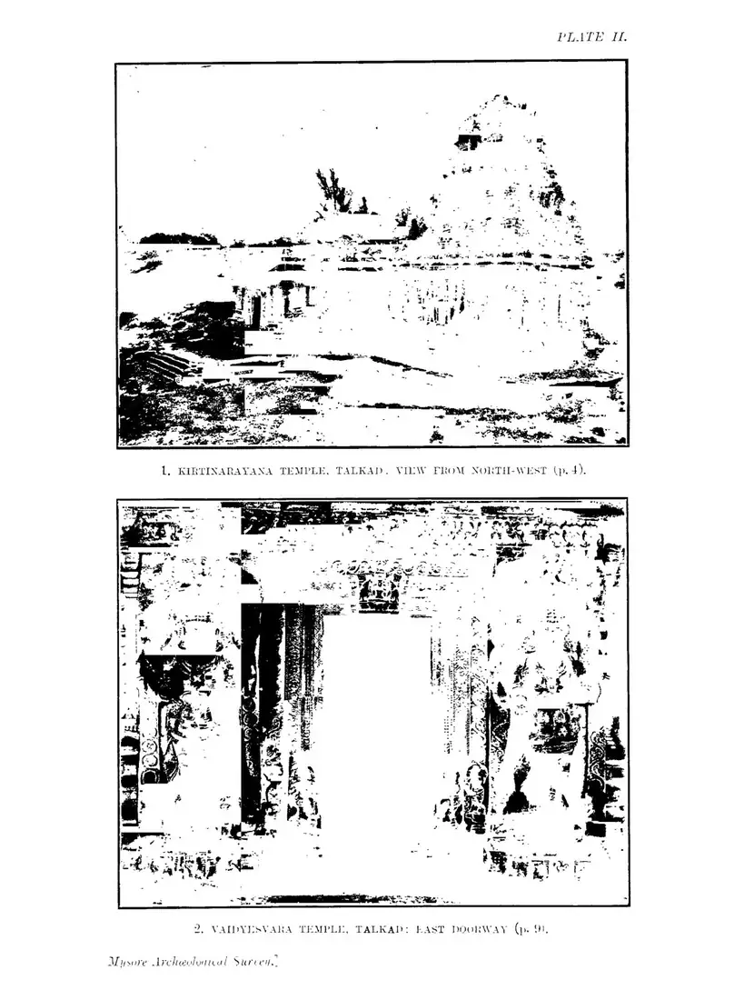
- KIRTINARAYANA TEMPLE. TALKAD. VIEW FROM NORTH-WEST (p. 4)
- VAHDYESVARA TEMPLE, TALKAD: EAST DOORWAY (p. 9)
Part II: Study of Ancient Monuments
Talkād
PLATE III, 1.
Kirtinārāyaṇa Temple
History; Platform and Towers; The Basement; Front Railings; Walls; Eaves; Parapet; Main Tower; Navaraṅga; Pillars; Ceilings; Images in the Navaraṅga; Sukhanāsi and Garbhagriha; Image of Kirtinārāyaṇa; Prākāra and other Buildings and Mahādvāra; Conservation note
Talkāđ on the left bank of the Kāvēri river is an ancient place which was, a thousand years ago, the capital of the Western Gaṅga History. kingdom. In the 11th century it was conquered by the Chōłas and made a provincial capital. In the year 1116 A. D. Vishṇuvardhana Hoysała defeated Adiyama, the Chōła governor of Talkāđ, and occupied the place—thus extending his territories from the Perdorai or the Kṛishṇā river to the south of the Mysore District. In the next year he completed several temples for Vishṇu in varicus parts of the realm, of which the Kēšava or Vijayanārāyaṇa temple at Bēlūr, the Nārāyaṇa temple at Toṇṇūr and the Kīrti-Nārāyaṇa temple at Talkāđ bear his inscriptions. In the last named monument on the south-east cornice running from the south to the north door-way of the temple, Mr. R. Narasimhachar discovered a long inscription in the Tamil language and Grantha characters inscribed in the year 1173 A. D. which states definitely that the temple of Kīrtinārāyaṇa was consecrated in the year Hēvilambi, corresponding to 1117 A.D. (second half of December). The original temple consisted of a garbhagrīha, an open sukhanāsi and a navaraṅga pavilion open on three sides (Plate III, 2). Above the vimāna appears to have been a large brick tower, probably identical with the one now existing.
Numerous smaller grants to the temple are recorded in the many inscriptions engraved on the outer cornices and on the pillars and walls of the navaraṅga: one of these records the presentation of a golden Lakshmī image to the god; another mentions that there was a shrine for the junior goddess on the north-west of the temple. On a pillar on the north-east of the navaraṅga is a Tamil inscription of the Kīlaka year which probably corresponds to 1123 or 1188 A.D. Since this record is partly hidden by a brick wall enclosing the open portions of the navaraṅga, the walls were evidently constructed at a later period. The bricks of these walls which are 10" × 6" × 2" i.e. , thin and flat like those of the compound wall outside, suggest that these structures were put up in the late Vijayanagar or early Mysore days. It is possible that they were intended also as bulwarks against the onrush of sand which had already begun to invade the temple of the junior Dēvi in the courtyard. As the main shrine was threatened with a sandy burial, the image of the goddess which is of late Vijayanagar workmanship, was rescued and installed in a chamber constructed at the southern end of the navaraṅga, the material used being the early Mysore type of thin flat bricks.
But the sand moved forward and covered the main temple too, compelling some of the beams to crack under its weight. Mr. B. L. Rice is said to have got the temple excavated and to have collected a few inscriptions. In 1912, Mr. R. Narasimhachar made a long halt and got the northern yard cleared of sand. The southern one also was cleared sufficiently to enable him to read the inscription of Vishnuvardhana on the basement; but the sand once again accumulated on that side, burying also the lower half of the eastern doorway.
The temple of Kirtinārāyaṇa (Pl. II, 1) unlike the other great Hoysala temples and like the temple of Vaidyeśvara, is built of granite and Platform and Towers. bricks, soap-stone being used only for the four round pillars of the navaraṅga and for the image; but it has all the characteristics of the other Hoysala temples. It is constructed on a platform whose face is ornamented with cornices and which follows closely the contour of the temple. On the platform, near each of the three original doorways of the navaraṅga there were two flanking towers which have now disappeared. The bases of two of them are seen outside the north door. The stairways leading up the platform are supported in the north by two yālis or trunked lions, a species which only rarely occurs in Hoysala sculptures, though it is common in the Chāvuṇdarāya basti at Śravaṇabelagola and other Gaṅga buildings. The platform is about four feet high and six to eight feet wide.
Above the platform rises the basement whose cornices are ornamented with trapezoid and latin cross-shaped mouldings similar to those of the Vīranārāyaṇa temple at Bēlūr. The hardness of the material perhaps prevented further carving of the kīrtimukhas and other designs for which these mouldings are the bases.
Around the front top, above the basement are the usual slanting railings but the row of turrets intended for their ornamentations is only carved in outline as are also the pilasters above the turrets. The panels contain rough flowers instead of the usual mythological sculptures.
The granite wall running around the west half of the temple has almost no figure sculptures. Its face is made up of indented square-shaped pilasters, the spaces between which are ornamented by rows of turrets, large and small; the larger ones are borne on two pillars, while the smaller are borne on one pillar each. The smaller turrets are generally under tōraṇas which are mostly of the serpentine type and surmounted by simha lalāṭas .
Walls.
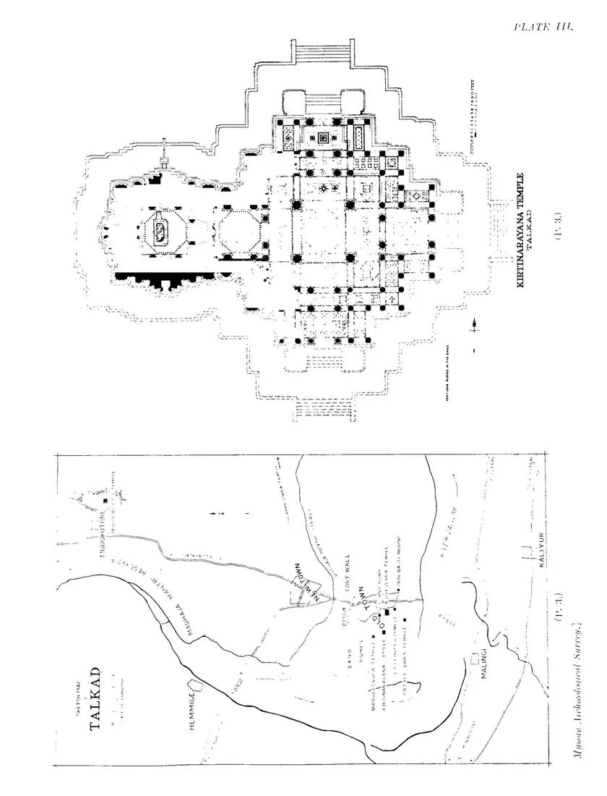
- KIRTINARAYANA TEMPLE TALKAD (p. 3)
A row of eaves of the usual kind runs round the whole temple, of which the only point to note is that the eastern part of it is less arched than the western. The latter's curvature is midway between that common in the Hoysala temples and that observed in the temple of Vaidyēsvara.
Around the roof of the temple which appears to be solid and except near the garbhagriha runs a brick parapet made up of the flattish type of bricks (10" × 6" × 2"). It is ornamented by turrets with square-shaped or boat-shaped śikharas. It is doubtful to what age these can be assigned; but they are possibly of the 17th century, though there is nothing definite to indicate that they are not very much earlier.
The main tower is a large and heavy brick structure standing with its top nearly 50 feet above the ground level. It is squaroid in shape and has a look more or less resembling the Dravidian structures contemporary with the Hoysalas. It is made up of bricks similar to those used for the parapet and appears to belong to the same date. It is possibly the original Hoysala structure, though the look of the niches adorning it and the parapet suggest a later date.
The navaranga is a moderate-sized hall with an indented square-shaped plan and has stone benches on its north-eastern and south-eastern sides extending to the north and south doorways respectively. It had originally the usual nine aṅkaṇas plus the four doorway aṅkaṇas. Its height and the width of its aisles are generously conceived, being each about 14 feet as at Bēlūr; but its western doorway aṅkaṇa has been converted into the sukhanāsi and its southern one into the Lakshmī temple. It has two niches on its western wall, each with a sqarish turret. Both of these are vacant, though the north one contained an image of standing Viśvakśēna which was seen by Mr. Narasimhachar in 1912 but is now reported to have been stolen.
The four central pillars of the navaranga are lathe-turned, round, potstone objects of the classical Hoysala type. Among the others, however, are pillars of various shapes like the eight-pointed star, sixteen-pointed with shallow fluting, the octagon and the indented square. A peculiar feature of the temple is that the beams on the inside of the doorway aṅkaṇas are supported by additional pillars, so that the hall has ten more pillars than it should ordinarily have. In some places, as in the Lakshmī shrine, they appear to be supporting different granite pieces which have been used to form one beam length, while in others, e.g. , near the east doorway, they appear to support beams which have cracked. But their shapes are undeniably Hoysala except the two pillars near the north doorway which have cubical mouldings similar to those in the Hiđimbēśvara temple at Chitaldrug. The noteworthy fact is that owing to the heavy weight above, the top portion of the pillar whose cup-shaped bottom rests on the bulging neck of the shaft has crushed the neck revealing the defective method of joining the parts of the pillars.
The ceilings of the navaraṅga which are made up of heavy granite slabs are either flat or carved out into shallow domes. In no case are they real domes of the type found in Bēlūr and Sōmanāthapūr. They have comparatively little figure sculpture but bear creeper scrolls, lotuses, and other flowers, lion faces and many other interesting ornamental desigus. The only figures noticeable are those of elephants and lions near the front doorway, of dancers and ṣiṣhis near the north doorway, and of Hanumān and Garuḍa near the Lakshmī shrine.
As already noted, the original images in the niches have been lost. Here are now kept three images of Ālṣvārs, evidently of the Vijaya-Images in the Navaranga. nagar period. All of them are seated in padmāsana with the right hand in chinmudrā. The left hand of one holds a book, while the other two images have their left hands in the yōga posture. They are pointed out as Nammālṣvār and Puḥalōkāchārya. The other is evidently Vedānta Dēśika. In the north aṅkaṇa of the navaraṅga is now housed Lakshmī, an image of the consort of the main god. She is seated in padmāsana while her hands are thus disposed: abhaya, padma, padma and dāna. The image is definitely of the Vijayanagar period.
The sukhanāsi doorway is a later insertion and has above its lintel a stucco image of Anaṅtaṣayana, probably of about the 17th century. The sukhanāsi contains two large oil bowls and images of Tirumaṅgai Ālṣvār and of seated Narasiṅiha.
The garbhagriha doorway which was the only doorway of the temple makes an attempt to imitate, though with a shallow cornice, the features of the Bēlūr garbhagriha doorway. It has no dvārapālas but has on the lintel a seated figure of Gajalakshmī. The garbhagriha has a shallow padma in the ceiling and three niches in the walls.
In the middle of the garbhagriha on a Garuḍa pedestal stands a large image of Nārāyaṇa in samabhaṅga . From the ground to the top of the tōraṇa, it is about ten feet high, the image proper excluding the crown being about 5½ feet high. The image is of the usual Hoysaḥa type and holds in its four hands śaṅkha, padma, gadā and chakra, while on the prabhāvaḥi appear the ten avatāras of Vishṇu. Though the image is classical, its face does not have the fine outline of the Bēlūr images. The lower part of the face is too depressed while the lower cheeks are bulging and insufficiently distinguished from the neck. The image, however, is on the whole grand and has an imposing appearance. Owing to the sinking of the ground below the pītha, its head is now slightly inclined to the left.
Around the temple is a high compound wall of flattish bricks which is provided with a parapet and holes for allowing percolating water to flow into the compound. Above the level of the parapet is another wall of rough stones. Both of these walls were evidently intended as barriers against the advancing sand and belong probably to about the 17th century—which may be the period of the walls enclosing the navaraṅga.
As already mentioned, there appear to have been shrines for the senior and junior goddesses on the north-west and south-west of the main temple. All traces of the former have now entirely disappeared. The tower of the latter shrine was just visible above the sand in April 1923. An attempt appears to have been made to excavate the temple in 1924 but as the beams had cracked underneath the weight of the sand in which the shrine was buried, it is said that the roof of the temple collapsed. Traces of the brick structures are yet visible.
To the north-east of the temple, inside the compound can be noticed a ruined mantapa and a stone brindāvana. On the south face of the latter, are the images of Nārāyaṇa and his consorts. When the sands in front of the temple were removed in 1925 the mahādvāra or upparige of the temple is said to have been revealed. No details are available about this structure.
Casuarina trees should be planted all round at a distance of about 20 feet outside the position of the old outer compound wall and after they are sufficiently grown to hold the sand together the courtyard should be fully excavated. The cost may come to more than Rs. 5,000. The roof should be re-done with concrete, the plants and the grass being removed. The tower should be repaired with plaster, its old shape being retained and a metal kalaśa being added. Since two of the pillars on the north-east of the navaraṅga have been moved out of position, the roof is in danger of collapsing. They should be restored to their original position, props being put in where necessary. The cracks and crevices in the roof should be pointed with cement as also the eaves. The small structure in the south-west corner of the sukhanāsi should be removed.
The brick walls enclosing the navaraṅga hall should not be interfered with until the sand drifts completely cease. Thereafter they may also be removed and, if possible, the Lakshmī shrine demolished and a separate shrine put up in the compound. The temple fully deserves these repairs and, if possible, may be lit up with electricity. The preservation of the mahādvāra may be considered when it is excavated.
Vaidyēśvara Temple
History; Platform; East Porch and Doorway; South Porch and Doorway; Basement
About 150 yards to the east of the Kīrtinārāyaṇa temple stands the temple of Vaidyēsvara almost at the south-western end of what remains of old Talkāđ, and close to the sand dunes. It is the most elaborately carved temple in the whole nighbourhood. It is constructed almost entirely of close-grained granite similar to the material used for the Kīrtinārāyaṇa temple ; and for a granite structure, the elaborate carvings are surprisingly good.
History. The origin of the temple, however, is enshrouded in mystery. A number of fragmentary Hoysaļa inscriptions have been found built into the basement of the mahādvāra but the fragmentary nature of nearly every one of them (Tn. Nos. 7 to 12) and their complete silence about the construction of the temple show that they were collected and used for constructional work at a later age. A stone inscription above one of the lintels of the new Pañchalingēsvara temple (Tn. 13) belongs to A.D. 1633 and refers to God Vaidyēsvara of Gajāraṇyakshētra. Several of the Chōļa and Hoysaļa inscriptions mention the god Rājarājēsvara possibly set up for the merit of Rāja Rāja Chōļa. It may be identical with the Vaidyēsvara linga. The name Vaidyēsvara is suggestive of Tamilian connections.
But so far as the temple itself is concerned there is no indication of such great antiquity. Its sculptures do not show the beauty characteristic of the sculptures of the Chōļa and Hoysaļa periods. The wall images are generally too short for their height and have wide nostrils, projecting lips, large expressionless eyes, flat hands and conical kirīṭas and an attempted show of the folds of dhōtis . The smaller relievos contain seated lions, mixed beasts (gryphons), etc., which are more common after the 14th century than before it. The stone used is also more coarsely grained than that usually selected by Chōļa sculptors. Here and there on the walls appear quadrangular based kalaśas which are a common feature of late Hoysaļa and of Vijayanagar architecture. The surmise is that the building cannot be definitely assigned to any date before the middle of the 13th century. A bit of confounding evidence is obtained from the image of Sarasvatī on the outer wall situated just to the east of the southern doorway. In her hand is held the representation of a book on which are written four characters in Kannađa reading Sa ra sva ti . The characters are more or less like those appearing in the 14th century inscriptions. Assuming that it was inscribed by the sculptor himself, we are led to infer that the temple belongs to the late Hoysaļa or early Vijayanagar period. Such a conclusion is opposed to the view till now held that the temple is of the Chōļa period. The tower is made up of flat late Vijayanagar bricks and is in a style similar to that found in the temples of the 15th and 16th centuries. On the whole, judging from these circumstances, even the date 1550 would not be very late for
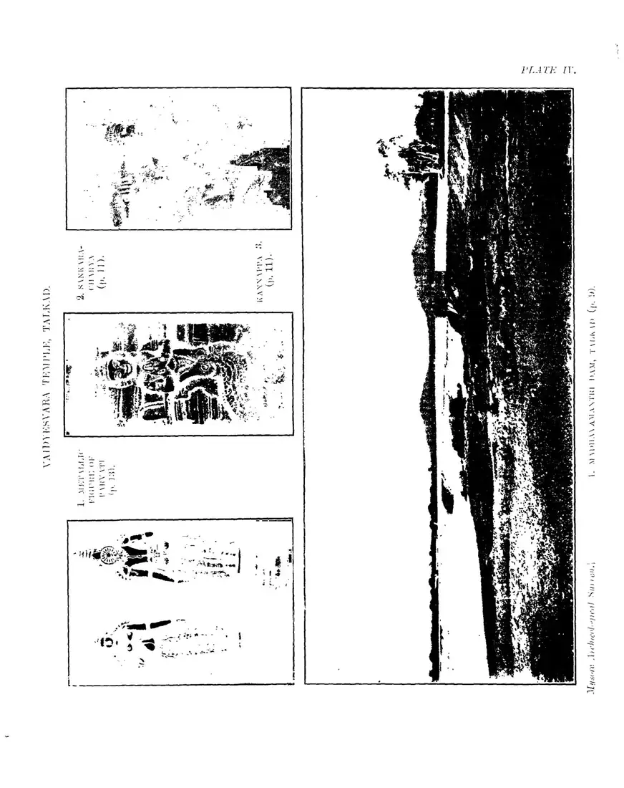
- METALIC FIGURE OF PARYAPI (p. 13)
- MIDAYAMANTRI DAM, TALAKAD (p. 9)
- SANKARA- CHARYA (p. 11)
this tower. But Mr. R. Narasimhachar has noted the great similarity between the pillars of the southern porch and those of the Sōmēśvara temple at Kuruđumale which latter belongs to the period of İlavañji Vāsudēva Rāya, a Chōla Viceroy under the Ballālas in the latter part of the 13th century. The sculptures of the Vaidyēśvara temple are definitely inferior to those of the Vidyāśankara temple of Śringēri, which latter was constructed during the life-time of Mādhavamantri.
But the view that the building is of the Vijayanagar period and not of Chōla increases our interest in it since it can be counted as one of the finest half a dozen temples produced during the Vijayanagar epoch. It can be classed with the Viṭhalasvāmi and Hazāra Rāmasvāmi temples of Hampi and the temples of Lēpākshi and Tadpatri.
Most of the structures in the courtyard, however, belong to a later age. The main temple is probably earlier than the new Pañchaliṅga shrines by a century or more.
On the north-east corner of the outer wall of the temple there is a four line Nāgari inscription which mentions a certain Mādhava. 1 It is very probable that the last word is the name of the Hoysala officer Mādhava, son of Perumāle Danāyaka, or of the famous early Vijayanagar officer Mādhavamantri, who was a native of Talkād and possibly got the present temple erected over the old linga which was installed in the Chōla times. It is a well known fact that the latter officer got constructed the neighbouring dam known as the Mādhavamantri anecut (Pl. IV, 4).
The temple has many features imitating the Hoysala temples. Its plan is square with each angle twice indented and it has only small porches instead of the fully developed mukhamanṭapas of the Vijayanagar period (Pl. V). The main shrine has no covered pradakshiṇā. But around the navaraṅga and the garbhagriha runs a narrow platform about 3 feet wide and about as many feet high, more than half of which is now buried under the surface of the courtyard. This is a feature which is usually absent from the Dravidian temples.
The original temple very probably had an ornate porch of one añkaṇa similar to the one in the south. It has now disappeared and in its place is a plain porch of 3 añkaṇas whose four pillars are similar to those of the manṭapa of the new Pañchaliṅga shrine (Pl. II, 2). The beams of the porch have been inserted into the east wall which was not originally meant to bear their weight, and have pulled it slightly out of plumb. A Mysore officer got the porch put up about 1633.
2
The south porch is definitely a part of the original structure and is a lovely piece of architecture. The south door of the navaranga which opens into it has on its jambs the images of two Vijayanagar officers who are most probably the persons under whom the temple was constructed. Their conical caps or kullāris , the dangling tassels of the waist cloth of one and the long coat of another declare that they and the temple belong to the late Hoysaļa or early Vijayanagar times. On the lintel is Gajalakshmī with Umāmahēšvara seated on the architrave. On either side of the doorway is a dvārapāla on the wall. In front of each of these stretches a platform ( jagali ) whose basement is finely ornamented with sculptured cornices and friezes. The bottom frieze shows lions, elephants, rows of gryphons, swans and other animals fighting each other or in playful attitudes.
The ceiling above has a large shallow padma but the finest portions of the porch are its two pillars which are exquisitely carved. They are shortish being about 8 feet high with the capitals having heavy plantain bud projections. At the bottom, middle and top of the pillar are three cubical mouldings separated by octagonal shafts which are themselves ornamented by beaded floral and creeper friezes and rearing lions at the corners. The faces of the mouldings are carved with images in high relief of various gods and saints. They are noted hereunder commencing from the south face of the eastern pillar, running from the bottom to top of each face and then proceeding clockwise.
East pillar:
(a) South face—Vishṇu as Varadarāja with consorts, Yōgānarasimha, Vēṇugōpāla.
(b) West face—Bhairava, Chandikēšvara, Gaṇēśa.
(c) North face—Saint Kaṇṇappa holding sugar-cane and sword and advancing upon Nandi installed upon a pillar; Umāmahēšvara.
(d) East face—Śiva standing, Vīrabhadra with vīṇā.
West pillar:
(a) South face—Śiva slaying Andhakāsura, Gaṇēśa, Bull Nandi.
(b) West face—Mōhinī, Hanumān, seated yōgi—perhaps Dakshiṇāmūrti.
(c) North face—Garuḍa, Kōdāṇdarāma with Lakshmaṇa and Sitā, Anantaśayana.
(d) East face—Kumāra on peacock, Dakshiṇāmūrti, lady worshipping linga which is entwined in the coils of a five-hooded cobra. (To be identified).
The lower half of the outer wall is shaped like a basement which is divided into five cornices by deep shadow lines. The middle cornice has a row of very small arches below each of which is either a linga, swan or some other figure carved.
Basement.
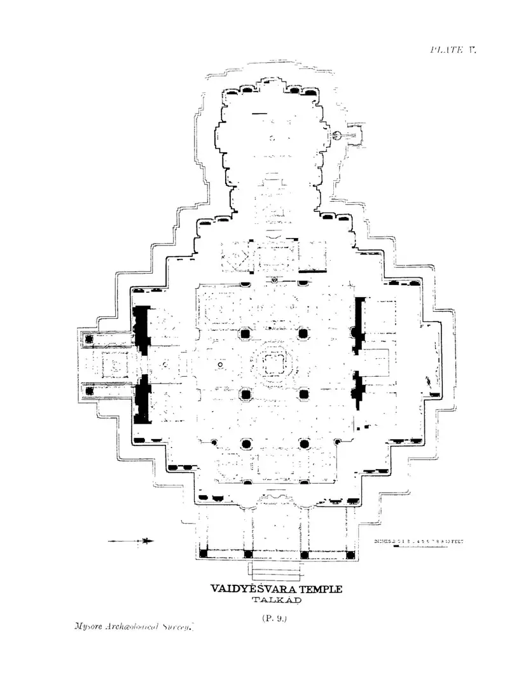
- VAIDYÈSVARA TEMPLE TALKÁD (p. 9)
Cited in the text: p. 9 ↩
Outer Wall and Images
Eaves; Parapet; Tower; Navaraṅga; Pillars; Ceilings; Navaraṅga Shrines; Images in the Navaraṅga; Sukhanāsi; Garbhagriha; Pañchalingēśvara shrines; Other Buildings; Mahādvāra; Conservation note
No heading in the body: this section starts at its printed page (11).
The upper portion of the wall has a row of narrow pilaster-like abutments alternating with shallow recesses. On each abutment Outer Wall and Images. and recess is a towered canopy, under which in the front half of the temple stand sculptured images. Each canopy has an ornamented tower with a śikhara surmounted by a lion face ( simha lalaṭa ) or by one or more kalaśas. These śikharas have varied shapes like the indented square, the drum, the boat and other designs and in the recesses above the lion faces are tōraṇas. The pilasters supporting the canopies are all square in plan and have capitals with plantain bud hangings. Most of the images have vāhanas and other sculptures carved on their pedestals. The more noteworthy of these sculptures are mentioned below :
East face
Mahishāsuramardinī, Brahma, Sūryanārāyaṇa.
South-East face.
Mōhinī, Lakshmī, seated Bhairava, Varadarāja. Mōhinī, standing Śiva, a man who is being devoured by a crocodile prays to a linga (pl. IV, 2) possibly Śankarāchārya, a hunch-backed saint resting on crutch (?), Gaṇēśa, saint with sword attacking Nandi pillar, Kaṇṇappa Nayanār (pl. IV, 3), Śiva as Kāpāli, Vīrabhadra, Arjuna shooting the Matsya-yantra , Śiva as Andhakāsuramardana.
South face.
Śiva standing (abhaya, arrow, bow, dāna), Chandraśēkhara, kalaśa with man-headed lion on base, Sarasvatī, dvārapāla of south doorway, Chaṇḍikēśa, kalaśa with a cow pouring milk on a linga on the base. Here the large images end. Further on, on the bases are interesting figures like a half-swan-goddess playing on vīṇā (Vidyādharī), swans with the heads of horses, lions, elephants, tigers and makaras and of yōgis, Gaṇēśa, ambegāl Krishna (baby on all fours), etc.
South-West face.
Four monkeys with one head.
North face.
In the centre on the wall there is a relievo representation of a storied Dravidian temple supported on each side by a lady attendant standing on a yāli and by a dvārapāla.
North-East face.
Vīrabhadra. On the east face of the north-east corner, on the tower of one of the canopies is engraved a four-lined Nāgari inscription, which reads ' Vaidyalinigāya namaḥ Madhava. ' Very probably the last name is that of either the Hoyasala governor Mādhava (c. 1260) or Mādhavamantri (c. 1360) Governor under Vijayanagar and conqueror of Goa. 1
East face.
To the left of the dvārapālas on a pedestal is a carved image of Vijaya Gaṇapati riding on a caparisoned mouse as on a horse. 2
As in the Hoysaḥa temples, the eaves run round the temple. They are finely made but their curvature is much greater than that of the Hoysaḥa eaves and there is no attempt made to imitate wood work on their underface. On the north-east corner just above Mādhava's inscription is carved a fine five-hooded cobra on the under-surface of the eaves with a fine stone chain dangling from its neck. From this chain is hung a lamp in the Kārtika month and probably it served also the purpose of lighting up the inscription.
Eaves.
Above the eaves runs a finely ornamented frieze of lion faces on which was probably resting the old parapet. The parapet now existing is composed of niched towers of brick and mortar and seems to belong to about the 17th century. The stucco images of most of the niches are damaged or lost.
Parapet.
The main tower of the temple over the garbhagriha is constructed out of the flat bricks resembling those of the 17th century. It is definitely of the Vijayanagar period though there would be some difficulty in deciding its exact date. It is Dravidian in type with a plan closely following that of the garbhagriha and with no projection over the sukhanāsi. The metal kalaśa on its top is about 25 feet from the ground.
Tower.
The east doorway of the navaranga is the most magnificently sculptured piece in the temple. It is made up of massive pieces of granite exquisitely carved over, every inch of them, in great detail. The sill has a seated lion in its centre, above it on each jamb is a dvārapāla and a lady attendant, above whom run ten vertical bands, each bearing an ornamental design in the form of flowers, beads, or creeper scroll with or without birds in the interspaces. The lintel continues these designs and has in front a Gajalakshmī group. On each side is a colossal dvārapāla carved in great detail in imitation of Hoysaḥa dvārapālas. They are said to be the largest in the Mysore State. A few of their special features may be noted: their kirīṭas are heavily ornamented with beaded work, their broadish nostrils and clearly outlined lips, thin conventionalised eyebrows, broad and large staring eyes and, more specially, the moustaches they wear suggest that they are Vijayanagar work. Folds
2 The mouse in the Mahā-Gaṇapati temple at Kuruđumale is also caparisoned. show on the bulging belly and the conventionalised representation of the folds of the devotee appear on the lower limbs. Above each image is a tōraṇa crowned by a lion face. These dvārapālas inspite of the defects of their age are really fine pieces of workmanship and can compare with any other pieces of granite sculpture.
The navaraṅga is a hall of 12 medium-sized squares or ankāṇas and has the shape of an oblong. In the south-east corner is an ugly granary, the west wall of which is said to be supporting a broken beam and the roof above. The south doorway leads out into the south porch.
Six granite pillars support the navaraṅga beams and they appear to imitate the indented square or pond-shaped pillars of the Hoysaļa temples. Their plantain-bud capitals give them a Dravidian look while on their bases are various small images of lions, saints, Šivalīlas, etc.
Of the 12 ceilings, the best is the central one which is an imitation of Hoysaļa ceilings. Above the beams is an octagon over which is a square of flat slabs and on its top is a large granite slab with a shallow padma and a poorly carved pendent bud. On the octagon under the canopies are rows of seated figures representing various forms of Šiva and his attendants.
In the north wall of the navaraṅga are two shrines which formerly housed the utsvamūrtis, consisting of a Chandraśēkharamūrti and a Tānđavamūrti with corresponding consort. The Tānđavamūrti and his consort have each on their pedestals the Kanuađa inscription :—
1. Maisūru daļavāyi Dođđa Rāja Vađeyara
2. Kaļale Virarāja Vađeyara putrarāda Nañjarāja Vađeya
3. ra sēve
The images of Chandraśēkhara and his consort were made by a local goldsmith 50 years ago. The broken original utsvamūrti of Chandraśēkhara belonging to about the 14th century was sent to the Archæological Museum at Mysore. Its consort is a beautiful image yet retained in the temple (Pl. IV, 1). From these cells a narrow secret passage leads through the north wall to the Sukhanāsi. In the passage leading from the navaraṅga to the south porch are two linga shrines.
Against the west wall of the navaraṅga there are two brick niches of about the 17th century one of which has an image of Gaṇēša. Among the other images and lingas in the navaranga are :—
Images in the Nava- ranga.
(1) Sarasvatī of dark grey stone (abhaya, pāśa, kalaśa and pustaka). Probably of the 13th or 14th century.
(2) Veṇkaṭēśa, a dark stone image about 6 feet high, of comparatively good workmanship, holding prayōga-chakra.
The temple has two sukhanāsis and the doorway of the inner one is finely carved like the front navaraṅga doorway, though on a smaller scale.
In the garbhagriha stands a black stone linga which has a very ancient and natural look. The pīṭha is low. It is an udbhava linga.
Behind the Vaidyēśvara temple is a row of five shrines with a verandah running in front which, according to an inscription in it, was built by a Mysore officer in 1633. The large manṭapa front which is borne on twenty tall pillars is a subsequent addition. On the south side of this manṭapa is kept a very fine old reliefo image of Mahishāsuramardinī with the goddess seated on the back of a lion. The headdress of the goddess, the animal's short mane and the pose suggest that it might have come from even the early Gaṅga period.
The Dēvī temple is a Vijayanagar structure with a garbhagriha, a sukhanāsi and a navaraṅga. The cubical mouldings of the navaraṅga pillars are carved with relief images and the garbhagriha contains a dark stone image of Pārvatī known as Mānōnmani Ambā. The image and the tōraṇa which are of a single stone are possibly of the 14th century.
Near the Pārvatī shrine stands a smaller shrine of Chandikēśvara whose round and 16 sided pillars have an oldish look. The image also is well proportioned and is perhaps an old image picked up somewhere and installed here. Of the other objects in the compound, one that deserves notice is a half worked image of Kunārasvāmni riding on a peacock.
The mahādvāra has no tower but its door frames are tall and characteristic of the Vijayanagar type but without any engraving.
The roof of the main temple is much damaged and cracked, so that the building leaks. The heavy parapet towers should be removed and the roof repaired all over. The granary in the navaraṅga and the numerous objects which are stored there except the images should be removed, a properly shaped stone prop being put in to support the cracked beam. The yard should be cleared of trees and plants and the flooring repaired as early as possible. Electric light may be provided. The brick and earthen structures in the sukhanāsi may be removed. The gaping cracks in the walls and the towers may be covered up with coloured cement. The navaraṅga may be paved with dressed granite slabs.
Part II: Study of Ancient Monuments › TalkādPātālēśvara Temple
About a hundred yards to the south of the Kīrtinārāyaṇa temple can be seen, in an excavated pit, the temple of Pātālēśvara. The building is comparatively small though it is one of the five Pañcha-linga temples. Its brick tower and the brick Nandis on its roof are, of course, recent. But the rest of the building which is of stone is of about the 10th century and its outer walls bear three Grantha-Tamil inscriptions and one Kannaḍa Hoysaḥa inscription. The four pillars of the navaraṅga are of granite and have the round Chālukyan shape. A basement cornice running round the temple outside is also round. In the navaraṅga are kept a number of images of various dates, among which are (1) a standing Brahma, with three faces visible and the hands holding: abhaya, rosary, kalaśa and kaṭihasta. The kirīṭa indicates that it might be a very old piece;
(2) Veñkaṭeśa;
(3) Dakshiṇāmūrti;
(4) Śiva as Bhikshāṭana-mūrti;
(5) Mahishāsuramardinī standing in samabhaniga with a buffalo head on the pedestal.
The linga in the garbhagriha is small and reddish in hue. It is said to change its colour into red in the morning, dark in the afternoon and white in the evening.
Maralēśvara Temple
About a hundred yards to the west north-west of the Kirtinārāyaṇa temple is the temple of Maralēśvara which, in many respects, resembles that of Pātālēśvara including its size. The round pillars in its navaraṅga and the rounded cornice on the outside of its basement support the evidence of the Tamil inscription on its outer wall at the south-west corner and declare it a monument of the Chōḥa, or early (Hoysaḥa) period.
The basement of the garbhagriha is ornamented with cornices having small arches and the navaraṅga has in addition to the two fine round pillars eight-sided and sixteen-sided fluted pillars. The sukhanāsi which was probably open originally, as in the Pātālēśvara temple, has been provided with a door-frame of recent make. In the navaraṅga are kept several images:
(1) Mahishāsuramardinī standing (abhaya, chakra, śaṅkha, and kaṭihasta)—with a buffalo-head on the pedestal (Gaṅga or Chōḥa period).
(2) Kumārasvāmi standing with fine peacock behind.
(3) Gaṇeśa.
(4) Mādhava standing, about 5 feet high, with gadā, prayōga-chakra and śaṅkha and the left front hand in kaṭihasta, instead of holding padma. The image is beautiful and could be assigned to an early period but its thin body, stout arms and conventionalised dhōti in combination with its ornate kirīṭa suggest the 14th century.
(5) Brahma.
(6) Sūrya standing—with two arms, Aruṇa and seven horses on the pedestal—the Chhāyās standing at rest and eight of the Ādityas on the tōraṇa the (eight Vasus?). The garbhagrīha has a large liñga, whose very rough surface suggests a natural shape. Its piṭha is about 5 feet square and the two together might be attributed to a very early date. (Compare with Praṇavēśvara of Tālgunda.)
Gōkarṇēśvara Temple
This is a very small temple facing the Gōkarṇa tank. The fact that a granite inscription is built into its roof shows that fragments of older temples have been utilised in this structure. Near the corners of the east face are the jambs of the 14th century granite temple. They perhaps belong to an earlier Gōkarṇa temple which might have been possibly built in the days of Mādhavamantri, for the name of Gōkarṇa reminds us of his conquest of North Kanara.
The Gōkarṇa tīrtha is a large tank about 150 feet square with the sides and steps finely built of granite.
Virabhadra Temple
This is situated next to the Vaidyēśvara temple on its south. It is a recent structure of almost no architectural value. It has a mukhamanṭapa, two navaraṅgas, a sukhanāsi and a garbhagrīha, all of them leaking badly.
The main image of Vīrabhadra has an elongated face, broad nostrils and mustaches characteristic of the Vijayanagar period. It is not a beautiful piece of sculpture.
Two relief figures in front of the temple, which are pointed out as two robbers Tala and Kāḍa are actually bhakta-vigrahas of two warriors. A Gaṅga inscription read by Mr. Rice near this temple is not now visible.
Part II: Study of Ancient MonumentsSōmanāthapur
Situation; history; etc
Sōmanāthapūr is a small village directly to the east of the Mysore city on the left of the Kāvēri river. It is three miles to the north-west of Sōsale and 24 miles by road from Mysore via the newly opened Sōsale bridge. There was no village in the place until Sōmanātha-daṇāyaka, a Hoysalā Governor, built an agrahāra here about the year 1258 A. D 1 . At the centre of the agrahāra he got constructed the temple of
1 Ep. Car. XI Tn. 97.
Kēšava, while at the east-north-east end of the village a temple was built consisting of 5 lingas, known formerly as Sōmanātha Bijjaļēśa and others. 1 A fort-wall enclosing an area of about 3 × 2 furlongs was put up around the village and its ruins can be seen today. Sōmanātha appears to have been responsible for the building of the now dilapidated temple of Lakshmīnarasiniha near the river as also the now disappeared temples of Purahara (Tripurāntēšvara), Narasinihēšvara, Murahara and Yōganārāyaṇa. Of these, the temple of Lakshmīnarasiniha and the damaged image of Yōganārāyaṇa near it are all that remain.
Kēśava Temple
History
The temple has been studied in detail under the following heads :—
I. History.
II. General Description.
III. Detailed Description :
Platform and its images
Elephant Frieze
Horsemen Frieze; Scroll Frieze; Mythological Frieze
3. Horsemen frieze. 19. Towered canopies. —
4. Scroll frieze. 20. West cell tower.
5. Mythological frieze. 21. South cell tower.
6. Front only—Small images. 22. North cell tower.
14. Makaras (Cells only). 30. Prākāra cells, etc.
15. Swans. 31. Mahādvāra.
16. Large wall images. 32. Dipastambha, manṭapa, etc.
The notes on a few of these only are given below :—
There are eight inscriptions in all from which information can be gathered about the history of the Kēšava temple. Four of these, viz. , Tn. 97, 93, 99 and 100 are inscribed on the large soap-stone slab near the mahādvāra of the Kēšava temple while one is to the left of the mahādvāra of the Harihara temple on the banks of the Tungabhadrā. The 6th inscription is on a large slab to the north-east of the Pañchalingēšvara temple at Sōmanāthapūr, 2 while two others 3 are built into the ceilings in the south-east and north-west verandahs of the Kēšava temple.
1 Ep. Car. XI Davangere No. 36.
2 Ep. Car. Tn. 101.
3 Ep. Car. Suppt. Tn. 176, 177.
3
From a study of these it is learnt that Governor Sõmanätha as stated in the Harihar inscription 1 dated in the year Vibhava or 1268 A. D., got the Kēšava temple constructed at Sõmanäthapūr along with its prākāra, etc. A few months later in July 1279 A. D. he made a grant for the maintenance of the temple with the permission of the Hoysaļa emperor Narasimha III. Thus, we see that the temple was constructed sometime earlier than 1268 A. D. and its execution was completed except for a few sculptural details by 1268 A. D. The other inscriptions of the Hoysaļa period show how Narasimha and his successor Ballāļa III made settlements of lands, etc., connected with the temple.
Of the two other inscriptions No. 177 is dated in 1497 A. D. and mentions that Nañjarāja Vađeyar of Ummattūr restored the agrahāra at the orders of Narasanāyaka, son of Ēšvaranāyaka while the king Immađi Narasimha Sāļuva was ruling. The other refers to the reign of Sadāśivarāya and mentions that the governor Ahōbalarāja, nephew of Aļiya Rāmarāya remitted the taxes of the agrahāra. Evidently these two inscriptions were standing elsewhere and were used for repairing the roof of the verandah. The basement of the verandah in the north-eastern corner has stones which bear Kannađa letters and figures, like ā F , ā ǵ etc. which show that they are the marks of masons who rebuilt this portion. A portion of the verandah to the north and west of the temple is supported on granite beams and square granite pillars which offer a marked contrast to the old Hoysaļa potstone beams and latbe-turned pillars. So, we conclude that the northern and the western verandahs and the basement of the north-east verandah were rebuilt sometime after 1550 A. D., very probably in the late Vijayanagar days since the characters of the masons' marks look modern. About 40 years ago the temple was partly repaired by the Mysore Government. In 1924, the ruined shrines to the north and south of the mahādvāra were removed, the porch in front of the mahādvāra was touched up and the whole temple repaired by the Mysore Government.
The platform on which the main temple is built is about three feet high and is situated in the centre of the court and planned exactly in accordance with the contour of the temple. (Pl. VI). It has only one flight of steps on the east on either side of which now remain the ruins of two towered shrines where stood the dieties guarding the stcps. Since each main vimāna of the temple is in the shape of a 16 pointed star, the platform behind it is also similarly shaped. Each ray of each of these starred platforms has a large stone projecting from the bottom of its angle supported by two smaller ones—one on each side of the larger pedestal. On the larger pedestal of each alternate star originally stood a stone elephant, while on the large pediments of stars in between them stood middle-sized stone images, perhaps Nāgas, supported on either side by a smaller image,
1 Line 41.
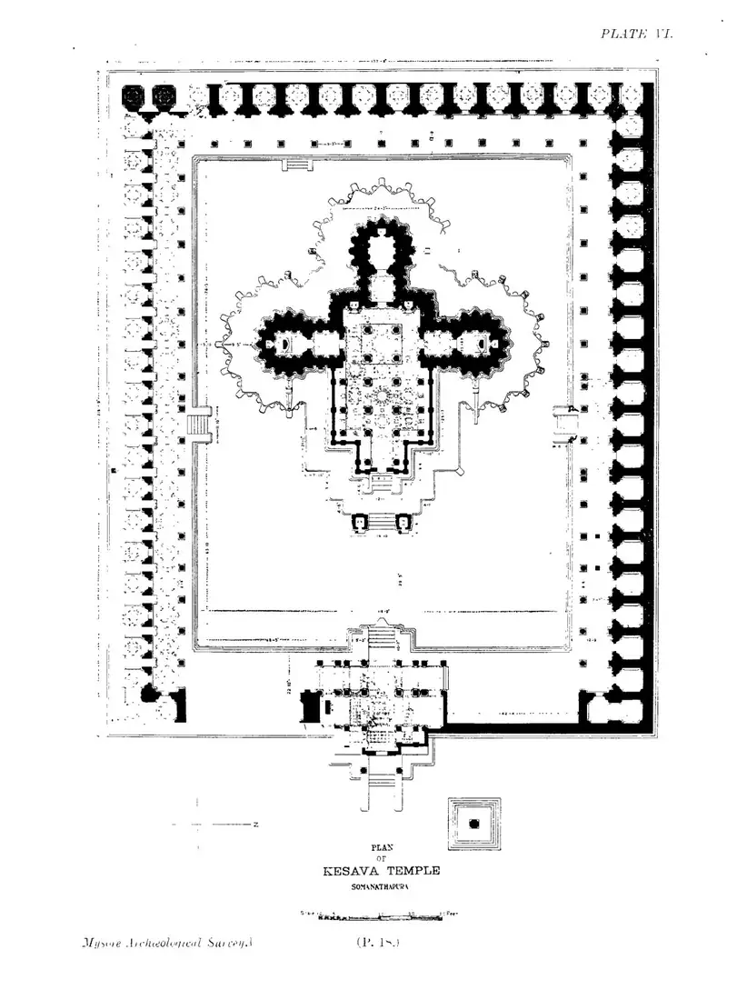
- PLAN OF KESAVA TEMPLE SOMANATHAPURA (p. 18)
Cited in the text: p. 18 ↩
possibly of a Yaksha. Thus around the three garbhagrīhas there must have been 15 elephants, 14 middle-sized images (Nāgas ?) and 58 smaller images (Yakshas).
Of the 15 elephants, 11 now remain in position. Of the other four, one is wrongly placed at the north-east corner of the platform, two guard the main gate of the temple and the broken pieces of one are lying behind the temple. These elephants which are well ornamented with jingles, bells, etc., are represented as standing animatedly in the company of their keepers, with soldiers accompanying near their feet. But some of the heads are two small and flattened and the legs too thick and far apart to resemble nature.
As for the middle sized and small images around the platform they existed when the temple was complete since the holes in the pediments and the groves in the platform slabs are still there to show where they had been fixed. In all probability they were rows of Yakshas and Nāgas ; and of the total number of 72 about seven now remain in the temple precincts, three on the north side of the platform, two near the front mantapa facing the inner courtyard and a Yaksha on the roof of the north-east corner and a Nāga on the roof of the south-east corner of the prākāra. Also a Nāga is wrongly built into the north-east parapet wall. Standing against the platform are now found several images of which only two, viz. , Nos. 9 and 10 appear to belong to the original series. Of the others, six large ones which are finely sculptured belong to the series of 64 images originally installed in the prākāra cells, while a few others appear to be sculptures of a later age. These have been placed around the platform at random unprotected from the sun and rain. Most of them are so broken that they baffle identification.
In the outer face of the main building can be distinguished about three different divisions, viz. , the basement, the wall and the top (Pl. I Elephant Frieze. Frontispiece). The lowest part of the basement begins, as usual, with a frieze of elephants mostly marching to left. This and the other friezes are narrow, being only about 6" or 7" in width and do not allow of the fuller treatment which the wider friezes of Bēlūr and Haļebīđ do. However, the elephants here are caparisoned war animals with one or two riders each as at Haļebīđ. They are mostly marching forward displaying their naturally playful but occasionally mischievous tendency. Some of them are catching hold of the riders of other elephants or enemies or even their own riders and tearing them up or trampling on them or goring them to death (Pl. X, 1), while others are playing with the bells, ropes and tails of proceeding elephants or with branches of trees, etc. Unlike the elephants of the Kēšava temple at Bēlūr and those of the Hoysaļēsvara temple at Haļebīđ, but like some of those at the Kēdārēsvara temple, a few of the elephants wear protective armour and covering ( jhulu ), while the usual convention is followed in representing these elephants. It must be conceded that most of them are provided with heads too small and legs too large to be natural. On the whole, these elephants are definitely less handsome than those at Bēlūr and Haļebīđ.
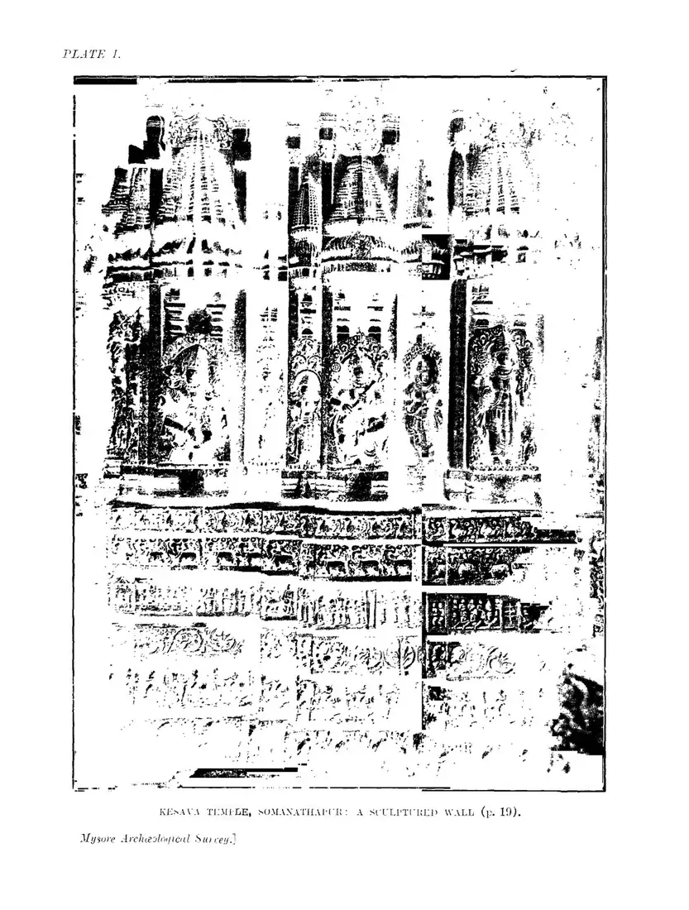
- KESAVA TIMPLE, SOMANATHAPUR: A SCULPTURED WALL (p. 19)
As at Haļebīđ the second row shows a long line of horsemen charging forward on their steeds. The men often wear shorts and high boots and hold spears or swords and shields. Some of them are princes since umbrellas are held over them by footmen (Pl. X, 2). Here and there jog on camels with drums on their backs (Pl. X, 3). The treatment of camels shows that the sculptors were familiar with the usual features of the bodily structures of the species. Occasionally there is a battle scene with the two central heroes fighting a duel on horseback. The horses however are sometimes more natural than those at the Hoysaļēsvara temple at Haļebīđ perhaps due to the fact that cavalry became more important and familiar as an instrument of war. Most of the animals, though comparatively short, have well proportioned snouts and their jumping, prancing, rearing, cantering, trotting, and wheeling back poses are well shown. But their tails are ugly and look more like those of donkeys; it is possible that the hair near the root of the tail was cut to some distance. As usual armed dwarfs, monkeys or creepers support the front legs of the prancing steeds. The usual reins and springless saddles are used.
The scroll frieze is a fine one of the usual type with lion faces in the outer corners and flowers, fruits, or occasional peacocks (face 10) in the convolutions.
The next frieze which is about 7" only in width contains the narration, partly broken here and there, of the famous Purāṇic stories, three of which are depicted here. Of these, the first is the Rāmāyaṇa running on to face 5. Then the Bhāgavata is repeated twice over from face 6 to 11. Lastly comes the Mahābhārata. The identification of the important scenes is attempted here. The antique figures below indicate sections of the walls commencing from the east and running clockwise.
1. (a) King. perhaps Daśaratha, seated in court in his palace surrounded by courtiers, soldiers and musicians with horses and camels, and elephants on one side.
(b) A battle scene; Daśaratha fights Indra's enemies.
2. (a) Warriors proceeding to battlefield in chariots, and on elephants and horses. These chariots are four-wheeled and much larger than those at Haļebīđ. In these scenes perhaps Daśaratha's victory over Indra's enemies is depicted.
(b) Daśaratha in court with the Ēishis advising him and his three queens.
(c) Putrakāmēshṭhi-yāga: Daśaratha's sacrifice for the sake of children.
(d) The birth of Rāma and his brothers.
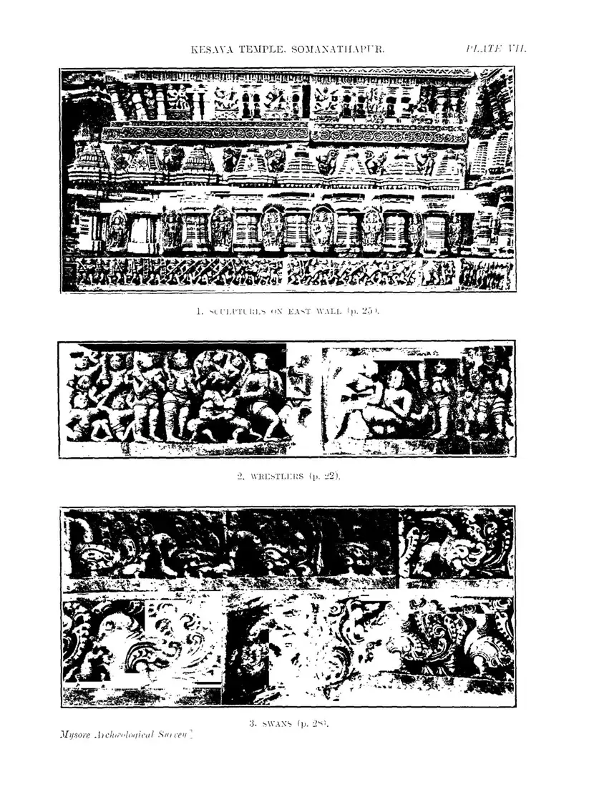
- SCULPTURES ON EAST WALL (p. 25)
- WRESTLERS (p. 22)
- SWANS (p. 28)
3. (a) The babies are named.
(b) They are rocked in cradles.
(c) They crawl on fours.
4. (a) They are given martial lessons.
(b) Viśvāmitra takes Rāma and Lakshmaṇa away.
(c) Rāma slays Tāṭakā and protects the yajña of the ṛishis.
(d) Rāma defeats Mārīcha and throws him in the ocean.
(e) Viśvāmitra takes Rāma and Lakshmaṇa to the court of Janaka.
(f) Rāma breaks Śiva's bow, defeats Rāvaṇa and marries Sitā.
5. (a) Marriages of Rāma and Lakshmaṇa.
(b) The marriage party proceeding in a chariot is challenged by Paraśu-rāma who is defeated by Śrī Rāma.
(c) Daśaratha and his four sons in durbar. (Sculptor-Mallitamma.)
(d) Rāma, Lakshmaṇa and Sitā are taken away by Sumantra in a chariot and reach a river.
(e) Rāma and party enter the forests and are received by the ṛishis.
(f) Virādha seizes Sitā and is slain by Rāma.
6. (a) Lakshmaṇa disfigures Śūrpanakhī, while she stands with folded hands!
(b) Rāma fights Khara, Dūshaṇa and Triśiras.
(c) Rāma hits the golden deer.
(d) Rāvāṇa abducts Sitā and slays Jaṭāyu.
(e) Sugrīva sees Sitā's ornaments.
(f) Hanumān and Sugrīva make friends with Rāma.
The rest of the story is omitted and the Bhāgavata commences here.
7. (a) Vishṇu as Śēshaśāyi in the milky ocean with Brahma and the dēvas praying.
(b) Vishṇu and Lakshmī in durbar.
(c) Vasudēva's marriage and procession.
(d) Vasudēva protected by Śēsha, the cobra, carries baby Krīshṇa away from the prison whose door-keeper sleeps standing, and crosses the Junnā.
(e) The child is handed over to Gōpī at Gōkula.
(f) Kainsa dreams and knows of Krīshṇa's escape.
8. (a) Krīshṇa is brought up in Gōkula, rocked in a swing, suckled by matrons, moving on fours, etc.
(b) He slays Pūtanī and Śakaṭāsura.
9. (a) He destroys the Yamaṭa (twin) trees and slays Bakāsura.
(b) He loots butter. (c) He lifts up the Gövardhana hill.
(d) He shows viśvarūpa to the cowherds and to Indra.
(e) He plays in the groves on the banks of the Yamunā.
(f) He wrestles with Chānūra and other wrestlers. (Pl. VII, 2).
(g) In the Jumnā he destroys Kālinga.
(h) He kills Dhēnukāsura.
10. (a) He kills Hayāsura.
(b) He fights Gārdabhāsura. The donkey has the tail of a horse. The python demon tries to swallow him.
(c) He lifts up the Gövardhana hill and is worshipped by Indra.
(d) Rāsakrīđā with Krīshṇa and Gōpīs alternating.
(e) Jalakrīđā.
(f) A demon is killed.
11. (a) Krīshṇa fights the Kuvalayāpīđa, the elephant, and arrives at Kaṇsa's palace.
(b) He wrestles with Chānūra.
(c) He kills Kaṇsa and celebrates his triumph.
12. (a) Kaṇsa is slain and Krīshṇa's victory is celebrated. The scene is twice repeated.
Mahābhārata begins : Sculptor—Mallitamma.
(b) Dhṛitarāshṭra's durbar.
13. (a) Bhīma shakes the Kauravas off their perch on a tree.
14. (a) The boys, Pāṇđavas and Kauravas, fight.
(b) Charioteers go forth to battle.
(c) Dhṛitarāshṭra prevents a war.
(d) The elders advise the youths. Among the former are seen Bhīshma and Drōṇa.
15. (a) Lākshā-grīha is burnt and the Pāṇđavas leave for the forest.
(b) The Pāṇđavas in the forest.
(c) Bhīma slays Hiđimba and marries his sister.
(d) To Hiđimbī is born Ghaṭōtkacha who is seen in a cradle suspended from a tree.
(e) Ékachakrapura.—Bhīma drives forth the food-cart and slays Bakāsura.
16. (a) The Pāṇđavas go to Drupada's town and stay in a potter's house. The potter is seen working with his wheel. (Sculptor—Mallitamma).
(b) The svayamvara of Draupadī.
(c) Arjuna hits the fish target and wins Draupadī.
(d) A chariot battle ensues.
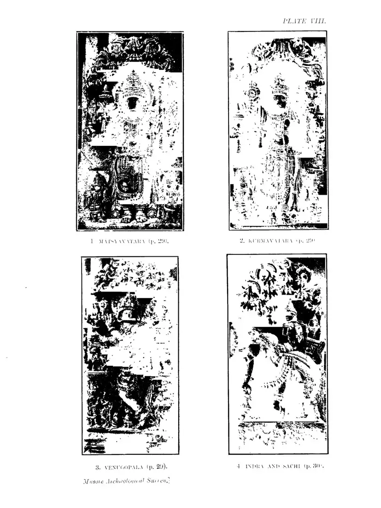
- MAPSYAVATARA (p. 29)
- KURMAVATARA p. 29
- VENUGOPALA (p. 29)
- INDRA AND SACHI (p. 30)
17. (a) The Pāṇḍavas return home with their bride.
(b) A great sabha is held at Hastināpura when Yudhishthira plays at dice with the Kauravas. (Inscription— Ha sti nā pu ra. )
(c) Kṛishṇa advises the Pāṇḍavas.
(d) Arjuna burns the Khāṇḍava forest from which the wild animals flee and he obtains boons.
(e) Dhṛitarāshṭra seated in court hears the story of the war.
(f) Two heroes fight, perhaps Bhīma and Duśśāsana.
18. (a) A king in court.
(b) The armies march forth including footmen with swords and shields, elephants, horsemen, a chariot with two heroes and a driver, and camels with drums.
(c) In the middle is seated under a canopy a hero in yōgāsana with attendants garlanding him. Probably Karṇa is appointed generalis-simo . The scene of the marching animals is crowded and realistic.
(d) The victorious five Pāṇḍavas are seated in state under a canopy.
Small Images
No heading in the body: this section starts at its printed page (23).
From this row onward we are actually above the basement level. This row contains a series of small pilasters, the panels between which show mostly the twenty-four and other forms of Vishṇu, some of which are now worn out or broken and difficult to identify. The most important of them are here named.—
1. No. 2. Vishṇu as Nṛisimha.
3. Dāmōdara.
6. Hari.
7. Mādhava.
9. Dancing Vishṇu with bow and arrow.
11. Vishṇu with sword, chakra, śaṅkha and śakti—Kalki.
12. Sūryanārāyaṇa with lotus, chakra, śaṅkha and lotus.
13. Vishṇu with śaṅkha, padma, śakti and chakra—Madhusūdhana.
14. Vishṇu as Indra with vajra, śaṅkha, chakra and śakti.
15. Vishṇu with pushpa, chakra, śaṅkha and phala—Kubēra (?)
16. Dāmōdara—Vishṇu with chakra, śaṅkha, gadā and padma.
17. Vishṇu with axe, padma, chakra and śaṅkha—Paraśurāma.
18. Vishṇu with padma, chakra, śaṅkha and a broken symbol—Janārdana (?)
In some of these images pāśa appears to take the place of gadā.
19. Vishṇu with chakra, śaṅkha, padma, and pāśa—Madhusūdhana (?)
20. Vishṇu with broken chakra, śaṅkha and a broken symbol.
21. Vishṇu with padma, chakra, śaṅkha and a broken symbol.
2. 22. Vishṇu with broken symbol, chakra, śaṅkha and gadā.
23. Mahishāsuramardinī.
• 24. Seated figure, perhaps Vishvaksēna.
25. Šiva standing holding scull-headed mace.
26. Pārvatī standing holding đamaruga.
27. Kumāra standing holding trident and spear.
28. Nandikēśa seated in yōga with bull's head.
29. Lakshmīnārāyaṇa riding on kneeling Garuḍa.
30. Vēṇugōpāla.
31. Gōvardhanadhāri.
35. Śakti holding buckler. Other symbols broken.
37. Broken figure of an old and bearded sage.
38. Standing god with sword, chakra, śaṅkha and long shield—Kalki.
39. Standing Vishṇu with symbols broken.
40. Lady standing with chāmara—Rati.
41. Lakshmīnarasimha.
42. Manmatha.
43. Šāradā seated with goad and book—other symbols broken.
44. Two-handed god standing, perhaps Manmatha.
45. Lady with a bunch of flowers, perhaps Rati.
46. Yaksha seated.
THE SOUTH LINE ENDS HERE.
North side—Beginning from the north, running eastward.
47 to 50: These have disappeared.
17. 51. Vishṇu with padma, śaṅkha, chakra and phala—Kēśava.
52. Vishṇu with padma, chakra, gadā and śaṅkha—Hṛishikēśa.
53. Vishṇu with padma, śaṅkha and phala—Kēśava.
55. Vishṇu standing—Uncertain.
56. Vishṇu standing—gadā visible, rest uncertain.
57. Vishṇu standing—gadā and padma visible—rest uncertain.
58. Vishṇu standing, holding pāśa, gadā, chakra, śaṅkha—Trivikrama.
59. God standing with the right front hand in dānamudrā.
60. Vishṇu standing with padma, chakra, gadā and śaṅkha—
Hṛishikēśa.
61. Vishṇu standing with padma, śaṅkha, chakra and phala—
Kēśava.
62. Vishṇu standing with padma, śaṅkha, chakra and phala—Kēśava.
63. Vishṇu standing with chakra, musala, śakti and a broken symbol.
67. Goddess holding śaṅkha, other symbols broken.
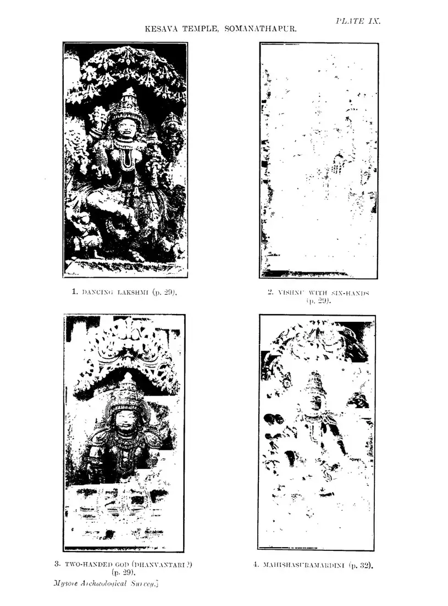
- DANCING LAKSHMI (p. 29)
- VISHNU WITH SIX-HANDS (p. 29)
- TWO-HANDED GOD (DHANVANTARI?) (p. 29)
- MAHISHASURAMARDINI (p. 32)
18. 72. Vishṇu with gadā and śaṅkha.
73. Kēśava.
83. Goddess standing—holding śaṅkha and chakra.
84. Goddess standing with padma, śaṅkha, chakra and phala.
85. Goddess standing, with abhaya, padma, pāśa and dāna.
86. God with mace and padma.
89. God standing, holding lotuses in the two back arms; the front arms are broken. Flames are springing. (A later sculpture.)
90. Vishṇu holding chakra, gadā, padma and śaṅkha—Gōvinda.
91. Vishṇu with chakra, śaṅkha, broken symbol and padma—Janārdana.
92. Vishṇu as Kēśava.
Railing Panels
No heading in the body: this section starts at its printed page (25).
Here we come to the railing which slants forward slightly. (Pl. VII, 1.) Its outer face is divided into a number of panels by double columns and in the panels are interesting sculptures. They are here studied commencing from the right of the front door.
1. 1. Boy Prahlāda standing.
2. Hiranyakaśipu standing.
3. Prahlāda being beaten by a servant.
4. Prahlāda is thrown into the sea and is unhurt by the rocks pelted upon him.
Corner—Rearing lion.
5. Prahlāda stands praying.
6. Hiranyakaśipu is seated advising Prahlāda.
7. Hiranyakaśipu demands that Prahlāda should show him Vishṇu.
8. Prahlāda pacifies Narasimha. The boy wears the sacred thread in prāchināvita as other Asuras do.
9. Prahlāda takes offerings to Narasimha.
10. A Rākshasa soldier.
11. Hiranyakaśipu.
12. Prahlāda is threatened with beheading.
13. A Rākshasa soldier.
14. }
15. } Rākshasa soldiers threatening Prahlāda.
16. }
17. }
18. Two rākshasas fighting.
19. }
20. } A group of musicians.
Corner with two lions.
4
2. 21. Prahlāda prays.
22. Narasimha fights Hiraṇyakaśipu.
23. Narasimha slays Hiraṇyakaśipu, as Ugranarasimha.
24. Narasimha blesses Prahlāda.
25. A demon king on the throne.
26. Lady moving with attendants.
27. A couple at love.
28. Obscene.
29. Guardsman with sword.
30. Obscene.
31. Obscene : perversity.
32. Obscene.
33. Obscene : perversity.
34. A couple standing.
35. Obscene.
36. Obscene.
37. Blank—not carved.
38. Huntress with dog carrying bow and arrow.
39. Vishṇu seated with phala, śaṅkha, chakra and bowl.
40. (Not identified.)
41. Garuḍa kneeling with folded hands, wings finely worked.
42. Vishṇu standing, holding śaṅkha, padma, gadā and chakra.
43. Bali making gift to Vāmana.
44. Trivikrama with one leg lifted up; from it flows down the river Gaṅgā.
45. Bali begging Śukra not to prevent his gift to Vāmana who stands in the foreground. The group is full of life and action.
46. Two consorts of Bali hold water ready for his gift to Vāmana.
From North, Eastward.
17. 47. }
48. } Daitya soldiers.
49. }
50. }
51. Hiraṇyakaśipu's betel-bag bearer.
52. } Prahlāda hearing Hiraṇyakaśipu's lecture.
53. }
54. Prahlāda praying.
55. } Prahlāda's teachers advising him to give up Vishṇu.
56. }
57. The teachers cajole Prahlāda.
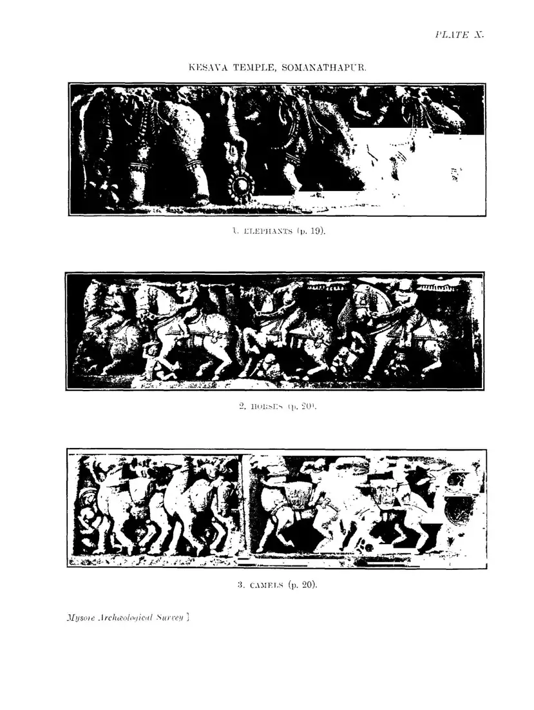
- ELEPHANTS (p. 19)
- HORSES (p. 20)
- CAMELS (p. 20)
58. } Hiraṇyakaśipu's guards.
59. }
60. } Hiraṇyakaśipu advises Prahlāda.
61. }
62. } The gurus fail again in inducing Prahlāda.
63. }
64. Guards.
65. } Hiraṇyakaśipu admonishes Prahlāda.
66. }
67. The latter prays to Vishṇu.
68. Guardsman.
69. Prahlāda at prayer.
70. Soldiers persecute the prince.
71. Prahlāda is thrown amidst flames.
72. Blank.
Corner—Blank.
18. 73. Vishṇu in sukhāsana, holding padma, gadā, chakra and śaṅkha.—Tri-vikrama.
74. Lakshmī in sukhāsana with abhaya, chakra, śaṅkha, dāna.
75. Govardhanadhāri.
76. Kāṭiṅgamardana.
77. }
78. } Ugranarasimha with Garuḍa to right and praying Prahlāda to left.
79. }
Corner—Rearing lion.
80. }
81. } Daitya guardsmen.
82. }
83. Hiraṇyakaśipu seated on the throne.
84. Hiraṇyakaśipu beating Prahlāda.
85. Prahlāda is offered poisoned fruits.
86. Flames do not burn Prahlāda.
87. The sword does not kill him.
88. The elephant refuses to slay him (?)
89. Two swordsmen try to behead Prahlāda.
90. Not identified.
91. Ĺishi seated—Śukra.
92. Demon king is seated with male and female attendants.
Above the makaras is a row of swans, the treatment of which shows a little more of variety than that of the makara frieze. Though the birds are marching to the left, they are shown, here and there, pecking themselves, turning their heads back,
Swans Frieze
beaking each other and feeding either themselves or their young which in one place are a whole roostful. (Pl. VII, 3).
Around the three garbhagrīhas there is a long row of wall images, each about 2' high, the whole sculpture being about 3' high including base and tōraṇa. They represent Vishṇu and other important dieties in their varied forms, their total being 194.
Large Wall Images
These could be divided into 90 groups consisting of a chief diety with consorts and attendants. Since these figures are much smaller than those of Bēlūr and Haļebīd they are slightly inferior in beauty and proportions, being somewhat thicker in the limbs and too short for their girth. The images behind the west cell are specially poor. But otherwise they are also very good, no pains being spared to ornament them and embellish their beauties. The bases are comparatively plain and often bear the names of the authors among whom are seen, Mallitamma, Chauđiah, Baliah, Masaṇitamma, Lōhita, Elemasiah and other names. Most of the 90 important figures are attended by one or two consorts with or without extra attendants and some of them like Vishṇu have also small figures of consorts, one on each side. The identification of some of these icons is difficult since they have six hands instead of the usual four. The consorts and female attendants have little individuality since they generally carry a padma and a phala and cannot be distinguished from each other. In fact, since most of them are figures of I akshmī, the sculptor never probably thought of distinguishing them and the builders have placed them discreetly in the receding spaces leaving the main figures projecting slightly forward prominently. The groups are here described clockwise beginning from the south-east.
1, 2. Vishṇu with consort as Vaikunthanārāyaṇa. The god is seated at ease on the coils of Ananta whose seven hoods are seen above. The god holds śankha and chakra and has a hand resting on the seat, the other hand being loosely placed on the knee. Gods and ṛishis pray to him around.
3, 4, 5. Tāṇdava-Gaṇapati—Elephant-headed Gaṇēśa dancing with his hands thus disposed: holding tusk-piece, svargahasta, padma, apūpa bowl; ladies to right and left, the one on the left drumming on đavaṇe. Adoring worshippers near his feet
6, 7. Dancing Šāradā holding in her eight hands vīṇā, lambahasta, aṇkuśa, akshamālā, svargahasta, (broken), vīṇā, pāśa, (broken), pustaka. She is accompanied by drummers (right one broken) and a lady attendant. Sculptor—Nañjiah.
8, 9. Vishṇu as Janārdana (?) with Lakshmī to right. He holds peculiarly akshamālā, chakra, śankha and phala.
10. Vishṇu as Kēšava (?) six-handed, holding cylindrical rod, padma, šañkha, chakra, pāša and dāna. Lakshmī to left.
12, 13. Kēšava with consort. He holds phala instead of gadā, now broken. Sculptor—Bāliah.
14, 15. Vēṇugōpāla—This is a good figure. Near the god's head are shown gadā, chakra, šañkha, padma, while near his feet is a cobra listening to the flute. (Pl. VIII, 3). To the left is his consort on whose pedestal is the sculptor's name.—Chāmaiah.
16, 17. Śrī Kṛishṇa. (šañkha, gadā, padma, chakra).
13. 19. Vishṇu as Indra. The god holds vajra, šañkha, chakra and rod. Consort to left.
20, 21. Vishṇu as Rāma, with six hands, holding arrow, chakra, padma, šañkha, gadā and bowl. Sculptor—Bomma. Lakshmī by sculptor Bāliah.
22, 23. Vishṇu with six hands. (Pl. IX, 2)—abhaya, šañkha, arrow, bow, padma, and dāna; perhaps Prasanna Rāghava.
24, 25. Vāsudēva as Varuṇa ? with six hands (padma, chakra, anċuša, pāša, šañkha and phala). The anċuša and pāša are noteworthy. The pedestal has the inscription Śa ni vā ra .
26, 27. Yōganārāyaṇa, the god is seated on padmāsana, his back hands holding šañkha and chakra, while his front hands are in the yōganudrā.
28, 29. Dancing Lakshmī, with a drummer on each side. (Pl. IX, 1.) Six hands: phala, chakra, svarga-hasta, šañkha, lamba-hasta, padma. Sculptor—Mallitamma.
30, 31. Halāyudha (?) with six hands holding chakra, spear, plough, pāša, šañkha and shield. Sculptor: Bāliah.
32, 33. Śrīdhara, (chakra, gadā, šañkha and padma). Sculptor: Mallitamma.
34, 35. Brahma (akshamālā, boar-headed ladel, pāša, kalaša and staff).
36, 37. Vishṇu standing (abhaya, chakra, šañkha and dāna).
38, 39. Two-handed god seated in padmāsana holding kalaša and apūpa (Pl. IX, 3). To be identified.
40, 41. Goddess standing with four hands: padma, anċuša, pāša, kalaša. Brāhmanī ? (The pedestal has the inscription Kārtika śu , 2, Bu ).
42, 43. Matsyāvatāra, Vishṇu with the snout and eyes of a fish standing with six hands: broken, šañkha, padma, gadā, chakra, garland. (Pl. VIII, 1).
44, 45. Vishṇu as Kūrmāvatāra; six hands: a fine pronged symbol, umbrella, chakra, šañkha, padma, phala (broken). (Pl. VIII, 2).
46, 47. Vishṇu as a monkey, holding chakra and šañkha in the back hands and a fruit with the front hands. To be identified.
48, 49, 50, 51. Pārijātāpaharaṇa : Indra with consort issues forth (Pl. VIII, 4) to defend the Pārijāta flower which is seized by Kṛishṇa and Satyabhāmā riding on the shoulders of Garuḍa. The elephant is fine as also the figure of Garuḍa.
52, 53, 54. Lakshmīnarasimha in sukhāsana with Prahlāda to right and Garuḍa to left. Both praying.
55, 56. Vishṇu standing, —all hands broken—sculptor Viṭṭha.
57, 58, 59. Vishṇu standing with one hand in dāna, and the other three broken. Sculptor Lōhita.
60, 61. Sāradā dancing—six hands—vīṇā, goad, rosary, pustaka, pāṣa, vīṇā. Sculptor Talamasayya.
The figures 1 to 60 and those from 135 to 194 are from the hands of superior artists, while those from 61 to 134 are the works of inferior artists, two of whom have signed their names. These sculptors retain the flat old type tōraṇas and their images lack grace, possessing heads too small for the height. They appear flat and lifeless in comparison with the other sculptures of the south and north cells. Thus the wall images of the west cell are definitely inferior, though their ornaments are worked in greater detail.
62, 63. Janārdana—broken symbol, chakra, ṣankha and dāna.
64, 65. Vishṇu standing holding saṅkha, three hands broken.
66, 67, 68. Vishṇu standing holding bow, other symbols broken.
69, 70, 71, 72, 73. Six-handed god—perhaps Harihara—trident and lotus visible. Other symbols broken.
74, 75. Vishṇu standing—lotus visible.
76, 77. Vishṇu standing—conch visible.
78, 79. Vishṇu standing—chakra and musala visible.
80, 81. Vishṇu standing—four hands—Trivikrama (abhaya, musala, chakra, ṣankha).
82, 83. Vishṇu standing as Paraṣurāma (padma, paraṣu, chakra and musala).
84, 85. Vishṇu as Halāyudha (chakra, plough, musala, dāna).
86, 87. Vishṇu perhaps as Halāyudha (padma, goad or plough, broken. symbol and musala).
88, 89. Vishṇu standing (chinmudrā, broken ṣankha, musala).
90, 91. Harihara ? eight hands (four broken, the rest hold sarpa, ṣankha, goad and dāna).
92, 93. Four-armed god standing (back hands holding chakra ? and ṣankha and front hands in aṇjali.)
94, 95. Vishṇu standing (plantain tree, musala, chakra, ṣankha).
96, 97. Vishṇu standing with four arms (padma and gadā are visible).
98, 99. Vishṇu standing—hands broken.
100, 101. Vishṇu standing (musala (?), chakra, śaṅkha, padma)—Mādhava. Nāgari inscription on the pedestal—two lines.
102, 103. Vishṇu standing (abhaya, chakra, śaṅkha, dāna).
104, 105. Vishṇu standing—eight hands of which five hold musala, padma, dhanus, śaṅkha and pustaka. This peculiar form is to be identified. Perhaps it is Trimūrti.
106, 107. Brahma, beardless (rosary, sruk, sruva, broken symbol).
108, 109. God standing with one hand in abhaya and the other on hip. Back hands broken. Veṅkaṭeśa ?
110, 111. Vishṇu standing—four hands (spear, chakra, śaṅkha, musala).
112, 113. Vishṇu standing as Mādhava (phala, chakra, śaṅkha, padma).
114, 115. Vishṇu standing as Yama—four hands (spiral lasso, chakra, śaṅkha, dāna). Sculptor Mārana.
116, 117. Vishṇu standing as Mādhava (javelin, chakra, śaṅkha, padma).
118, 119. God standing with front hands in aṅjali; back hands broken.
120, 121. Vishṇu standing (śaṅkha visible, other symbols broken).
122, 123, 124, 125, 126. Eight-handed god standing, holding gadā. Other hands broken. Perhaps Harihara.
127, 128, 129. Vishṇu standing, four arms (chinmudrā, chakra, śaṅkha and pāśa.)
130, 131. Vishṇu dancing, holding vīṇā, chakra and śaṅkha.
132, 133. Vishṇu dancing, with eight hands of which three are broken, and the rest have rosary, śaṅkha, kalaśa, lamba-hasta and one hand has two fingers raised.
134, 135. Vishṇu standing—padma visible, other symbols broken.
136, 137. Rati aud Manmatha—sculptor Masaṇitamma.
138, 139, 140. God standing—symbols broken.
141, 142, and 143. Lakshmīnārāyaṇa in sukhāsana with Garuḍa to right and elephant near Lakshmī's feet. Fine image. Hands damaged. Sculptor Masaṇitamma. The pedestal has exceptionally a floral design.
144, 145. Lakshmī seated, four hands (padma, chakra, śaṅkha ? and phala).
146, 147. Vishṇu standing as Janārdana (abhaya, chakra, śaṅkha, gadā). Sculptor—Mallitamma.
148, 149. Vishṇu standing, six arms (pāśa, gadā, śaṅkha and chakra visible).
150, 151. Vishṇu standing, six arms (musala, broken, śankha, chakra, javelin, padma).
152, 153. Vishṇu standing, six arms (rosary, mace, śaṅkha, chakra ? padma, phala) Vāsudēva ?
154, 155. Vishṇu standing, six arms (padma, gadā, plough, pāśa, chakra, śaṅkha) Halāyudha.
156, 157. Vishṇu standing—Paraśurāma (śaṅkha, gadā, pāśa, paraśu, padma and chakra). Sculptor Chāmaya.
158, 159. Vishnu standing as Janārdana.
160, 161. Vishnu as Hari (gadā, śaṅkha, chakra ? padma). Sculptor—Chauđiah.
162, 163. Sūrya with a Chhāyādēvi on each side (four arms—abhaya, padma, dāna). No sculpture on pedestal. Sculptor—Chauđiah.
164, 165. Mādhava, six hands (abhaya, gadā, chakra, śaṅkha, padma and dāna).
166, 167. Vishnu standing as Dāmōdara, (chakra ? śaṅkha, gadā, padma).
168, 169. Vishnu as Trivikrama.
170, 171. Vishnu as Nārāyaṇa (śaṅkha, padma, gadā, chakra).
172, 173. Vishnu as Janārdana, six hands (abhaya, padma, chakra, śaṅkha and phala).
174, 175. Vishnu as Mādhava (abhaya, gadā, chakra, śaṅkha, padma, dāna)
176, 177. God standing—eight hands (of which three hold sword, padma, śaṅkha; rest are broken). Perhaps Harihara.
178, 179. Vishnu standing—four arms of which two are broken, others hold chakra and śaṅkha.
180, 181. Vishnu standing—four arms—(broken, chakra, śaṅkha, pustaka). To be identified.
182, 183. Lakshmī dancing accompanied by drummers. Eight arms of which those holding abhaya, phala, chakra and dāna are visible. Rest are broken.
184, 185. God standing—six arms, (chinmudrā, padma, aṅkuṣa, dāna, two broken). Sculptor—Mallitamma.
186, 187. Vishnu as Kalki, four arms (sword, chakra, śaṅkha and long shield). Sculptor—Mallitamma.
188, 189. Mahishāsuramardinī, some arms broken. (Pl. IX, 4) Buffalo etc., well carved. Fine group (damaged). Sculptor—Mallitamma.
190, 191, 192. God standing with four arms (arrow, pāṣa, chakra and śaṅkha). To be identified. (Mallitamma).
193, 194. Dancing goddess, with eight arms of which two exist (in abhaya and dāna), and the rest are broken. Drummers and musicians to right and left playing on mṛidaṅga, ḍavaṇe and large and small cymbals. Sculptor—Mallitamma.
(End of the series.)
• Over each of the large wall images overhangs a fine ornamental tōraṇa or arch. The arches around the western garbhagriha are mostly of the old type containing flat, serpentine and other bands of not very great elegance. But around the south and north cells, the tōraṇas are nearly all made up of fruit and flower-bearing creepers, finely shaped and of varied forms and designs. Some of them have lion faces in the centre,
Tōraṇas
Ornamental Cornice; Towered Canopies; West Cell Tower; South Cell Tower; North Cell Tower; East doorway; Navaraṅga; Pillars
while others show buds, flowers and fruits of various kinds characterised so well that they can be identified. Some of these are photographed along with the larger images.
A little above the tōraṇas runs an ornamental cornice, about six inches deep, which continues around the three garbhagrīhas. It is shaped like ordinary double eaves with beaded pendant work dangling from its edge throughout the length.
Above the cornice is found an imitation of perforated railings on which appear square pilasters bearing turrets. Corresponding to each major wall figure are two pilasters with a large towered canopy above them, while above each minor figure is a single pilaster supporting a narrow tower. A detailed study of the towers is most interesting. Most of them have straight tapering outlines, while a few are curvilinear. Some are indented square-shaped in plan with the angles having from two to five indentations, while others are definitely star-shaped being the visible halves of 16 pointed stars borne upon 16 petalled padmas. Above the canopy ceiling, the towers rise in numerous steps. Sometimes as many as ten in number are surmounted by suitable šikharas bearing round stone kalašas. Often a tapering band proceeds upon the face of the tower, ornamented sometimes with some beautiful creeper design. The known varieties of Hoysala towers appear to be illustrated here from the simplest to the most ornate. Some of the last are exact replicas of the real towers of this very temple, being composed of a multiplicity of turrets arranged tier above tier so as to form a star-shaped tower.
Each of the three towers of the temple is elaborately but very similarly designed with only slight differences (Plate XI). But the western tower is first described here. The towers are all of stone and are very probably hollow inside. Each is built in the plan of a 16 pointed star or lotus with an oblong projection above the sukhanāsi. The elevation of each individual star is composed of four sets of ornamental turrets each higher one being smaller than the one below. Each of these turrets is in the shape of the diagonally cut half of an indented square-shaped plan with a squarish šikhara surmounting three tiers and crowned by a stone kalaša. If the main towers were full with 16 petals and each petal was composed of four turrets, then there ought to be 64 turrets for each tower. Since the frontal projections disturb three rows in front, their towers are distributed over these projections which are also ornamental. Since each row of turrets is cut by lines of shade into five sculptured rows, each tower has above the bud of the eaves and below the šikhara 20 such rows. Lion faces, kirtimukhas, makaras, Yakshas, Gandharvas and figures of dancers abound here. And on the western cell the eight Dikpālakas are represented on their vāhanas just below the second row of turrets. On the frontal projection there were
5 originally sculptured panels enclosed by kirtimukhas. But these kirtimukhas of the western tower have been stolen and lost. The top of each tower is made up of a stone šikhara formed in the shape of an inverted padma. Originally each šikhara was surmounted by a heavy round stone kalaša which has now been substituted by a small cement kalaša.
The south tower is very similar to the western one but has most of the kalašas crowning its turrets intact. Its frontal projection which looks northward has slightly settled towards the west so that its kirtimukha with dancing Vishnu has its top slightly bent westward. The image has eight hands, some of which are in abhaya poses, three are broken, and two hold gadā and musala. But the south cell has no Dikpālakas guarding it.
The north cell tower is similar to that of the south cell and has the three frontal kirtimukhas facing south intact. The lowest has standing Kēšava and the middle one shows Krīshṇa lifting up the Gōvardhana. Above is dancing Vishnu with six hands (padma. lambahasta, chakra ?, svarga, šankha, and phala.) To his right and left are musicians with đavaṇe and mrīdaṅga, drums and cymbals.
The three towers forming the three peaks of this trikūṭāchala temple are beautifully proportioned and well poised so that in spite of their highly ornate character, they have a most pleasing appearance. It is their design, proportions and equipoise that have given the Sōmanāthapur temple its fame for beauty.
Compared with the doorways of other temples, the east doorway is a very plain structure. Very probably further work in this temple was stopped before this doorway could be embellished with carvings. It is now provided with battened wooden doorways.
The navaraṅga is an oblong structure with the usual nine squares extended to the east by three aṅkaṇas and the jagali platforms for seating the worshippers. Owing to the extension, it is comparatively spacious and looks like a hall, its eastern half being covered by pierced screens. It has three doorways leading to the three cells and two niches against the western wall. The latter perhaps contained Gaṇēša and Mahishāsuramardinī which with the three main gods formed the Vishnu Pañchāyatana.
All the pillars in the navaraṅga, except two, are almost of one size and shape viz. , of the usual lathe-turned round type being a little too thick for their height. They look squattish and contain the usual disc, bell, pot, wheel and umbrella-shaped mouldings.
Pillars.
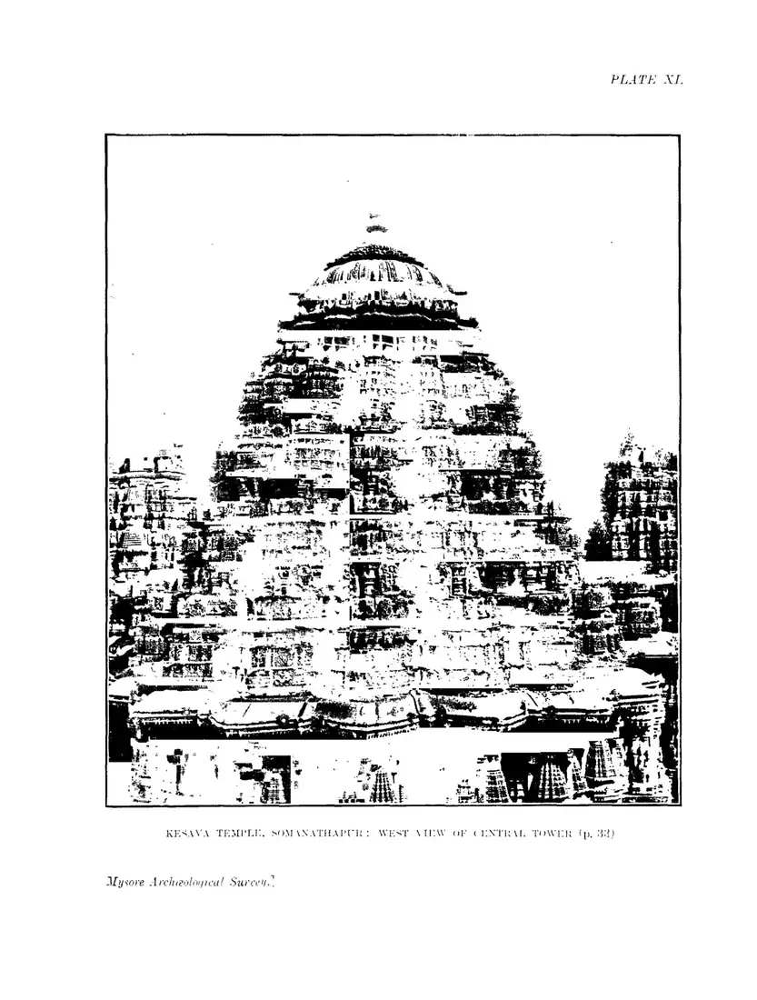
- KESAVA TEMPLE, SOMANATHAPUR: WEST VIEW OF CENTRAL TOWER (p. 33)
Cited in the text: p. 33 ↩
The four pillars of the central square of the navaraṅga, however, have Yakshas guarding each face of their bases and formerly bore 4 bracket images each. These have now disappeared. The two pillars immediately to their east are in the shape of 32 pointed stars with the alternate rays large, while those in between them are small.
The navaraṅga roof has sixteen squares nine belonging to the main navaraṅga and seven to its eastern extension. Each of these squares has a beautiful ceiling. In fact this temple is famous for the remarkable beauty and freshness of its ceiling domes. Each dome is an imitation of a wooden structure and shows the curved wooden ribs, rafters and pendent nail heads in imitation of wood work. But these are artistically designed and are presented in forms of varying beauty. Some of the domes are covered by neatly arranged imitation palm leaves. Here they are numbered in order commencing from the central navaraṅga square, proceeding around it from the east and continuing from near the east door clockwise. The most beautiful of the ceilings are mentioned here.
Ceilings
South Cell; West Cell; North Cell; Prākāra Cells; Mahādvāra; Dipastambha; Pañchalingēśvara Temple; Maṇṭapa; Lakshmīnarasimha Temple
(1) Above the Dikpālakas of the central ceiling rises a round pillared gallery with unsculptured blocks between the pillars. The latter support towered canopies, while above is a dome formed by 32 arched beams jointed together by three circular rows of rafters with a large pendant in the centre.
(2) and (3) The rafters are jointed like 1.2 pointed stars.
(4) Rafters, circular.
(5) Rafters in Śrī-Chakra plan.
(6) Rafters, octagonal.
(7) A serpentine band interlacing the square formed by the rafters.
(8) Rafters, circular.
(9) Rafters forming 16 pointed star.
(10) Near the east doorway is the most elaborate of the ceilings. A detailed drawing of it has been made. Below are the eight Dikpālakas supported by their retinues of soldiers, musicians and dancers. Above them overhangs a gallery surmounted by heavenly musicians, dancers and Yakshas. Further up rise 32 towered pilasters with lions near the towers and a standing deity in each inter-space. Among these deities are various forms of Vishnu and Śiva. Above this level, there are three circles of horse-shoe shaped horizontal semi-domes whose presence here is most interesting. Semi-domes are familiar in Moghul doorways but they are not so prominent in Hindu architecture in which again horse-shoe shaped arches are comparatively rare. In the middle is a large and beautiful pendant, about four feet high, hanging down and shaped like a flower bud.
One of the pillars supporting this has on its capital a yāli or elephant-faced lion. This is noteworthy since yālis are rare in Hoysala sculptures. Similar animals are seen on other capitals also.
The doorway leading to the south sukhanāsi is guarded by two dvārapālas—Bhadra and Subhadra—and has on the lintel a Vēnugōpāla group. Above the canopy is seated Lakshmīnārāyaṇa in sukhāsana with šaṅkha, padma, gadā and chakra.
South Cell.
The sukhanāsi has a flat ceiling below which are the Gandharvas and the Dikpālakas with their retinues. The garbhagriha doorway is defended by Jaya and Vijaya while on the lintel Vishṇu is seated. Above the canopy, Vishṇu is dancing holding in one of his hands a šaktipāša.
The south garbhagriha is about eight feet square and has like the other cells a small niche in the wall behind the god. In the centre of this room on a large Garuđa pedestal stands a beautiful image of Vēnugōpāla, the whole piece being about 6\frac{1}{2} feet high and the image only about 4\frac{1}{2} feet. Here Krīshṇa is represented as being fully ornamented with a jewelled diadem, large ear-rings, necklaces and garlands, armlets, bracelets and finger rings, girdle, anklets and toe-rings. He stands crossing his legs and reclining against a tamāla tree while he plays on a long flute held up in both of his hands. His fingers are playing on the instrument and in response to his divine music, the cows have gathered around him and are listening intently with up-lifted heads and tails around. On the supports bearing the tōraṇa on either side of the god below is first a consort. A cowherd reclines on his staff and stands listening on one side. Above the consorts are the cows. Further above them is a cowherdess coming up in such a hurry that her dress has slipped off, while on the other side are more cowherdesses. Above them are the řishis and the symbols of Vishṇu, while on the tōraṇa there are more řishis. Near the fringe of the tōraṇa are shown the ten avatāras of Krīshṇa, viz. , Matsya, Kūrma, Varāha, Narasimha, Vātnana, Parašurāma, Šrī Rāma, Balarāma, Buddha and Kalki.
The image is a beautiful piece of sculpture, though a portion of the flute is broken. It stands in tribhaṅga and is in an ideal poise for music and joy.
The doorway of the west sukhanāsi is similar to that of the south with this difference. The lintel has a standing image of Kēśava while on the top of the canopy inside a kīrtimukha is Lakshmī with an elephant on each side. Further above is Vaikuṇṭha-Nārāyaṇa seated on the coils of Anaṅta. Since the lintel stone has cracked, a rude modern support has been given to it.
West Cell.
The west sukhanāsi has also a flat ceiling above a row of Dikpālakas and one of Gandharvas.
The west garbhagriha doorway is also similar to the south one and has on the lintel Lakshmīnārāyaṇa in sukhāsana (šaṅkha, padma, gadā and chakra), with kalaša and elephant below Lakshmī. Above the canopy is Vishṇu in sukhāsana (abhaya, šaṅkha, chakra, dāna). The west cell also has a flat ceiling above the Gandharvas and Dikpālas as in the sukhanāsi. The original Garuđa pedestal stands but the god Kēšava is missing. Four images are placed here, viz. , Lakshminārāyaṇa, Lakshmī, Lakshmaṇa and a seated two-handed goddess with the right hand in abhaya mudrā.
The doorway of the north sukhanāsi which is similar to the others and is guarded by Bhadra and Subhadra has on the lintel an image of Janārdana with consorts, while above the canopy is Lakshminarasimha.
North Cell.
The sukhanāsi and its ceiling are similar to those of the south cell and the garbhagriha doorway has on the lintel seated Lakshmī (without elephants) holding rosary, chakra, šańkha and kalaša. Above the canopy is Yōganārāyaṇa seated in yōgāsaṇa. The north garbhagriha which is similar to the south garbhagriha has on a large Garuđa pedestal a fine image of Janārdana, 6 feet high, the image being about 4\frac{1}{2} feet high. The god wears the usual kirīṭa and all ornaments and holds in his four beautiful hands padma, chakra, šańkha and gadā. A consort supports him on each side. The tōraṇa is composite having a jewelled band inside a serpentine tōraṇa. Near the outer rim are the usual ten avatāras of Vishṇu. The image is a piece of beautiful sculpture wearing a calm and dignified look and is undamaged.
As stated before, the temple proper is surrounded by a prākāra with a structure of two ańkaṇas running all around. Of these, the inner ańkaṇa is a long verandah supported by round lathe-turned soap-stone pillars, some of which to the west and north have been in later days substituted by square granite pillars. The outer ańkaṇa is divided into 64 cells opening into the verandah with a stairway on the south-west leading up to the terrace. Each of these cells has a plain but typically Hoysala doorway with its characteristic lintel ornamented with drops and curvilinear turrets. Each cell has now a large granite base on which originally stood a soap-stone pīṭha or pedestal. Each cell originally housed a finely sculptured image, about 4 feet high, a description of which is given in at least two inscriptions, viz. , Tn. 93 and Dn 36. They appear to have been these: Matsya and nine other avatāras of Vishṇu 10; Muraharanārāyaṇa or Hamsanārāyaṇa and others 12; Kēšava and others 12; Sańkarshaṇa and others 12; Viśvaksēna and others 4; Brahma and others (with corsorts) 6; Indra and others 8; total 64. Of these 64 fine images, not more than 10 now remain. These have already been stated as now adorning the platform of the main temple. One of them, a piece of the headless broken-limbed body of Trivikrama, was found among the heaps of stones outside the temple, while two others, of which one is Varāha, lie broken inside the cells. The other images in the cells are modern. They are just mentioned here.
Cell 15 standing image, broken ; late Vijayanagar work.
24 Kēśava holding conch ; three hands broken.
25 Garuđa pedestal only.
27 between 20 and 21—stairway.
32 Inscription on the lintel : savanāna ṣ ṣ ā .
34 Ganēśa, rude and unfinished.
36 Garuđa pedestal and Dharanīvarāha standing to front, two hands and both legs broken.
37 In verandah ceiling, Vijayanagar inscription of 1551 A. D.
41 Garuđa pedestal.
43 Garuđa pedestal.
50 Lakshmi seated. Late Vijayanagar work in soap-stone. Probably the image served as the consort of the main diety of the temple in the late Vijayanagar days.
45 Figure of Rāmānuja, seated ; body below waist and bottom of tridaṇđa only visible.
Cells. 1 to 4 and 61 to 64 have now disappeared.
In front of the mahādvāra is a shallow porch now supported by two round pillars, on the outside of which there was formerly a rounded parapet wall. There ought also to have been in front of the pillars a pair of large sized elephants. In their place have now been placed two small elephants which were originally supporting the platform of the main temple. The south elephant is tolerably good. The care with which the renovators have done their work is shown by the fact that the Garuđa and the elephant pedestals inserted below these elephants are both topsy-turvy.
The mahādvāra has no dvārapālakas or other ornamental sculptures. It is rather large as is usual in all upparige doorways of Hoysaļa temples (9' × 4½'). Inside the mahādvāra is a jagali platform and the structure had never perhaps any gōpura. To the west of the platform is the upparige manṭapa of 5 aṅkaṇas north to south and 2 east to west. It is also supported by rounded lathe-turned pillars and it corresponds in structure to the shrined verandahs to its north and south. At its south end is a fine large stone slab 11' × 4' × 1¼' on which Sōmanātha's inscription and three others are engraved. In the sculptured panel on its top under a simuhalalāṭa stands the image of Kēśava in the centre with Janārdana and a cow suckling its calf and the moon to its left and Vēṇugōpāla and Garuđa and the sun to the right.
Outside the temple to the north-east of the mahādvāra stands a large grey stone pillar more than 30 feet high. A recent square platform supports its base. From the square develops an octagon and from it a long 16 sided shaft each side bearing
Dipastambha.
narrow fluting. Above the shaft is the neck of the pillar adorned with the 16 sided wheel and on the top borne on a lotus is a square abacus. On its top a lamp was probably being lit on all festive occasions.
At the east end of the original agrahāra and to the east-north-east of the Kēśava temple is the temple of Bijjalēśvara and four other Lingas popularly known as Pañchalingēśvara. The large fine soap-stone slab at its south-east end shows that it was also constructed by Sōmanātha just before 1268
Panchalingesvara temple.
A. D. It contains a long and wide verandah into which opened originally five linga shrines, each with a sukhanāsi, a garbhagriha containing the linga and a soap-stone gōpura. The pillars are cylindrical and the whole structure is of greyish granite stone. The temple is built mostly of materials available in the local district, while the Kēśava temple is constructed of soap-stone imported from some considerable distance.
A small manṭapa, perhaps an utsava manṭapa, stands about a hundred yards to the east of the Kēśava temple. It has 4 pillars with octagonal shafts and is probably of the 14th century.
Lakshminarasimha temple.
About 3 furlongs to the south-west of the Kēśava temple but about a mile by pathway near the river bank is found an old Hoysalā temple dedicated to Lakshminarasimha by Sōmanātha himself. It is a medium-sized structure with a garbhagriha, a sukhanāsi, a navaraṅga of 9 ankaṇas and a small porch with a jagali platform and a rounded parapet. The pillars of the temple are all round but the doorways are almost unsculptured. The main image is missing and in front of the temple is a small image, perhaps of Yōganārāyaṇa, which might have belonged to another temple.
The navaraṅga ceilings are all domed and the central dome with its Dikpālakas, Yakshas and circles of rafters is good.
Part II: Study of Ancient MonumentsIkkēri
Aghōrēśvara Temple
Situation; General Description; History; Basement and Platform; Outer Wall of Garbhagṛiha; The Tower of the main Temple; Outer wall of the Navaraṅga; Navaraṅga Doorways; the Navaraṅga; Sukhanāsi; Garbhagṛiha; Pārvatī Temple
(Pl. XII, 1).
About three miles to the south south-west of Sāgar, a hill now known as Haļe Ikkeri stands. It is said to have on its top a large stone fort with a moat. The area inside is said to contain a large number of ruins, of which the palace of the Nāyaks is perhaps one. This was the citadel of the town of Ikkeri which appears to have extended about two miles to the north. In and around the area, here and there very close to the ground level, can be observed in the water course and opening lines broken pottery indicative of former inhabited areas. In the 16th and 17th centuries, Ikkeri was a great place and the capital of the Nāyaks who were the vassals of Vijayanagar. On the north-east of the town i.e. , about 1½ miles from the roadside and about two miles from Sāgar is an old tank with the temple of Aghōrēšvara near it.
The temple now consists of three buildings enclosed within a compound wall of jambiṭtige or laterite blocks. The wall appears to have had gateways on the north and south leading into the courtyard. In the yard are a Nandi pavilion, a small Pārvatī temple and a large stone building which is the temple of Aghōrēšvara. These structures are mostly of slightly greenish trap stone, hard to carve out, but fine grained and exceedingly well suited for the construction of a large and enduring structure.
The main temple has a garbhagrīha, with a narrow pradakshinā branching from the inner sukhanāsi, two sukhanāsis and a very large hall or manṭapa with closed sides, which is also its navaraṅga. The building is well placed upon a high basement, which develops into a pradakshinā platform around the garbhagrīha. Above the latter rises a stone tower of mixed Hoysaļa and Dravidian type. The building is lofty and airy and is remarkable for its roominess and strength.
No inscription recording the date of the construction of this temple has yet been found. A slab which looks like an inscription stone standing in the courtyard on the east of the garbhagrīha has its surface chiselled off and shows no characters now.
History.
On the second cornice outside the north-east corner of the navaraṅga, there is a single line inscription in fine middle Vijayanagar characters stating that Āchāri Venkaṭa-iya of Humbuchcha constructed the manṭapa, i.e. , the present navaraṅga. In the navaraṅga hall near the sukhanāsi doorway on the floor are two images (Pl. XII, 2) in low relief of bhaktas whose names are mentioned in Kannačla as Sadāśiva nāyakam and Bhadra Nāyakam. These must have been engraved between 1513 and 1545 A. D. Near them is a half engraved figure pointed out as of Huchcha (? Sannappa Nāyaka). On the sill of the sukhanāsi is a bhakta figure whose name has been lost. It might be, probably, Sadāśiva Nāyaka (about 1515-45 A. D.) Thus it is most likely that the temple was constructed about 1520 A. D. at the orders of either Sadāśiva or Sankaṇna I. The Nandi pavilion at the Pārvatī temple must have also been constructed at the same time or slightly later.
The temple is a remarkable piece of work specially because it is the largest and finest example of the Ikkeri school of Architecture which appears to have flourished in the malnāđ during the Vijayanagar period. It reminds us of the Šringēri temple and of several characteristic features of Hoysaļa architecture. It combines Hoysaļa with Dravidian features and suggests that the architecture of the malnāđ unlike that of the maidān was not overwhelmed by the southern or Dravidian style
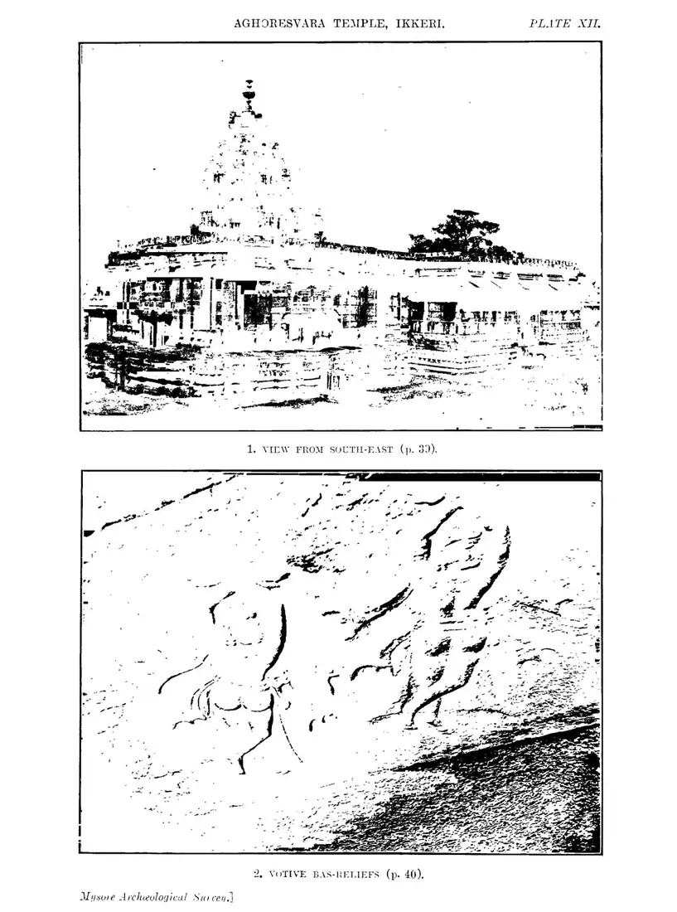
- VIEW FROM SOUTH-EAST (p. 39)
- VOTIVE BAS-RELIEFS (p. 40)
but retained numerous features of the old Hoysala style. To this style belong the fine little temple of Vidyāraṇyapura, the large but plain temple of Kałasa and other structures. It may as well be said that these belong to the malnād school of architecture which is a development of the Hoysala style, particularly as seen in structures like the Trišankēsvara and the Akkataṅgi temples of Brahmagiri, Molakalmuru Taluk.
The Hoysala features in the Ikkeri temple are:—
1. The high platform around the garbhagriha and its deeply cut cornices.
2. The stone tower.
3. The rounded and sixteen-sided fluted pillars of the navaraṅga.
4. The ornamentation and sculpture of the outside walls.
The Dravidian features of the temple are:—
1. The stories with doorways in the tower.
2. The square shape of the navaraṅga.
3. The numerous Dravidian pillars and pilasters of the composite lion bracket type in the navaranga.
4. The pradakshiṇā around the garbhagriha.
5. Two sukhanāsis.
An Indo-Saracenic feature is also seen in the arches of the windows and of the Nandi maṇṭapa.
The temple is placed on a high basement and has thus a dignified appearance. The basement on the outside is about 6 feet high from the ground level and is made up of five cornices which have a Hoysala look. Two of these have ornamental sculptures, the lower being a row of small kīrtinukhas with lion faces on top and the upper being one of rearing lions facing front with a slight outward incline. These lions lose their legs on the east and south faces of the garbhagriha and look like lion-headed serpents. Around the garbhagriha this basement projects a few feet (about 4 feet) outward forming a platform. This platform, though narrow, has all the look of a Hoysala platform though the absence of steps leading up to it shows that it was never meant to be of use for circumambulation. On the east face of this platform is a carved panel with Indra riding the Airāvata while in the corresponding panel on the west is Varupa on a makara. Above Indra is an ornate sōmasūtra or water spout. The platform is shaped like an indented square and is more shaped than the garbhagriha itself.
The outer wall of the garbhagriha is comparatively plain except for three niches inset in the east, south and west walls. These niches are broad and shallow and are surmounted by lion friezes and by towers of the pond and drum shapes. Near the top of Outer wall of Garbhagriha.
6 the wall is a row of “ S ” shaped eaves projecting only about 10 or 12 inches through which appear ornate water spouts. The parapet which is one of brick and mortar is a recent construction.
The tower of the main temple which is more than 40 feet high from the ground is a stone structure in mixed style. It has two ornamental stories formed by rows of towers ornamented with rearing lions. The eastern arch of the lower storey has a doorway ( i.e. , the first floor) leading to the large room inside the hollow of the tower. In front of the tower there is a stone projection in exact imitation of similar structures in the Hoysala and Šringēri temples. Above the tower rises a stone šikhara shaped like a bulbose dome with a kīrtimukha facing each of the four quarters. Above the dome is a metal kalaśa of modern design.
The outer wall of the navaranga which rises above the basement has many interesting features showing a mixture of various styles.
Outer wall of the Navaranga. It is full of ornamentation, though much of the latter is in low relief owing to the hardness of the stone. About half a dozen rows of sculptures can be distinguished on the walls. The lowest is a row of swans, interspersed with seated lions, monkeys, obscene figures and the like: the second is a row of indented square-shaped pilasters, each bearing an abacus with tower. These towers are in imitation of indented square-shaped Hoysala towers with stone kalaśas and ornamented tapering vertical bands; the third is a row of windows shaped like arched niches containing perforated screens of stone. The designs of the latter are copies of the simpler forms of Hoysala screens. Each niche has a towered canopy on top. Between the niches are a lower and an upper row of figures some of which are interesting. Commencing from the front or north doorway and running eastward clockwise, the lower row contains :—
Yaksha, the eight Dikpālas each in the corner, and other figures like, standing Vishnu, Hanumān, Rāma, Lakshmana and Garuđa, dancers and musicians, Harihara, Ganēśa, Bhairava, the Rudras, Daksha-Brahma, Agni; (East door end).
From the west doorway northward :—
Dancing Kṛishna, Vīrabhadra, Viṭthala, dancers, Veñkaṭēśa with Garuđa and Hanumān, Yōgānarasimha, Kālingamardana, Chandraśekhara, Ganēśa. The upper row has some curious sculptures like a yōgi riding on a tiger (?), half-swan Kinnarī with the lower part of the body formed of two swans, purushamriga worshipping linga, and swans, with the heads of varied animals like horse, lion, elephant, etc.; an elephant and a bull with common head, Nandi, etc. The fifth row is a frieze of flowers while the sixth is a representation of a parapet with leaf-shaped turrets.
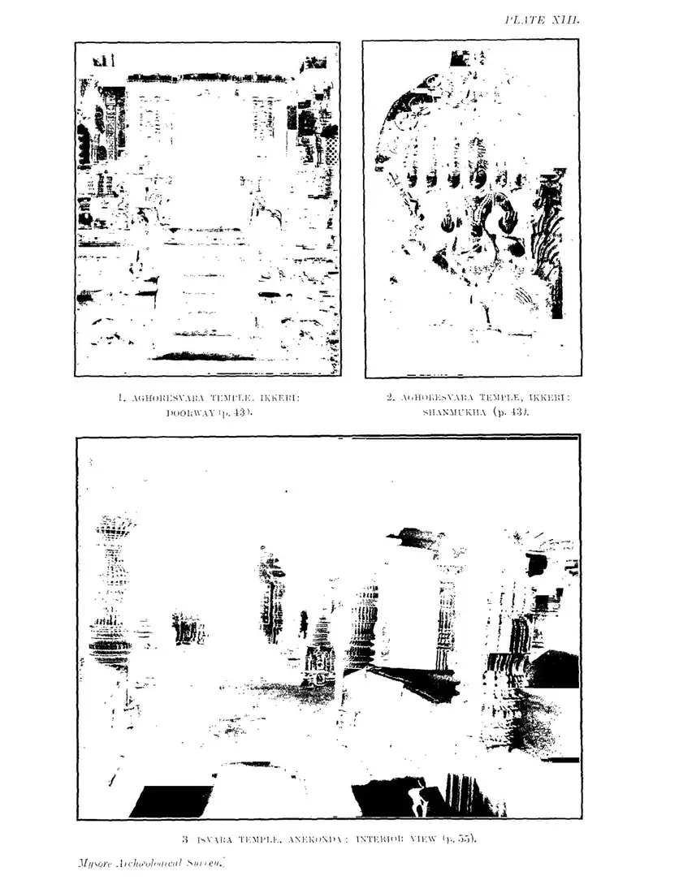
- AGHORESVARA TEMPLE. IKKERI: DOORWAY (p. 43)
- AGHORESVARA TEMPLE, IKKERI: SHANMUKHLA (p. 43)
- ISVARA TEMPLE, ANEKONDA: INTERIOR VIEW (p. 55)
The doorways of the temple are large and finely carved, the best being the sukhanāsi doorway. They combine Hoysala and Vijayanagar features. On either side of the steps leading up to the main doorway on the north (Pl. XIII, 1) is a fine large elephant, while on the east and west yālis take their place. On the sill is a trumpeteer, while the jambs have elegant Śaiva dvārapālakas with indented square-shaped pilasters and bands of floral and scroll work running up their length. Outside each jamb runs a fine vertical scroll band borne up by a lady standing on a makara. (In the lintels of the doorframes is seated Gajalakshunī, a feature noteworthy since the Ikkeri Nāyaks became Vīraśaivas in later days. Above the lintel is again a row of turrets as in the Hoysala doors.
The eaves of the navaranga are straight and flat and make no effort to imitate wood-work, but they are firmly placed supported by cross beams above the main beams. In the upper corners, however, are ornamental cobras. The parapet above is characterless.
The navaranga which is a large pillared hall of about 55 feet square is one of the largest found in any old stone temple of the State.
The Navaranga. It has a low and narrow platform, about 2½ feet wide and as much high, running around the inside, and its inner face is well ornamented with a row of swans, flowers, etc.; 14 pillars arising from the platform are built into the wall; each one of them appears to have a different shape though they are all Dravidian in form and are based upon variations of the indented square plan. The 12 pillars of the outer square of the navaranga are of different shape. In the ornamentations above the cubical lower moulding rises a slightly tapering shaft with 16 fluted sides. Rows of peepul (Aśvattha) leaves and beaded pendants break the monotony of the shaft above which is a potshaped moulding bearing the wheel and umbrella abacus on the top. These pillars remind us strongly of the fluted pillars of the early Chālukyan style. The four central pillars, however, have a different shape—they are very similar to the rounded Hoysala pillars except that instead of the polished roundness, we have a 16-sided fluting closely resembling it but the mouldings are the same, viz. , the disc, the wheel, the bell, the pot, the tyre and the umbrella abacus. The bracket capital bears a hooded cobra coiled on each front.
Against the south wall of the navaranga, stand four towered niches, between which are five lion-bracketted pilasters. In the niches are the following images in order from the east:—
1. Shaṅmukha riding on a peacock. (Pl. XIII, 2.)
2. Gaṇēśa.
3. Mahishāsuramardinī in standing posture.
4. Bhairava.
Nos. 3 and 4 are evidently small images imported from elsewhere after the originals were lost.
The navaraṅga ceilings are all flat—the central one only having noteworthy ornamentation in the shape of a fine padma with a pendant surrounded by a frieze of peacocks, carved on the lower face of the central slab. On the floor of the navaraṅga lie prostrate six bhakta images in low relief, three of which have already been mentioned.
The doorway of the outer sukhanāsi is perhaps the finest in the temple. Its design is very similar to that of the north navaraṅga doorway except that the dvārapālas are much larger and the pilasters shorter. It is about 10 feet × 5 feet as are also the other doorways of the temple. From the outer sukhanāsi which has nothing noteworthy, a plainer doorway leads to an inner vestibule or sukhanāsi which is peculiar to this building. From it starts a narrow pradakshiṇā about four feet wide and runs around the garbhagrīha. In the inner sukhanāsi are six tall rough-hewn stone pillars which serve to bear up the weight of the tower above. Only two of these near the sukhanāsi doorway are ornamented with turreted pilaster design. In the middle of this chamber is placed an image of Nandi, about 2½ feet high, made of spar or alabaster. It is semi-transparent.
The garbhagrīha which is about ten feet square has a small liṅga on a small pīṭha installed on a large pīṭha which might have originally borne a larger liṅga. The larger pīṭha is about 8 feet × 5 feet, and has a frieze of 32 figures of seated Durgās. Each of these has six hands holding abhaya, khaṅga, bāṇa, dhanus, pāśa, and padma with a peacock on the pedestal of each (Kaumārī ?).
Directly to the west of the main temple of Aghōrēśvara stands the temple of Pārvatī built in a similar style but with smaller dimensions and fewer sculptures. It has a garbhagrīha, a sukhanāsi, a small navaraṅga without pillars and a mukhamaṅṭapa closed on three sides and open in front. Outside the garbhagrīha the walls bear turreted pilasters, padmas and swans in imitation of the main temple. The tower also is in imitation of that of the main temple. The pillars and pilasters of the navaraṅga are Dravidian in form with brackets formed of heroes riding on lions which rear up on the backs of elephants. The doorframe and perforated windows of the navaraṅga, however, are shaped like pointed arches showing Indo-Moslem influence. Around the mukhamaṅṭapa is the usual stone bench as also around the navaraṅga.
The image of Pārvatī has an unworked tōraṇa and a broken nose and is evidently not the original image of the temple. The original liṅga of the main temple, two images of its navaraṅga niches and the original Pārvatī image have all disappeared and been substituted by later images. On the sill of the navaraṅga is a bhakta-vigraha with the Kannaḍa inscription 'Bhadrappa Nāyakaru.'
The Nandi Maṇṭapa
No heading in the body: this section starts at its printed page (45).
There is a square Bull pavilion facing the Aghōrēsvara Linga which is unique in its design and execution. On a platform about four feet high, The Nandi Mantapa. are seven pointed arches of stone, the walls between which are ornamented with indented square-shaped Dravidian pillars borne on the heads of groups of lions. On the walls are sculptured the images of drummers, dancers, attendants, Kālīngamardana, etc., and above the walls project straight-shaped eaves. Further up there is a parapet of trefoil discs.
Five steps supported by yālis lead up into the manṭapa in which is kept a magnificient stone bull, about 11 feet long and 10 feet high.
Part II: Study of Ancient MonumentsKeļadi
Situation
About five miles to the north of Sāgar is the village of Keĵadi which was formerly a flourishing town and for some time in the 16th century the capital of the Keĵadi Nāyaks who were vassals of the Vijayanagar Empire. At almost the northern end of the village is a large courtyard enclosed in modern tiled verandahs. In the middle of the courtyard stand three temples consisting of a Rāmēsvara temple in the centre with Virabhadra to the right and the Dēvī temple to the left. The latter is a separate building built apart. But the other two touch each other and have a common railing between them.
Situation.
Rāmēśvara Temple
General Description; History; Outer View of the Garbhagṛiha; Outer View of the Maṇṭapa; Maṇṭapa; Pillars and Ceilings; Navaraṅga and Pradakshiṇa
The Rāmēsvara temple which is the more important and earlier of the two is a medium-sized structure built completely of greenish grey stone in the mixed Hoysaĵa-Dravidian style which was prevalent under the Ikkēri Nāyaks. It consists of a small garbhagriha with a pradakshiṇā, a small navaraṅga with two pillars only and a mukhamaṇtapa.
No definite inscriptional evidence about the construction of this temple is available. A number of bhakta relievos appear in the eastern and western parts of the navaraṅga, a few only of which are named. Traditionally, this temple is said to have been built by Chauḍappa Nāyaka, a Vijayanagar officer who got Keĵadi and the neighbourhood as a hereditary kingdom from the Emperor. Chauḍappa Nāyaka ruled between 1499-1513 and the temple must have been built in his last days, before the capital was transferred to Ikkēri.
History.
The western part of the temple, enclosing the garbhagrīha is square in plan and raised on a platform, about 2\frac{3}{4} feet high. The latter is adorned with four cornices, one of which is ornamented with low relief sculptures of drummers, dancers, etc. The wall above, it has square pilasters in the corner and is practically plain except for the following sculpture. In the east wall in very low relief are carved Kaṇṇappanayanār, Garuḍa and Hanumān fighting for a fruit, camel, elephant, yāli, obscene figures, elephant killing a man, Rāhu attacking the disc of the moon in which is a stag. West wall: A drummer with ḍavaṇe. North wall: Rāmēśvara seated in yōgāsana, between Hanumān and Garuḍa. The eaves are straight and above them a row of small sculptures consisting of Vīrabbadra, Tāṇḍavēśvara, Pārvatī, Mōhinī, Vēṇugōpāla, Kālingamardana, Bhairava, etc. None of these sculptures is of any beauty or importance. Above the garbhagrīha is a stone tower, square in plan, with bulls in the corners and a metal kalaśa on top.
Outer View of the Mantapa. The basement described above continues to run around the temple. Above it is a row of pilasters surmounted by turrets of varying shapes. Most of these are Dravidian in form and have either the square-planned or the boat-shaped śikharas. On their bases are found a few minor sculptures like swans, Hanumān, etc. The entrance into the manṭapa has no porch, but steps are flanked by projecting basements which might have borne stone elephants. Directly above this entrance in the parapet is a niche containing a male goblin, rather realistically shaped.
The manṭapa is an open pavilion four aṅkaṇas long and three broad with a stone bench running around it except at the three entrances which give admission to it on the east, south and north. At its western end are two towered niches containing Gaṇapati and Mahishāsuramardinī.
There are six large and 12 small pillars in the manṭapa. Some of the smaller ones which stand on the benches have on their outer faces lion brackets. The larger ones are of the 16-sided type with cubical mouldings. The ceilings are all plain except for the central one bearing nine padmas.
Pillars and Ceilings. The navaraṅga doorway which has Śaiva dvārapālas on the jambs and Gaṇapati on the lintel is comparatively plain and leads to a small hall or navaraṅga whose roof is borne upon two 16-sided fluted pillars. From this hall extends a narrow pradakshiṇā, the eastern entrance to which is closed up and converted into a room. In the navaraṅga is a bull with conventionalised dewlap. Just in front of the bull on the floor is a reliefo bhakta-vigraha of some nāyak whose
Navaranga and Pradakshina.
name is uncertain. Two bronze images, of Śiva (abhaya, khadga, deer, dāna) and two-handed Pārvatī, are kept in the navaraṅga.
The garbhagrīha is entered by a small plain doorway with Rāmēśvara on the lintel (standing Śiva: abhaya, padma, deer, dāna). It contains a polished linga, about 2\frac{1}{2} feet high.
Garbhagṛiha
Part II: Study of Ancient Monuments › KeļadiVirabhadra Temple
General Description; History; Outer View of the Garbhagṛiha; Outer View of the Maṇṭapa; The Navaraṅga; Pillars; Ceilings; Navaraṅga and Pradakshiṇa; Garbhagṛiha; Dhvaja Stambha
The Vīrabhadra temple is nearly similar in form to the Rāmēśvara temple, the main difference being that the navaraṅga has in its centre a depressed pātālānkaṇa.
It looks very probable that the Vīrabhadra temple was built by one of the Bhadrappa Nāyakas of the Keĵadi dynasty. On the assumption that the Rāmēśvara temple was built by Chauḍappa about 1512 A. D. we are led to infer that his brother Bhadrappa Nāyaka might have put up the Vīrabhadra temple. Since one of the ceilings of this temple contains a ganḍabhēruṇḍa bird very prominently, the crest particularly of Achyutarāya, this temple might have been built between 1530 and 1540 when Bhadrappa and Achyutarāya were both living. The difference of a generation between the Rāmēśvara and Vīrabhadra temples is also quite likely.
The garbhagrīha of the Vīrabhadra temple is very similar to that of the Rāmēśvara temple except that the basement has a larger number of small relief sculptures and the wall has a few more pilasters. The most interesting of the sculptures of the outer wall is the relief image on the west wall. It is popularly pointed out as Vāstupurusha (Pl. XIV, 3). He is a fat figure with two elephantine legs and tail and his hands are shaped like elephant trunks. His face is that of a lion with a longish beard and his belly is covered with seals. To the right is a boy with lifted hands seated between a man playing on a vīṇā and a woman offering him a toy. On his left stands Mōhinī with a mirror dressing her hair while Bhasmāsura dances near her. To the right of the panel is shown in relief a measuring rod, 36 inches long, divided into lengths of 8 inches, 4 inches, etc. Outside the Vāstupurusha group are eight small panels containing obscene and other figures. The tower is a little shorter than its neighbour.
Outer View of the Garbhagriha.
Here also there is a successful imitation of the basement and railings of the Rāmēśvara temple. The chief difference consists in the larger number of small sculptures and the eastern porch which is the only one of its kind in the temple. The
Outer View of the Mantapa.
porch has sixteen-sided fluted pillars with cubical mouldings, rounded imitation Hoysala railings and a padma ceiling.
As already mentioned, the larger part of the navaranga is a low pātālānkaṇa around which is a stone platform corresponding in level to the floor of the neighbouring navaranga. The wide span of the nave which is about 14 feet and its greater height give it a better appearance. On its north is the outer face of the railing of the Rāmēśvara temple bearing turreted pilasters and niches. The opposite railing on the east is also similarly sculptured on the inside; and the north-west corner is pierced by a narrow passage leading to the space between the two garbhagrīhas. Against the west wall of the navaranga are found two large images of Dakshabrahma—human body with goat head, a kamaṇḍalu on the right and a mace (?) on the left—and Narasimha (5 feet), both standing with folded hands.
There are eight pillars in the manṭapa, six of which are square in plan with lion brackets, the other two being fluted sixteen-sided ones with subsidiary pilasters. Some of the faces of the pillars contain interesting sculptures; among these may be noticed: (1) a swan with elephant face; (2) a yōgi on whom a tree is growing, the group being surrounded by six monkeys in worshipful attitudes; (3) a towered canopy under which is seated on a bench a bearded chief (Pl. XIV, 2) holding up a flower and wearing a low ribbed conical cap, uttarya and dhōti , and supported by a long-coated attendant on either side. It is possible that this is the representation of the builder of this temple, perhaps Bhadrappa Nāyaka.
The ceilings of the manṭapa which are twelve in number are tastefully designed and skilfully executed. They consist of padmas or ornamentally twisted bands, set in circles in the outer ring. The central ceiling consists of a large slab with ten panels containing Sūrya, surrounded by the other Grahas. Among these are deities riding on—(1) deer (Chandra), (2) elephant, (3) lion, (4) a flower (5) vyāla, (6) a hill, (7) man, (8) bull. The sun is surrounded by radiant rays and is driving in a chariot drawn by horses. On either side of the navagraha panel is another with five- or seven-hooded cobras whose coils form highly ornate designs.
The ceiling to the east of the central one has a large relief representation of Gaṇḍabhēruṇḍa or the two-headed eagle which is represented as flying bearing a tusker elephant in each of its two talons, while each of its two beaks holds by the snout a lion which in its turn is trampling on a trumpeting elephant; the group is exactly like that appearing on some of the varāhas of Achyutarāya and is much grander than the simple double-headed eagle adopted for the Mysore crest after 1881 A. D.
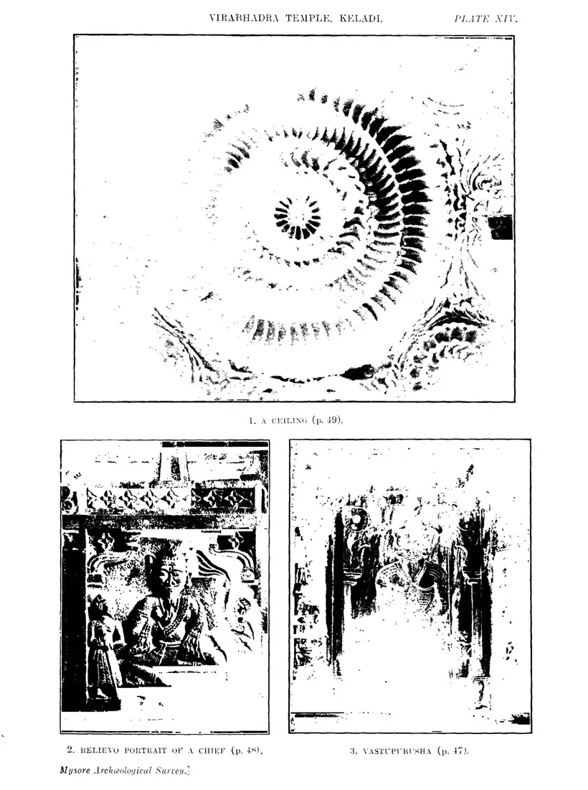
- A CEILING (p. 49)
- RELIEVO PORTRAIT OF A CHIEF (p. 48)
- VASTUPURUSHA (p. 47)
The doorway whose jambs are supported by fine Dravidian pilasters borne on bases ornamented with elephants and lions, has Gaṇēśa on the lintel and a canopy surmounted by five towers above. The navaraṅga is narrow and small and has a continuation in the pradakshiṇā. The ceiling of the navaraṅga has, however, a beautiful lotus (Pl. XIV, 1) with more than 250 petals.
The garbhagriha is a plain commonplace room containing a small image of Virabhadra which has nothing remarkable about it.
Navaranga and Pradakshina.
Opposite to the eastern porch of the Virabhadra temple stands a large pillar of about 25 feet which according to the inscription was constructed in Śaka 1603 or 1681 A.D. As usual, from bottom to top it progresses from a square through an octagon and a sixteen-sided shaft to a circular wheel, above which is the abacus bearing under a small stone canopy a bull. On the four lower panels of the pillar are the following figures:—
West .... .... Gaṇēśa with a royal party of five persons below the pedestal (a lady with her son and two female and male attendants, evidently the person who set up the pillar).
South .... .... Śiva and Nandi.
East .... .... Pārvatī.
North .... .... Bhairava.
Pārvatī Temple
This is a small building with the old back portion of stone and the front modern portion of brick. On the west wall is carved an Umāmahēśvara group. The stone portions consist of a garbhagriha containing a two-handed image of Pārvatī surrounded by a pradakshiṇā. On the east stone wall which forms the western boundary of the modern maṇṭapa, there are a number of well carved panels consisting of Bhairava, Shaṇmukha, Gaṇēśa, Śiva dancing on Andhakāsura with Nandikēśa beating time on mṛidaṅga. Above this row are carved smaller sculptures among which are purushamṛiga worshipping a liṅga, saint Kaṇṇappa, Gajalakshṇī and a warrior and lady conversing.
The front maṇṭapa is, on the inside, a finely carved wood-work with a large number of wood carvings among which are the eight Dikpālakas and other deities.
Courtyard. —In the compound are now found a Hanumān, two sets of Sapta-mātrikas, two vīragals, one of which has an inscription, and a number of stray sculptures.
7
Part II: Study of Ancient MonumentsHarihar
Hariharēśvara Temple
Situation; General Description; History; Main Temple; Back View; Basement; Wall; Tower; South and North Porches; Front Maṇṭapa; Basement and Railings; Front Maṇṭapa—The Top; Inner View and Pillars; Ceilings; Navaraṅga Doorways; Navaraṅga; Sukhanāsi; Garbhagṛiha; Main Image
Near the bridge across the Tungabhadrā which connects Mysore with the Bombay Presidency, about 50 yards from the river bank stands the temple of Harihara with its minor shrines and appurtenances.
Situation.
The compound of the temple is entered by a mahādvāra but instead of the old compound wall there is a ring of houses irregularly built and making the whole view ugly. In the centre of the yard is the temple with a brick tower, the rest of the
General Description.
building being of soapstone. It has a garbhagrīha, a sukhanāsi, a navaranga with theree doors, the north and south ones having porches. To the east of the navaranga extends a large mukhamanṭapa which has five entrances. This pillared hall is in the shape of a square with each angle having two indentations. It resembles in size and height the Kaiṭabhēśvara temple which is slightly smaller. To the north of this manṭapa is the old Lakshmī temple and local people state that there was on the south a corresponding temple of Pārvatī; but no trace of the latter is seen. On the south, however, there is a mahādvāra and it is said that there was another on the north corresponding to it. A number of smaller shrines are found around the temple.
A close study of the inscriptions found in the neighbourhood, more than 60 in number, shows that the god Hariharēśvara was in existence about 1100 A.D. What exactly the temple was
History.
like, it is not possible to state now. But several Pāṇdya rulers of Uchchangi like Vira Pāṇdya and Vijaya Pāṇdya, the Kalachurya Bijjala, the Hoysaļas, the Yādava Kanhara and the Vijayanagar emperors have given endowments to the temple and the Brahmans of the place. An inscription of 1124 A.D. mentions that Permadi (perhaps an officer under Jayasimha) built a temple which was not successful. So, Pōlāļva Daṇdanāyaka, an officer under Narasimha II Ballāļa, rebuilt the whole temple and provided it with 115 golden kalaśas. Emperor Narasimha endowed the temple with grants for its upkeep. About 1268 A.D. Sōmanātha, another Hoysaļa officer, built the mahādvāra with several stories and golden kalaśas. He takes the opportunity to describe the temple of Sōmanāthapura which he constructed. It is said that the Harihara temple suffered much under the Moslens and that the main image was mutilated. For some time, a smaller image was being worshipped. More recently, probably in the Mahratta time, fragments of the original image were found and joined together and the image was installed in its proper place.
The main temple has a square garbhagrīha, with projections for the niches.
Main Temple. Back View.
To its east is the square navaranga. Of its walls the original upper portion is all damaged and rebuilt of brick. Additional shrines are built on the south-west and north.
There must have been formerly a stone platform on which the temple was constructed. Portions of it are now just visible above ground. The basement which has five rows of cornices has the upper ones unworked, while below are two friezes, one of a creeper scroll with flying gods in the convolutions and another of swans.
Wall.
On the wall are small niches on the south-west and north. These are now empty. The rest of the wall is ornamented with a long row of turreded canopies, under each of which is a small figure like Gaṇēśa, Gāyatrī and so on. These figures are small and unobtrusive.
The cornice is only about a foot broad with a deeper “S” form than usual. It is doubtful if the temple, as originally built, had a stone tower. But the original tower, whether of brick or of stone, has disappeared and has now given place to a brick and mortar structure of the Pāllegār period with pointed arches and stucco figures adorning it and a roundish śikhara on top.
South and North Porches.
The south porch is a structure of one ankaṇa which, owing to the length of its beams and the width of its eaves, is quite large. It has a stone bench running on both sides with round bell-shaped pillars supporting the roof. The basement is ornamented very much like that of the mukhamaṇtapa and the ceiling has nine padmas. The north porch is exactly similar to the south one, but has two entrances on the west and east while to its north is a shrine of Kālabhairava with a fine Hoysaļa doorway bearing an inscription on its lintel.
Front Mantapa. Base-ment and Railings.
As already described, this is a large and comparatively high-pillared pavilion with an indented square plan. The basement has a frieze of creeper scrolls below with flying gods as on the garbhagrīha, but above it, as at Bēlūr and Haļebiđ, is a row of elephants and horses ridden by soldiers with, here and there, a camel. Above these friezes is found a row of pilasters with curvilinear step-pyramids above them. In the spaces between the pilasters are smallish images of gods and goddesses. Between the towers are rearing lions. Above the turrets there is a slanting railing with round double pilasters and figures of gods, musicians and dancers in the interspaces. Indecent figures are comparatively rare. The upper edge of the railing has a narrow scroll frieze.
7 *
The eaves of the mantapa as also of the porches project about four feet broad from the beam and have on the under-surface imitations of wooden beams and rafters decorated with small flowers. Front Mantapa. The top. Above the eaves is a parapet most of which is unworked. But where it is worked it has a row mostly containing lions fighting Sala or slaying elephants. Above them is a row of kirtimukhas tastefully worked in a few instances but mostly bereft of the main figures.
The inner aspect of the mukhamantapa is roomy and inviting. It has more than 60 pillars, every one of which is of the lathe-turned bell-shaped type. But since the girth is large, the mouldings have a squattish appearance and they are inferior in design to the fine polished pillars of Kubațür.
All the ceilings except the central one are flat and divided into squares containing padmas. The navaranga ceiling appears to have originally had Harihara surrounded by the Dikpälakas. Ceilings. All these figures have now disappeared.
The doorways of the navaranga are large and finely ornamented with pilasters and about a dozen vertical bands of floral and scroll work rising up above them. The lintel has a Gajalakshuï flanked by lotus buds. And on the architrave there are five turrets. The south and north doorways are similar to the front one but are encrusted with whitewash.
The navaranga is a hall about 25 feet square with four bell-shaped well ornamented pillars. The flat central ceiling has the Dikpälakas around it, while the Harihara figure which occupied the centre is now housed in a separate building to the north-west of the main temple. In the west wall of the navaranga, there are two plain niches which are now empty. Originally, they might have contained Gaṇapati and Mahishāsuramardini.
The sukhanāsi doorway (Pl. XV, 1) which is flanked by dvārapālas and by Śiva on the right and Kēsava on the left has perforated screens of a simple floral design on either side. There is nothing remarkable about the sukhanāsi. The garbhagriha doorway is also comparatively plain and appears to have been left unfinished; its lintel and the spaces meant for the sculptured band are empty.
In the garbhagriha stands the image of ;Harihara (Pl. XV, 2) which is a little larger than life size. It wears a makuṭa showing jaṭā on the right side and kirīṭa on the left. Its hands are thus disposed: abhaya, triśūla, samhāra chakra and śaṅkha. The two back hands are supported on low pillars each of which has a shortish and broadish figure of a consort in relief. The ankles and feet
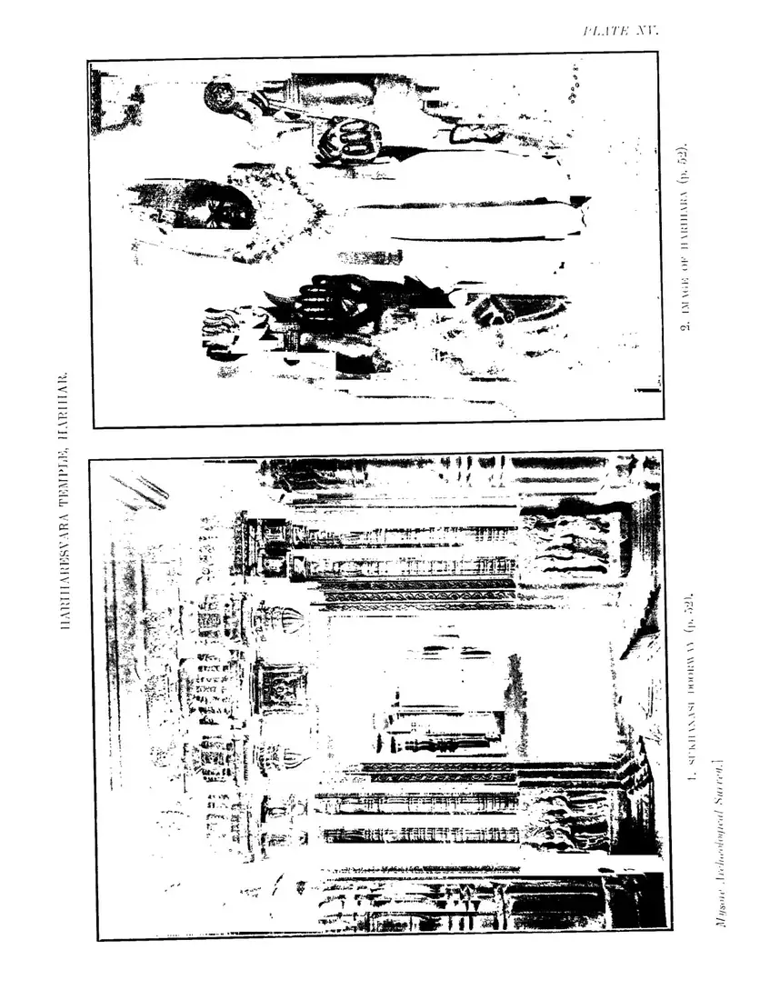
- SENTENAN DOORWAY (p. 52)
of the image which are perhaps damaged are imbedded in a low piṭha and thus made invisible. Except for the face which has a realistic appearance, the figure and its limbs are badly proportioned and finished. There is no tōraṇa over the image as is usual in Chālukya and Hoysaṭa sculptures. It is probable that the head hails from Chālukyan times and is provided with a body made in the Pāllegār period.
Lakshmīdēvi Temple
Mahādvāra; Other Antiquities
This is a smaller temple built at about the same time as the larger one. It has on its railings similar turreted pilasters but flowers take the place of sculptured figures. The mukhamanṭapa which is shaped like an indented square has four bell-shaped central pillars, while the pillars on the side benches have 16-sided flutes. The ceilings have similar padmas, only the central one having a dome with a design similar to that at Kubaṭūr. In the west wall of the manṭapa there are two niches, the original images of which are lost. A plain doorway with two simple perforated screens opens into a small garbhagrīha whose original Lakshīnī image has been lost and has been substituted with a marble Mahishāsuramardinī by an officer of the Peshwas. The tower, like that of the main temple, is a brick structure of recent times.
The eastern mahādvāra which was constructed by Sōmanātha with five stories has lost its tower and is now a mere manṭapa with round and fluted pillars. Mahādvāras similar to this exist to the south and north of the temple and the northern one has been constructed into a store house.
On either side of the eastern mahādvāra inside the compound is a dipastambha column made up of scores of layers of stone slabs. The bottom is large and eight-sided and the pillar tapers gradually till the top. A number of brackets curl up from all sides of the pillar and on them are incense oil cans for the lamps. They remind us strongly of similar structures in Maharashtra and are probably the contribution of the Yādavas or the Mahrattas.
The Kālabhairava shrine which is attached to the north porch of the main temple was robbed of its original image. The Saṇṇa
Other Antiquities. Hariharēśvara shrine, in building which a small Hoysaṭa doorway and pillars have been used, contains a small image of Harihara which is said to have been removed from the central panel of the navaraṅga.
The Badabandēśvara was a large linga probably rescued from some ruined temple. It is now housed in a recent structure built close to the north-west of the main garbhagrīha. The sooner this structure is removed the better it would be for the beauty of the old building.
Part II: Study of Ancient MonumentsĀnekoṇḍa
Īśvara Temple
Situation; General Description; History; Outer View; Mukhamaṇṭapa; Navaraṅga; Pillars; Ceilings; North Cell; West Cell; South Porch; Conservation
A mile to the north-east of the Davangere railway station on the Jagalur road lies the little village of Ānekoṇda to the south-west of which is an old town site. Occasionally, Gajapati varāhas are picked up here, especially round about Basaramma's temple on the high ground. The old town appears to have had much prosperity during the Gaṅga, Uchchaṅgi Pāṇdya, and Hoysala days as can be seen from the inscriptions found in the neighbourhood. In the centre of the present village, that is, to the north-east of the old site, is a small and ornate temple of soapstone with definitely Hoysala workmanship. It is popularly called the Ísvara temple.
Situation. The temple which is now without a tower has a peculiar plan. It has a cell each on the west and north and an open porch on the east and south. The main cell has a small sukhanāsi attached to it. The navaraṅga of four pillars is continued without any separating walls in the eastern and southern porches of two squares each.
General Description. Hoysala inscriptions of the 13th century and Pāṇdya inscriptions of the middle of the 12th century mention an Ísvara temple at Ānekoṇda (could it be Ānehoṇda?) and the sculptural work and particularly the varied pillars and ceilings resemble those at Bēlūr. The temple appears to have been constructed sometime in the latter half of the 11th century A.D. 1
History. Since the ground at the back of the temple has risen and the damaged walls have been completely concealed by modern walls, the back view of the original temple is completely hidden. The towers have all disappeared. Only in the front of the temple is the old structure visible. Nothing of the old platform is seen but the front basement, though much damaged, is yet intact. It has the usual five cornices with a sculptured railing on top. Above a row of small kīrtimukhas runs a row of Yakshas seated between pilasters on which are borne square-planned turrets with intervening lions and scroll work. The railings have a scroll frieze at bottom and a floral band on top while their face is divided into panels by double pilasters, some of which are given an artificial incline outward in an attempt to exaggerate the inclination of the railing. In these panels are varied figures like those of dvārapālas, dancing Gaṇapati, ṛīshīs, soldiers, dancers and musicians, ladies in various poses, deer, Rati and Manmatha, bhētālas or goblins, makaradhvaja, and obscene figures. North side: Hunters and huntresses hunting deer and accom-
1 Mr. R. Narasimhachar gives a date after 1100. panied by hounds, ladies at toilet, Kumāra seated on peacock, etc. The eaves are straight and broad and the parapets are all plain.
The mukhamanṭapa which is of two añkaṇas is a continuation of the navaraṅga of nine añkaṇas since there is no wall between them. Mukhamantapa Navaranga. (Pl. XIII. 3.) On the front side from the south cell to the north is a raised stone bench edged by the railing. At the back of the navaraṅga are two turreted niches. Their original images, probably Gaṇeśa and Mahishāsuramardinī, have been lost and their places are now occupied by two smaller images of Sarasvatī, and a broken image is lying at the foot of ołamūđu linga kept in the north side of the compound. Imbedded in the south-east part of the navaraṅga bench is a fine stray relievo of Arjuna shooting arrows. Its original place was probably on the north-west railing.
The pillars of the Ānekoṇđa temple show an interesting variety reminding us of the Bēlūr temple. The central pillars of the navaraṅga are of the round bell-shaped type ornamented with beaded work and scrolls. The base has on each face a finely designed tōraṇa set between turreted pilasters. Under each of the 16 tōraṇas is a sculptured figure. Some of these are, from the east clockwise: Bhairaya, dancing Mōhinī, Sarasvatī, Kāļī with goblins, Brahma, Rati and Manmatha, Vishṇu (gadā, padma, śañkha, chakra), Mahishāsuramardinī, Narasimha, dancing ladies, etc. Among the other pillars may be noticed several varieties: indented square-shaped, octagonal, 32-sided with flutings, 8-pointed star, 32-pointed star with alternate angles large, eight-petalled lotus. This last type has not been seen anywhere else. These pillars give the navaraṅga a very artistic look.
One of the two flat ceilings in the mukhamanṭapa has Indra on the Airāvata in the centre with heavenly musicians around. The eight outer ceilings of the navaraṅga are also flat having shallow padmas with the pendants bearing the respective Dikpālakas. The central ceiling which is much blackened by soot is well carved with Gajāsuramardana in the centre flanked by Vishṇu and Brahma. In the panels below Śiva his goblins are accompanying his dance with music, and in the panels above are the 12 Ādityas. On the corner stones below this slab are the 11 Rudras riding on bulls and several groups: Yōgānarasimha, dancing Mōhinī attended by Dakshiṇāmūrti and an attendant, Mōhinī molested by monkey, Nandikeśa blessing a hermit, Kōdaṇđarāma with Lakshmaṇa and Hanumān.
The doorway of the north cell is the best carved in the temple and has on the jambs two dvārapālas, above whom are bands of flowers and scrolls with heavenly musicians and gryphons. On the lintel is Gajalakshmī. But the cell is empty.
North Cell.
The doorway of the west cell is plainer than the north one and has similarly two-handed dvārapālas; but above them is found a perforated screen of simple design and on the lintel Śiva is standing between Brahma and Vishnu. A sukhanāsi and an ornamental doorway which is covered over with whitewash lead to the garbhagrīha which has a middle-sized linga. Another linga is kept in the sukhanāsi.
To the south of the navaraṅga concealed by an earthen wall and covered by a rebuilt roof is the south porch. Its eastern railings and ornamental pillars and beams are visible, but since its south entrance has been walled in and its western wall has no railings, its original shape in this side is uncertain.
Opposite to the main shrine on the east is a modern shrine housing an old Nañdi behind which is a small cell containing a mutilated image of Vishnu. The latter is of fine workmanship and 4½ feet high wearing a kirīṭa and flanked by ḍrī and Bhū. It is encrusted with wax and its arms are broken. It is probably the image which was installed in the north shrine of the temple.
The temple has been recently provided with a compound wall and its leaking roof pointed with cement. When funds permit, the modern walls and structures which are hiding the main temple may be removed except where they are necessary to support the roof. The sculptures which are encrusted with soot, wax and limewash may be scraped and cleared. The Vishnu image may be restored to the north cell.
Part II: Study of Ancient MonumentsTālgunda
The Praṇavēśvara Temple
Conservation
In front of the Praṇavēśvara temple at Talgunda is the famous pillar inscription set up by Śāntivarma Kadamba about 400 A. D. On the jambs of the garbhagrīha doorway are carved inscriptions of Prabhāvatī, queen of Mṛigēśavarma, and of Ravivarma. Since it is mentioned in the inscription that the linga inside the temple was worshipped by the Śātakarṇis, the linga must have been in existence in about 200 A. D.
The garbhagrīha housing the linga must have been in existence when the door-frame was put in, that is, about 400 A. D. Thus, this portion of the building is perhaps one of the oldest of datable structural monuments in the Deccan, older than the Durgā temple of Aihole and even the rock-cut temples of Māmallapuram.
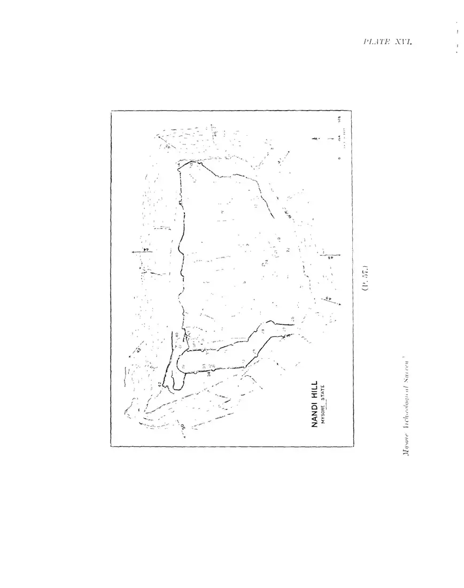
- (p. 57)
It is a square building with the outer walls perfectly plain and the inner walls plain also except for a right-angled pilaster in the middle of each and a half pilaster at the corner and a cornice about nine inches broad projecting from the north-west corner of the room. The roof is composed of three squares made up of slabs placed cornerwise with a flat slab above ornamented with a shallow padma, about 2 inches deep. On a slab of the north wall is a similar padma carved without the petals. The room is about 14 feet square inside. The top slab of the doorway has on the inside two supporting pillars of soapstone roughly designed with cubical mouldings, one with octagonal shaft and the other with 16-sided shaft having potshaped mouldings on top. It is doubtful if these pillars are of the early Kadamba period. In front of these pillars is the door-frame with a Ganēśa on the lintel and a band of large flowers only ornamenting the jambs. Since Prabhāvatī's inscription is found on the lower part of these jambs, they are definitely of the Kadamba period.
In the garbhagriha there was, until two years ago, a very large pāṇi-pīṭha, broad and high, from which arose the large round-headed linga of Praṇavēśvara, about 18 inches in diameter and rising about 3 feet above the pīṭha. The pīṭha was broken two years ago and its pieces are scattered about. It was square in shape with the angles having quadruple indentations. The outlet for water or the end of the yōnī projects about 2½ feet.
Such was the original temple to which another ankaṇa was added in front. This is also square in form. Since a slab containing the inscription of Bijjala Kalachurya has been cut lengthwise into two and used for the roof of this part, its date must be later than 1200 A. D. It is in a ruined condition, and of its Chālukyan door-frame, only one jamb is standing.
Being one of the oldest buildings in the State, it fully deserves to be restored.
Conservation. Since the front aṅkaṇa is ruined and historically not important, the older aṅkaṇa may be restored by careful preservation while the front aṅkaṇa is removed. The broken pāṇi-pīṭha may be reset, if need be, with iron clamps and the linga restored to its position.
Nandi
Nandi with its famous hill fort and the fine temples of Nandīśvara (Pl. XVII, 1) is a place of great interest in the Chikballapur Taluk. Brief notes about it have already appeared in the previous reports of this office and elsewhere. A detailed study has now been made of all the points of interest including the architecture of the temples. A guide map has been prepared for the use of visitors and is now published for the first time. The points of interest are numbered hereunder as on the map on plate XVI.
8
Points of Interest
1. Tipu's Lodge; 2. Provision Store; 3. Amṛita Sarōvara; 4. Chabootra; 5. Nursery; 6. Cuppage Orchard; 7. Kokkare Doṇe; 8. Mrs. Garrett's Tomb; 9. Glentilt Bungalow; 10. Badminton Court; 11. Sir Mark Cubbon's Bungalow; 12. Tennis Court; 13. Oaklands; 14. Corner Bastion; 15. Kudure Meṭlu; 16. Source of the Pālār
On the north and west of the hill we meet with two lines of fortifications of which the upper one appears to have been an old Hindu construction of the Pāllegār days as can be seen from the Hindu gateway whose jambs and lintel are ornamented with creeper scroll and rope designs and on whose side is engraved in outline the figure of a devotee. Just above this gate, Tipu got constructed a small building (Pl. XVIII, 1) whose ornamental parapet and pointed arches show unmistakable signs of Moslem design. Tipu used to spend his summers often here while his army was stationed at Sultanpet at the foot of the hill. This building is now used for housing the Supervisor's Office and the Post Office on the first floor and the Hospital and the Police Outpost on the ground floor.
Just opposite to this building on the inside are two vīragals or memorial stones of warriors of the Pāllegār days. Closeby is a fine stone-built well.
A guard room on the north fortwall is used as a provision store during the summer season. From the ramparts nearby can be obtained a fine view of the northern valley. On the other side of the latter is a hill with a cliff, about 700 ft. high. This is called Hyder's Drop, and a cave at its foot is said to have been used by Hyder as a prison for confining European and other soldiers captured in his wars.
The Amṛitā Sarōvara or "Lake of Nectar" (Pl. XVIII, 2) is the main source of water supply on the hill. It is a fine, large, stone-built pond about 200' square at the top. Its sides are all built up of stone slabs which form several series of steps. It is said that all the four series meet at a point at the bottom where a shrine is believed to be existing. The work appears to be of about the 18th century, i.e. , of the days of the Āvati chiefs or of Hyder. A small building to its north is used as a kitchen by stray visitors.
About 50 yards away and almost by the side of the Amṛita Sarōvara lies a brick and mortar platform under a Nēraļe ( Jamboo ) tree which is pointed out as Tipu's īdga or prayer platform.
To the east of the Amṛita Sarōvara is a nursery of plants well looked after by the Horticultural Department of the Mysore Government.
5. Nursery. the Horticultural Department of the Mysore Government.
Just to the east of the nursery and on the way from Tipu's Palace to Glentilt in the depth of the glen extends the orchard of varied fruit trees planted by Colonel Cuppage when the British army was in occupation of the place between 1799-1808. It is still in a flourishing condition. A winding and shady walk leads from the orchard out of the glen to the Glentilt bungalow.
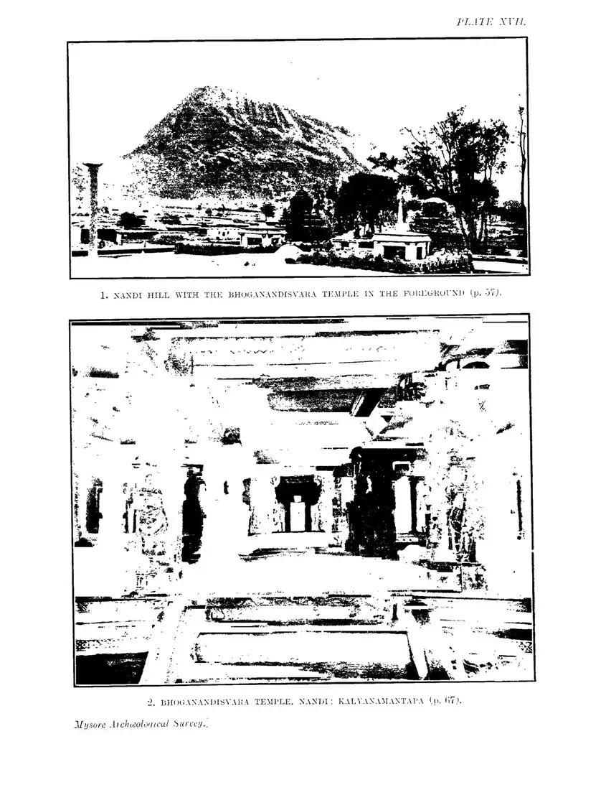
- NANDI HILL WITH THE BHOGANANDISVARA TEMPLE IN THE FOREGROUND (p. 57)
- BHOGANANDISVARA TEMPLE, NANDI: KALYANAMANTAPA (p. 67)
A few yards to the south-west of the orchard is found the Kokkare Done, a small rocky pool which is said to have been the favourite haunt of storks. It has a natural spring called Antara-Gange.
In the central projection of the hill, about a hundred yards to the west-south-west of Glentilt, lies the solitary stone tomb of Sophia 8. Mrs. Garrett's Tomb. Garrett, wife of Mr. John Garrett, Director of Public Instruction in Mysore, the lady having died on the hill in 1867.
9. Glentilt Bungalow.*
10. Badminton Court. To the north of the Glentilt is the badminton court.
11. Sir Mark Cubbon's Bungalow.*
12. Tennis Court. A tennis court adjoins the above building on the east.
13. Oaklands.*
To the north of the terrace about 50ft. lower down runs the fortification line at one corner of which on a bastion a small terraced room has been constructed. Some years ago it was used as a living room for visitors but it is not in use now.
At exactly the north-east corner of the fort line, there is a small gateway which leads out to an old pathway leading down the hill.
15. Kudure Metlu. The pathway is now ruined in many places and overgrown with lantana in others so that it is not possible to use it. The fact that it is called Kudure Metlu shows that horses were being led up the hill by this path. It is said to have been in use even in Tipu's days, his favourite horse being led up to the hill every summer for the Sultan's use.
About 50 yards to the east of Oaklands, there is a well with a spring just inside the fortwall. From it is said to originate the Pâlâr river.
16. Source of the Palar. The continuity of the stream is however difficult to trace on the side of the hill, and all traces of it are lost for several miles. A small shrine with a bull in it faces the well on the west.
A hundred yards to the south-east of this well, on the projecting nose of the hill there is a cave under a huge boulder. Inside the cave
17. Ascetic's Cave
18. Nellikāi Basavaṇṇa; 19. Magazine; 20. Ruined Maṇṭapa; 21. Yōganandi Temple; 22. Śaunaka Tirtha; 23. Sankey's Lodge; 24. Hanumān Temple; 25. Narasappa's Pond; 26. Tipu's Drop; 27. Wellington's Nose; 28. Source of the Arkāvatī; 29. Secret Sally Port; 30. Bastion; 31. The Breach; 32. Bridle Path; 33. Powder Magazine of Tipu's days; 34. Footprints of Tipu's Dog; 35. Tipu's Zenana; 36. Cattle-Shed; 37. Fortification; 38. Brown's Lodge; 39. Supervisor's House; 40. Steps from Sultanpet; 41. Virabhadra Temple; 42. Fort-Gate; 43. Sultanpet; 44. Hyder's Drop; 45. Nandi Town; 46. Gōpīnath Hill; 47. Railway Station; 48. Bangalore End Garage; 49. Bangalore
The cave appears to have been used as a dwelling place by recluses, a thousand years ago. One of the walls has in very low relief a cow represented as milching
* Points of interest with an asterisk mark are described in the Guide Book to Nandi.
1 Ep. Car. X, Cb. 35. on a linga. It looks as if in the Gaṅga days Jaina monks lived here. Later on, in the Chōlā period a Śaiva ascetic occupied it.
Near the cave stands a large pavilion(Pl. XVIII, 3)supported by plain door frames and cylindrical pillars resembling those of the Bhōganañdi
18. Nellikai Basavanna. shrine. Under it reclines a large monolithic bull about 10' long and 6' high which, though neither beautiful nor finely finished, resembles in workmanship the Chōlā Bull in the Bhōganañdiśvara temple. It appears to date from the Cholā times. The bull is called Nellikāyi Basavaṇṇa either because there is the Nelli tree in front of him or by way of joke at its hugeness as in the case of Kadāle-kālū Gaṇēśa or Sāsare-kālū Gaṇēśa in Vijayanagar.
Behind Nellikāyi Basavaṇṇa rises a rock near the top of which is a powder magazine of Tipu's days. About 50 yards to the south-east there is a Nērale tree under which some angular stones are worshipped as Muniśvara, especially by the menials on the hill.
From this point we can see the winding course of the bridle path which leads up the hill from the Bangalore End Motor shed and the Kuđuvatti village near it.
An old manṭapa converted into a number of rooms affords shelter to the 20. Ruined Mantapa. pilgrims who visit the hill during the Śivarātri season.
The Yōganañdi temple is the oldest of the existing buildings on the hill. It has now two shrines connected by two corridors, the courtyard
21. Yoganandi Temple. being enclosed in a cloistered prākāra. Most of the building including the Dēvī shrine on the west was evidently constructed in the Vijayanagar days. The Dēvī shrine has a small garbhagrīha, a tiny sukhanāsi and a navaraṅga of four pillars. The goddess is small and of dark-brown stone. There is nothing noteworthy about this shrine or the hall adjoining it; but the one close on the left of the Yōganañdi shrine contains four fine pillars with 16-sided shafts, pendent mango capitals and cubical mouldings bearing varied sculptures of a character similar to those of the Bhōganañdi mukhamanṭapa. There is reason to think that this hall was originally open on the east and west because finely sculptured railings are visible on both these sides.
The oldest part of the building is, of course, the Yōganañdi shrine which has a garbhagrīha, a sukhanāsi and a four-pillared navaraṅga (of about 25 feet square). The latter has four round cylindrical granite pillars resembling those in the Nellikāyi Basavaṇṇa pavilion and in the Bull manṭapas of the Bhōganañdi temple. The pilasters in the wall are squattish and plain ones of the type found in the Bhōganañdi navaraṅga. The central ceiling which is flat has nine sculptured squares and bears the figures of Umā and Mahēśvara seated in sukhāsana, surrounded by the eight Dikpālakas. The work is definitely inferior to that found in the corresponding ceiling in the Bhōganañdi shrine and appears to belong to a later date. The conical
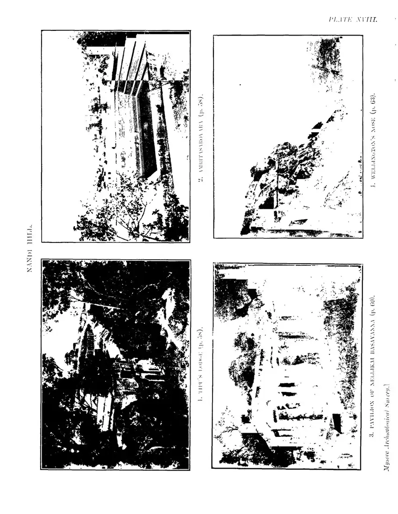
- TIPE'S LOBBEY (p. 58)
- AMRITASAROYARA (p. 58)
- PAVIRON OF NELDKAI BASAVANNA (p. 60)
- WELLMINGTON'S NOSE (p. 63)
stepped kirīṭas, the feminine breastbands and conventionally folded sarees, the shortish bodies of both men and animals and the general want of grace and beauty in the sculptures and the design of the pillars and pilasters compel us to describe it as a third rate Chōła work. They might after all be an imitation. In the navaraṅga are now kept a large number of images among whom the following may be noticed commencing from the south and proceeding clockwise:—
1. Bhairavī.
2. Nandi-bull.
3. Šūla Brahma : two heroes holding daggers and lingas are stuck up on two pikes.
4. Sūrya with seven horses on a pedestal. The figure is good.
5. Sūrya without horses.
6. A seated man, perhaps not Dakshiṇāmūrti, since the yajñōpavīta is not visible.
7. Gaṇēśa.
8. Bhairava.
9. A large Nandi facing the Linga.
10. Metallic dvārapālas, each about four feet high, of the late Vijayanagar period.
11. A smaller metallic Nandi.
12. A Linga.
13. Another small Linga.
14. Chaṇḍikēśvara.
The finest piece of art in the temple is the sukhanāsi doorway. (Pl. XIX, 4.) It appears to be made of pieces cast in bronze in imitation of wood work. The metal work which is beautiful appears to belong to the Vijayanagar days. It is finely designed, the jambs and the lintels bearing about one dozen sculptured bands among which can be named floral bands, creeper scroll, strings of rudrāksha beads, flying and singing birds and flowers, ring chains and a band of canopies under which female attendants and musicians stand. In the lower parts of the jambs are two sets of small Šaiva dvārapālas and Yakshas. On the lintel over which spreads a fine canopy were originally figures some of which have now been lost. The few that remain, particularly those of ladies, show that the work was of good quality. The brackets under the canopies show riders on rearing lions and horses. The whole is a fine piece of metal work about half an inch in thickness and well worthy of preservation.
The shrines and the garbhagrīha have nothing remarkable in them. The reddish brown Linga is a small one appearing only about 4" above the pīṭha. In the garbhagrīha are also kept some metallic images among whom are a Sadāśiva and a Dēvī. The floor of the navaraṅga is full of votive relievos and Kannaḍa inscriptions descriptive of them. Among these may be noticed Gaṇḍaragūli Bhadrappa Nāyaka, the Āvati chief. The south navaraṅga doorway has dancing and drumming figures similar to the Bhōganañdi and Aruṇāchala navaranga doorways. From the inscription E. C. X, Cb. 31, it is learnt that all these belong to about the Mahratta days—C. 1700 A. D.
There is nothing remarkable in the outer view of the temple, the walls being plain except for the usual simple pilasters. The only thing which indicates any antiquity is the octagonal cornice of the basement. The tower as it now stands upon the garbhagriha is one of brick and mortar and does not appear to be of much antiquity. On the whole, this Yōganañdi temple may be described as a very plain structure with its oldest parts coming down from the Chōla times. The prākāra has two gateways, one on the north and the other on the south, neither of which has a tower above it. But on the east where there is no doorway there is a small brick tower of the late Vijayanagar days.
A small doorway in the south compound wall of the temple leads to a fine stone-built pond in the midst of which is a rock-cut pool about 20' \times 15' .
A steep descent of about 100' over the face of the rocks to the south-west of the Yōganañdi temple leads us to a spot called Śaunaka Tirtha where originally existed a well of that name. It is also sometimes called Śramaṇa Tirtha. It is now completely silted up. The face of the rock closeby has a space prepared for receiving an inscription. It is not clear whether an inscription existed and was etched off or none was inscribed at all. The descent is very risky and is possible only for agile young people with strong nerves.
23. Sankey's Lodge.*
To the north-west of the Yōganañdi shrine there is a small Hanumān temple of Vijayanagar workmanship. There is nothing else of importance. In front of it there are a number of votive inscriptions in Kannaḍa with relievo figures. Most of them belong to the late Vijayanagar period. One of the most conspicuous of them is a large lion with the face of an elephant, known as Vyāla or Yāli.
Opposite to the Hanumān temple on the south, facing the Yōganañdi shrine stands a small Nañdi manṭapa.
Directly to the west of the Hanumān temple and about a 100 yards to the south of Mrs. Garrett's tomb is found a rocky pool known as Narasappana Kuṇṭe.
25. Narasappa's Pond.
A pathway by its side leads to the west of the hill where at the south-west corner exists a precipice nearly one thousand feet deep known as 'Tipu's Drop'. It is said that Tipu Sultan used to get his prisoners who were condemned to death to be thrown down the precipice.
26. Tipu's Drop.
The rock here projects into space and has very curiously the shape of a human head with closed eyes and a long acquiline nose.
27. Wellington's Nose. European officers who had seen the Duke of Wellington named it as 'Wellington's Nose'. (Pl. XVIII, 4.) It is a very interesting sight.
Directly on the west of the hill in the bay between the two fortwalls, there is a
28. Source of the Arkavati. natural pool in which the river Arkāvatī is said to take its origin.
About 30 yards away to the north-west from the source of the Arkāvatī the outer fortwall is pierced by a small sally port which is about
29. Secret Sally Port. four feet high and two feet wide. On its outside are the ruins of a landing and a flight of stone steps which formerly led down from the hill through a steep and secret passage.
From a neighbouring bastion the fortwall and bastion overlooking Tipu's
30. Bastion. Drop can be seen.
In the middle of the western fort-line projects a promontory, the bastion of which has collapsed. This is pointed out as the breach
31. The Breach. created by the British while taking the fort. Through it they entered and occupied Nandidurg. The hill is practically inaccessible except in this corner. So, two lines of fortifications had been put up here and Tipu's commandant Latif-Ali-Beg and the Mysore troops put up a spirited defence using their guns with effect and hurling huge masses of rock. The British dragged up their guns with difficulty and after three weeks made two breaches in the walls. On October 19, 1791 the assault was delivered and the fort was taken after a sharp struggle.
Just by its side is found the entrance of the Bridle path into the fortress. From the military point of view it is worthy of note that the fort-
32. Bridle Path. wall here, as in the western fortwall of Seringapatam, is of brick and not of stone. It was thus more easily breached by the British batteries. It is possible that the tactical experience gained by the British army here was applied by them at the last siege of Seringapatam. The small kiln-burnt bricks and the wonderful binding strength of the mortar have evoked the admiration of modern engineers.
33. Powder Magazine of Tipu's days.
Near the north-west corner on the walls of the brick battlement, in the mortar covering can be seen the footprints of a large dog.
34. Footprints of Tipu's Dog. Since the impression was left when the mortar was wet and this could only have been when the battlement was under construction in Tipu's days, the popular tradition that it was left by Tipu's hound is possibly true.
Exactly at the north-west corner of the inner fortification a small two-storeyed building is built over a small gateway. The inside of the building has pointed arches and it is known as Tipu's Zenana. Here that ruler used to house the ladies of his family during the summer. The building was used by the Sheristedar during Cubbon's days and is now the property of the family of Mr. Manikyavelu Mudaliyar of Bangalore. This is the only private building on the hill, all else being government property.
36. Cattle-Shed.
Below Tipu's Zenana a gateway leads out of the second fortification to what looks like an enclosure protected by a third fort-line.
37. Fortification. The western gate, which also appears to have been originally of Pāllegār times, has a creeper scroll band on the jambs.
38. Brown's Lodge.*
39. Supervisor's House. This is situated close to Brown's Lodge on its north.
A flight of about 1,775 steps leads down from Tipu's Lodge to Sultanpet. It is steep in several places and is generally used by the menials and by such visitors as desire to go on foot to visit the Nandi town and temple. The steps bear in many places votive inscriptions in Kannađa, Telugu and Nāgari. The path passes under three stone gateways and by the side of a roughly carved bull and relievos of Ganēśa and Hanumān. Somewhere about the 700th step from the foot of the hill is pointed out a ledge of rock called Bānantammana Baṇđe or puerperal rock on which a pregnant woman is said to have given birth to a child. The local people hold it in great reverence.
Approximately at the level of about 1,400 steps up the hill and facing north there is a large boulder under which overhangs a wide cave about 40' long, 30' broad and 7' high. It is divided into two chambers and the inner one contains a dark stone image of Virabhadra about 4' high. The image and its arch are of one stone and the workmanship appears to be an imitation of Hoysala work and probably belongs to the 14th century. The god stands holding in his four hands a sword, an arrow, a bow and a shield. A small ram-headed figure of Daksha Brahma stands to his right. The group is quite a good one. The garbhagriha doorway is of wood and of very old style in workmanship. An inscription above the mouth of the cave 1 mentions that Dēvayya, son of Kaṇṇapparāya got a doorway put up in the year corresponding to 1397 A.D. It has a novel design with Gajalakshmī on the lintel and a group of dancers and musicians in the horizontal band above her. But all round on the jaubs and the lintel there is a row of birds of exactly the kind found in the Kalyāṇa-maṇṭapa of the Bhōganandi temple. Outside the band of birds there is a finely worked wooden ring chain as in the sukhanāsi doorway of the Yōganandi temple. It may thus be guessed that all these three pieces were made in Harihara II's time, i.e. , about 1400 A.D.
50. Doṭdaballapur Road
No heading in the body: this section starts at its printed page (65).
Between Bāṇantammana Baṇḍe and the Virabhadra shrine stands the gateway
42. Fort-Gate. of the lowest fortwall on this side. It appears to be a construction of the days of Hyder or Tipu.
This village was founded by Tippu Sultan whose army used to camp here
43. Sultanpet. during summer.
From the Nandi Hill top across the valley on the north can be seen a low hill on whose south there is a steep precipice said to be about
44. Hyder's Drop. 700' deep. This is pointed out as Hyder's Drop. At the foot of the precipice there is a large cave where Hyder is said to have confined his English prisoners.
The main point of interest in this town is the Bhōganandiśvara temple which
45. Nandi Town. is described in detail below.
This is a low hill on the east which has some old associations. It has a cave which appears to have been used by Jain monks in the
46. Gopinath Hill. Gaṅga days and is now a shrine for Vishṇu and his consort
47. Railway Station.
48. Bangalore End Garage. Nearby is the village of Kuduvatti.
49. Bangalore. It is said that in this direction Bangalore can be seen on a clear day.
50. Doddaballapur Road.
Bhōga-Nandiśvara Temple
General Description; Long History; Bāṇas and Bhōga-Nandi; Nolāmbas and Aruṇāchala; Chōlās and Bull Maṇṭapas; Kalyāṇa Maṇṭapa; Vijaya-nagar and the Mukhamaṇṭapa
The ancient temple of Nandiśvara situated in the town at the foot of the hill is an important structure occupying a comparatively large
General Description. The wide eastern compound with a stone-built pond in its middle has to its west a high stone mahādvāra or
1 Ep. Car. X. Cb. 33.
9 gateway which formerly had a tall brick tower; the latter has now disappeared. To the west of the mahādvāra there are three courtyards, the northern one of which contains a pond called Šringi Tirtha, the middle one a pavilion called Vasañta Mañtapa and the south one which is the largest contains several shrines. The most important of these shrines are those of Bhōganandiśvara (on the north) and Aruṇāchalēśvara (on the south) both of which have ornate stone towers and resemble each other in plan, size and construction generally. Each of them has a Liñga enshrined in a garbhagrīha, with a small sukhanāsi and a four-pillared navaraṅga. In front of each navaraṅga is placed a Nandi or bull surrounded by roundish pillars. On a level with the bulls extends from north to south a platform with a pavilion borne on ornate pillars. Just to the west of these pillars stands a small Kalyāṇa-mañtapa whose pillars and dome are of exquisite workmanship. Behind the Kalyāṇa-mañtapa and between the two temples stands a small shrine of Umāmahēśvara to the west of which an ornate stone railing connects the two temples. To the east of the mukhamañtapa extends a continuation of it with a pātālānkaṇa and a large jagali platform. At the back of this courtyard there are the three smaller shrines of Kamaṭhēśvara and the goddesses Apīta-kuchāmbā and Girijāmbā.
It has been usual among antiquarians to treat the whole building as a homogeneous one belonging to either the Pallava or the Chōļa period. Such a view would lead to a serious mistake from the point of view of architectural history. The Nandi temple has in its structures belonging to various periods commencing from about 800 A.D. Among these can be distinguished the contributions of the Bāṇas, the Chōļas, the Hoysaļas, the Vijayanagar rulers and the Pāllegārs.
The oldest part of the temple is undoubtedly the northern or Bhōganandi shrine with its stone tower and ornate square-shaped Banas and Bhoga-Nandi . navaraṅga pillars and ceiling. A copper plate grant of the 17th year of the Rāshṭrakūṭa Govinda III corresponding to 806 A. D. mentions the existence of the temple of Mahānandiśvara. 1 Another copper-plate record 2 of the year 810 A.D. informs us that a Śivālaya was constructed at Nandi by Ratnāvalī, the beloved queen of the king Bāṇa-Vidyādhara and mother of prince Bāṇarar-Dadđa, in the reign of the Gaṅga king Jayatēja. Mr. R. Narasimhachar suggests that Ratnāvalī might be identical with Mārikabbe whose father probably was Indra, younger brother of Govinda III 3 . However it may be agreed that the Bhōganandiśvara temple was constructed somewhere about the year 800 A.D. by queen Ratnāvalī. It appears at this time to have had only the garbhagrīha with the tower, the sukhanāsi, and the navaraṅga all of which bear clear evidence of the workmanship of this period in the shape of profuse use of horse-shoe arches, rows of musical Yakshas, squarish pillars and granite tower, parapet, etc.
The Aruṇāchalēśvara shrine which is to some extent an imitation of the Bhōganaṇdiśvara shrine appears to belong to a slightly later period. The only record which may be considered in connection with its construction is a stone slab in the compound bearing an inscription in old Kannaṇa which appears to state that in the reign of Nolambādhirāja, i.e. , about 880 A. D. Puli-yaṇṇa, son of Ainūrvāchāri, received some gifts for constructing a gōpura in the courtyard of the Naṇdi temple. The reading is not beyond doubt; but it is possible that about this time was constructed the shrine of Aruṇāchalēśvara parallel to and in imitation of the Bhōganaṇdiśvara temple. It also contained only the towered garbhagriha, the sukhanāsi and the navaraṇga. The central portion of the latter appears to have been repaired some time during the Vijayanagar period as indicated by its pillars. A Kannaṇa inscription at the foot of the Tāṇdavēśvara image in the south window may paleographically be assigned to the Nolamba period.
Thus when the prince Rājēndra Chōla conquered this area there appears to have stood these two twin temples. Since Rājendra's inscriptions 1 appear on the platform of the north Naṇdi shrine, it may safely be inferred that the two Naṇdi shrines with their cylindrical granite pillars, etc., were constructed in his days, later gifts of Rājādhirāja, Kulōttuṅga Chōla, Vishṇuvardhana Hoysala and Vira-Ballāla being recorded in the Tamil inscriptions. The two buildings were, however, definitely separated from each other except perhaps for a common basement platform.
Some centuries later, in the space between the two temples was put up the beautiful kalyāṇa-maṇtapa (Pl. XVII, 2) for the construction of which we have no records. Since it is a soapstone structure lavishly ornamented in the most intricate design with a domed ceiling, we are led to attribute its workmanship to the late Hoysala period or the generation immediately following. It is possibly a production of some governor of Viraballāla like Ilavaṇji Vāsudēvarāya or of some early Vijayanagar governor. The structure is Dravidian in style; but it has a Hoysala look. The middle part of the 14th century would be a suitable date for it.
Somewhat later, when the Vijayanagar Empire was at its zenith, the shrines of Unāmahēśvara with its moustached dvārapālas, the stone screen behind it with its pointed arches and the western part of the mukhamaṇtapa with its highly
9 * ornamented squarish pillars standing on a platform were put in between the two temples, thus connecting the two Nandi Shrines. At about the same period or slightly later, the rest of the mukhamanṭapa, the inner prākāra, the mahādvāra and the shrines of the two goddesses were built.
The last additions to the temple are probably the second and third courtyards containing the vasantamanṭapa with its lion bracket pillars and the Śriṅgi Tirtha with its surrounding cloisters and their heavy brick and stucco turrets. These perhaps belong to the late Vijayanagar or Pālĵegār days.
Pāllegārs and the Northern Courts
A great festival is held in the temple during Śivarātri which generally falls in February each year and is accompanied by a large cattle fair.
Part II: Study of Ancient Monuments › Tālgunda › Nandi › Points of InterestBhōga-Nandi Shrine
Basement and outer walls; Eaves and Parapet; Tower; Navaraṅga; Ceiling Sculptures; Sukhanāsi; Sanctum
The Bhōga-Nandi temple is mainly a right-angled structure with a comparatively plain plan. Its basement has four distinct cornices one of which is well ornamented with a row of makara heads interspersed with elephants, lions and dwarfs. Squarish pilasters are almost the only ornamentation for the middle portions of the walls, which also contain four pierced stone windows, two on the south and two on the north. These are well carved with images and contain in order from the east and running clockwise :—
1. Yaksha dwarfs dancing with music—three rows.
2. Creeper scroll with Yakshas in the interspaces.
3. Vaishṇavī standing on Buffalo's head in samabhaṅga, with four hands (abhaya, prayōga-chakra, śankha and kaṭihasta). (Pl. XIX, 2.)
4. Dwarfs dancing with accompanying music—three rows. (Pl. XX, 4.)
The sōṇasutra or drain leading the abhishēka water from the sanctum is also well sculptured and represents the water pouring out of the mouth of a Yaksha.
Just above the wall pilasters is a row of dwarfs or Yakshas dancing and singing. This row resembles that seen at Binnamangala in the Nelamangala Taluk. Above the dwarfs rises a row of canopies with sharp “S” shaped eaves ornamented with horseshoe shaped arches bearing lion-faces on top and Yaksha heads in the interspaces. This profuse use of the kīrtimukhas is characteristic of this period. The upper part of each canopy is shaped into a tower, one of whose cornices has a row of makara heads. The top of the parapet is formed by a series of śikharas variedly shaped, the most prominent forms being square or inverted boat-shaped. These towers have also a series of kīrtimukhas bearing varied forms of Śiva and other gods. Those on the east particularly are well made, a Tripuradahana group
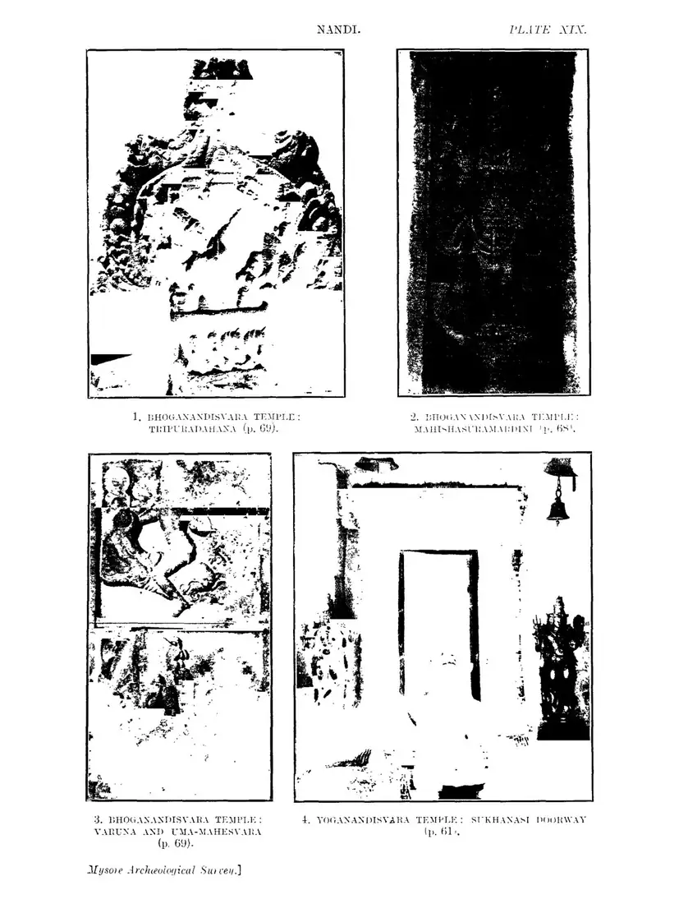
- BHOGANANDISVARA TEMPLE: TRIPURADAHANA (p. 69)
- BHOGANANDISVARA TEMPLE: MAHISHASURAMABDINI (p. 68)
- BHOGANANDISVARA TEMPLE: VARUNA AND UMA-MAHESVARA (p. 69)
- YOGANANDISVARA TEMPLE: SUKHANASI DOORWAY (p. 61)
(Pl. XIX, 1) being particularly interesting. Some other deities in this row are Indra, Tāṇḍavēśvara, Mahishāsuramardinī, Lakshṇī-Nārāyaṇa, Kumārasvāmi, etc. A water-spout on the south of the Bhōga-Naṇdi roof has a seated Yakshiṇī.
The tower is a finely designed pyramidical granite structure ornamented with turrets similar to those of the parapet (Pl. XX, 1). The Tower. well-designed śikhara of stone is surmounted by a stone finial or kalaśa and supported by eight soapstone sculptures in the round. Four of these are bulls which guard the corners, while the other four are images of Śiva standing. Each of these images is a fine sculpture with a well-shaped body and a beautiful countenance. The figure on the east reclines at ease on the back of the Nandi-bull which stands behind. The one on the west is thrēe-headed having makara-kuṇḍalas. Its four hands are thus disposed: rosary, chakra, kalaśa and kaṭihasta. It has a distant resemblance to Venkaṭēśa.
The navaraṇga doorway has instead of the dvārapālas two largish Yakshas guarding it with bands of smaller dancing Yakshas above.
Navaranga. On the lintel is a poorly carved Gajalakshmī. The navaraṇga is a hall of nine aṇkaṇas about 26' square with four pillars well ornamented in low relief. Each of these pillars has a squarish shaft with a rounded top, the figures used for ornamentation being either Yakshas or musicians or some of the great gods like Indra. The figures on the north-east pillar are particularly interesting, some of the panels illustrating the story of Bali and Vāmana.
The central ceiling of the navaraṇga is flat and contains nine panels with Umāmahēśvara seated in the centre and the Dikpālas on their vehicles around. (Pl. XIX, 3.) These figures have the lithe body, graceful poise and dignified bearing characteristic of Pallava sculptures. They attempt to approach in granite the beautiful work found at the Araṭaguppe Kallēśvara temple. The other images kept in the navaraṇga are, in order:—
1. Chōla King. —A seated man, usually identified as a Chōla king and about 2½' high. The person is seated in padmāsana with his left hand resting easily on his foot and the right in chinmudrā held against the chest. He is clean-shaven but for a tiny tuft of hair at the back of his head. He wears a band like the yajñōpavīta and a half worked necklet, bracelets and armlets and a short loin cloth. His large ears are lobed but bare. It is possible that he might be a high personage in meditation, like Divya-śakti Paṇḍita Bhatṭāraka mentioned in E. C. X, Cb. 26. It is definitely a portrait statue of high quality and if it represents a Chōla king its value would be extraordinarily great since it shows the person in the fashion of a religious recluse rather than as a ruler or warrior. If it is a Chōla king that person is probably Rājēndra Chōla.
2. Gaṇeśa .—A well-proportioned figure with little ornamentation.
3. Roughly carved Nañdi .—Recent.
4. Sārya .—Two-handed, with the seven horses on the pedestal and rearing lions supporting a tōraṇa on which appear the twelve Ādityas seated.
The sukhanāsi is entered by a small doorway which is supported by two sixteen-fluted pillars. On a cubical moulding of one of these is a bas-relief group showing anthropoid Nañdiśvara in yōgāsana with a band round his knees and a worshipper in front. The jambs inside these pillars are an insertion of the Vijayanagar period. Evidently the sukhanāsi was open in the earlier times.
The garbhagṛiha doorway has female attendants on the jambs instead of the dvārapālas. The sanctum itself has a flat ceiling with a ten-petalled lotus in low relief. The blank linga which stands on a large pīṭha is about 16" in diameter and is about 5' high from the ground. It is finely polished and has an impressive appearance.
Aruṇāchaleśvara shrine
Outer view
Tower; Navaraṅga; Sukhanāsi; Liṅga
No heading in the body: this section starts at its printed page (70).
The Aruṇāchaleśvara shrine which is planned and constructed very similarly to the Bhōga-Nañdiśvara shows a few differences of detail among which the following may be noted:
Of the basement cornices, one is rounded instead of being octagonal. Another cornice is shaped like eaves with a large number of small kīrtimukhas. In the row of makara faces a common subject is a fight between two bulls or two elephants or two lions.
The outer wall with its plainish pilasters is almost the same as in the other shrine except for the occurrence of a few turreted canopies.
The sōmusūtra is a remarkable piece with a charging warrior guarding its mouth.
The four pierced windows have the following sculptures:—
1. Tāṇḍvēśvara —a graceful image well made, though some of the limbs are out of proportion. On the pedestal is an inscription.
2. Creeper scroll —with Yakshas in the intervening spaces.
3. Shaṇmukha —seated with the peacock on seat.
4. Creeper scroll — with dancers and musicians.
The upper portion of the navaraṅga wall corresponding to the eaves and parapet is a structure of brick and mortar, which evidently has replaced in Vijayanagar times the older stone structure.
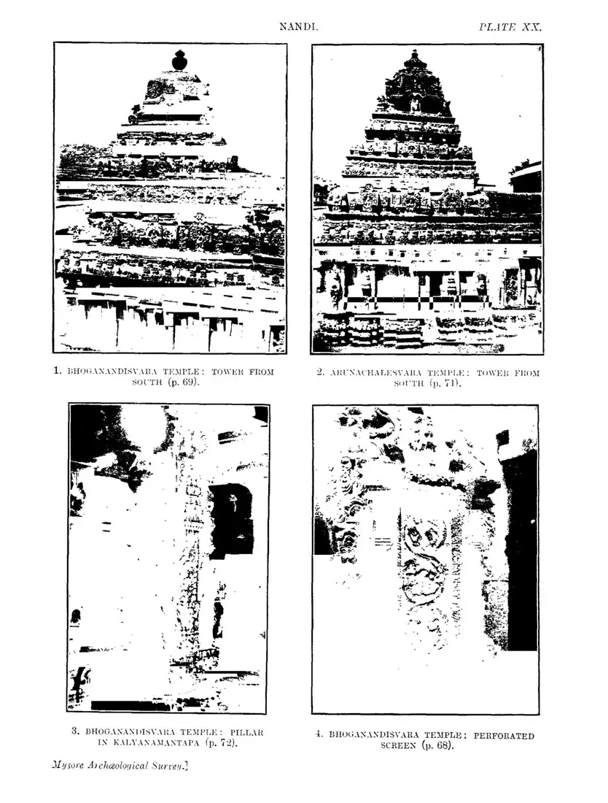
- BHOGANANDISVARA TEMPLE: TOWER FROM SOUTH (p. 69)
- ARUNACHALESVARA TEMPLE: TOWER FROM SOUTH (p. 71)
- BHOGANANDISVARA TEMPLE: PILLAR IN KALYANAMANTAPA (p. 72)
- BHOGANANDISVARA TEMPLE: PERFORATED SCREEN (p. 68)
The Aruṇāchala tower (Pl. XX, 2) is also on the whole similar to the Bhōga-Nandi tower except for two important differences: (1) The Tower. śikhara and the surrounding figures are all of brick and mortar, the original stone work having apparently disappeared; (2) The images carved in the various rows are less handsome. Among the images may be noted Sarasvatī, Narasimha, Vishpu and Sūrya.
The navaraṅga doorway, its pillars and ceilings are all rather plainish and look like Vijayanagar work. In the central ceiling of the navaraṅga there is a shallow dome near which only Indra and Ísāna of the Dikpālas have been carved. The pillars have square mouldings with sixteen-sided shafts and the capitals have mango-drops. In the navaraṅga are placed a poorly carved Nandi and an ugly Gaṇeśa whose face is so unnatural that it is identified even by the priest as that of a lion. On a pilaster on the north-east of the navaraṅga is carved the image of a man with bow and quiver standing with folded hands. He is probably the Vijayanagar or Ávati officer who restored the navaraṅga.
The sukhanāsi doorway was evidently a later insertion which was meant to protect the originally open sukhanāsi. In the latter, however, are four pillars of the square type belonging to about the Nolamba period. The garbhagriha doorway also shows work of the same period with the dvārapālas standing upon elephants. The work may possibly be of the 9th or 10th century.
The garbhagriha and the linga are similar to those of the other shrine except that the linga is larger and has a flatter head and the waist small and the pīṭha has upturned petals at its corners.
Linga.
Maṇṭapas
The Nandi Pavilions; Kalyāṇa Maṇṭapa; West Part of Mukhamaṇṭapa; East Part of Mukhamaṇṭapa
Both the Nandi pavilions are similar in design though the southern one is not so well finished as the one on the north. The latter is here described. A porch connects the navaraṅga doorway with the Nandi shrine whose roof is supported by rounded cylindrical pilasters of the type found in the Maralēśvara temple, Talkād. On the north, east and south, however, the beam is supported by plain, quadrangular door-frames on which are inscribed Tamil inscriptions. The bull is well proportioned and fine, though not elaborately ornamented. The sculptor has attempted to show the bones in its haunches and the muscles on the shoulders.
The finest architectural structure in the whole temple is the kalyāṇa-mantapa whose carving may be described more as jewellery than as sculpture. It is difficult to believe that all this work has been done in a kind of hardish dark stone which is much
Kalyana Mantapa.
harder than the soapstone used at Bēlūr and elsewhere. Strangely, too, it is in the Dravidian style, similar detailed ornamentation being found only in the Hoysaļa temples in the Mysore State which belong to a different style and in the kalyaṇa-manṭapa of the Sōmēsvara temple at Kōlar. The structure is raised on a stone base which is about 10' square and 1½' high. The face of the base is also cut up into cornices and base as in Hoysaļa turrets. The four pillars are of the composite Dravidian style being composed of a large square main shaft and three well-separated minor shafts on the inside. On the base of each pillar are carved a number of Yakshas singing and dancing in the midst of men riding lions. On the two inner faces of each pillar is a goddess standing in tribhaṅga with the right hand holding a lotus and the left hanging loose. Each of them wears a tiara, ear-rings, breastband, bracelets, anklets and rings, several sets of hip bands, the lower cloth or sari, jingles and anklets. Though elaborately worked, their proportions are not so graceful as in the sculptures of the 13th or any earlier century. The outer face of the lower part of each pillar is composed of a floral scroll springing out of a kalaśa with a large number of birds pecking at the flowers. In fact, birds form a prominent feature of the sculptural ornamentation as in the kalyāṇa-manṭapa of the Sōmēśvara temple at Kōlar. On each face of the upper part of each pillar is an elaborately carved squaroid turret supported by dwarfs and lions. The capital is formed of a series of pendent lotus buds on the inside and deities on the outside, birds again being the chief ornamental design (Pl. XX, 3).
The dome above the pillar rises upon beams which have large dwarfs in the corners, the inner face of the pillar being cut up into small panels containing various seated gods. The corresponding face outside has a row of Yakshas. Above the beams the dome rises on six sets of corner stones which form concentric octagons.
(1) The first row from below consists of kīrtimukhas with Yaksha faces.
(2) Row of standing gods like Vishṇu, etc., with dancing groups intervening.
(3) Row of lion-headed kīrtimukhas supporting Yaksha-headed tower-tops.
(3) The Dikpālas.
(5) Serpentine creeper scroll.
(6) Shallow padma.
Above these is placed a flat ceiling with a large padma in the centre and a flower pendant with parrots pecking at it.
Around the tower on the outside run the eaves with serpents and chains in the corners and imitation wooden rafters on the inner face. The outer face of the tower is now covered over by plaster. The whole structure smacks of the Vijaya-nagar style of which it may be one of the finest products.
The west part of the mukhamaṇtapa is borne on a platform. About 18 pillars have been added on the inside and the outside of the round pillars of the Chōlā period. The former are well worked, the four central ones on the west being typical of the finest Vijayanagar workmanship. On the inner face of each of these, stands a smiling lady holding a flower in the right hand, while the left hand hangs loose. Each pillar has a 16-sided shaft ornamented with floral and leaf bands and having cubical mouldings bearing numerous meso-relievos of various gods and saints among which can be seen the figures of many Śaiva saints and Gaṇas, varied forms of Narasimha, Vīrabbadra, Vishṇu, Pānduraṅga and Rāmānujāchārya. Some of these figures are very well carved though on hard stone and deserve study.
The roof of the mukhamaṇtapa is plain and level except in front of the kalyāṇamaṇtapa where it is raised by about 2'. This triforium is cut up by pilasters into a large number of panels each of which contains a standing figure of some god, saint or attendant. On the west is Dēvī with Gaṇēśa to her right and Kumāra to her left, while on the east Śiva dances with dancing Brahma and Vishṇu accompanying him with instruments.
The eastern part of the mukhamaṇtapa consists of a spacious pātālānkaṇa and two well constructed 'Z ' shaped 'jagali' platforms. The base of the latter bears finely carved ornamental cornices while the pillars which usually have 16-sided shafts and sculptured cubical mouldings are of the usual Vijayanagara times. The capitals have the common mango drops. An interesting object in the pātālānkaṇa is a large monolithic stone umbrella which reminds us of similar colossal objects at Gavipura near Bangalore.
Minor Structures
Umāmahēśvara Shrine
Kamaṭhēśvara Shrine; Apīta-Kuchāmbā Shrine; Girijāmbā Shrine; Prākāra; Vaṣantamaṇṭapa; Śṛingi Tirtha; Mahādvāra; Other Buildings; Conservation
No heading in the body: this section starts at its printed page (73).
The Umāmahēśvara shrine is a small structure standing between the navaraṅgas of the larger temples. On either side of its doorway stands a moustached dvārapāla, while on its walls are rows of standing images as follows:—
South wall .... The Dikpālās.
West wall .... The Seven Ēishis and the Trimūrtis.
North wall .... Śiva and Pārvatī attended by a large number of ladies with Nandīśvara in the centre, perhaps getting a tree watered by the ladies.
Inside the shrine are kept the metal images of Umā and Mahēśvara in sukhāsana.
10
East View of stone screen :
Šiva and Pārvatī with attendants some of whom are under pointed arches.
Outer View of stone screen :
This screen is composed of two pierced windows each showing a moustached god dancing on a makara while in the centre are a seated goddess and a standing Gaṇeśa with attendants and deities on either side, like Vīrabhadra and Bhairava.
The base and the top cornice of this screen are similar to corresponding parts of the Bhōga-Nañdiśvara shrine in particular.
In the south-east corner of the inner quadrangle there was originally a linga known as Kamaṭhēśvara. This is now housed in a room Kamathesvara Shrine . In the south-west corner. There is nothing remarkable about this structure.
The Apīta-Kuchāmbā shrine is situated to the north-west of the Aruṇāchalēśvara shrine and houses his consort whose standing figure Apita-Kuchamba Shrine . of dark-bowrn stone is not handsome. The doorway is supported by maidens treading on makaras and female dvārapālakas with Gajalakshmī on the lintel. The walls are sculptured in meso-relief thus :—
South wall .... Šiva, Vishnu and Brahma receive an invitation to Gaurī's marriage and proceed on their vehicles.
West wall .... The Dikpālakas and the Seven Rishis also proceed to the marriage.
North wall .... Šiva receives Gaurī in marriage, while the other gods bear witness.
The Girijāmbā shrine and its goddess are in almost every respect similar to Girijamba Shrine . those of the Apita-kuchāmbā shrine except that the four central pillars of the mukbamanṭapa are more ornate.
All around this courtyard runs a cloistered prākāra borne on pillars of the Dravidian style. Those near the gateways have brackets of ridden yāļis rearing on the heads of elephants. An Umāmahēśvara group of probably the Gaṅga times is kept in a niche on its north. In the eastern part of the courtyard stands a monolithic pillar, about 30' high, which has a thin octagonal shaft and nothing else remarkable about it. In the north-east is the vāgašālā which appears originally to have been a shrine of Bhairava or some other deity built in the late Vijayanagar days.
A doorway in the north wall of the prākāra leads to the second courtyard in the west part of which there is the Vasantamanṭapa, a fine structure of the Vijayanagar period borne on 16 well-carved Dravidian pillars, the outer ones being supported by yāļi or lion brackets.
Vasantamantapa.
The third courtyard to further north is also surrounded by cloisters and has a large stone-built pond known as Śriñgi Tirtha. Above the verandah all round is a turreted parapet of brick and mortar in each of which stands the stucco figure of a god or goddess.
Sringi Tirtha.
The mahādvāra is a typical structure of the Vijayanagar period with a tall stone doorway, but the brick tower has now disappeared.
Mahadvara.
To the right of the mahādvāra is found a small vāhana-mantapa of Vijavanagar period. There are no traces now remaining of the old prākāra wall which was abutting on either side of the mahādvāra. To further south of the vāhana-mantapa hes a pond filled with stinking water which appears to be a source of public danger. The sooner the structure is removed and the pond filled in, the better. A large area in front of the temple is enclosed in a compound and belongs to the temple. On the south-west of this courtyard stands a small stone structure of Vijavanagar times housing an image of Vīrabbadra. On the north there is a large pond with well cut stone steps whose silt should be removed. An old mantapa probably meant for the ear festival has been now converted into the Travellers' Bungalow. To the west of the prākāra wall of the whole temple stands a small shrine of the Sapta-mā'rikas.
Conservation.
The Bhōganandiśvara temple is a First Class Muzrai institution and an important place of pilgrimage for the worshippers of Śīya in South India and it is also a place of great antiquity highly valuable to students of history and of art. It deserves to be preserved and maintained in a decent form. All private dwellings like those now existing in the north-east, north and south of the temple should be removed. The mantapa which has now been converted into a Travellers' Bungalow should once again be converted into a mantapa, a separate Travellers' Bungalow being built further to the east. Thus the temple area would contain only buildings of antiquity. The white wash and oil wash covering many of the sculptured parts of the temple should be carefully removed leaving the stone bare and clear in its original colour. The small niches built over the figures of Chandikeśvara on the north-west of the Bhōganandi shrine should also be removed. The Bhōganandiśvara tower and navaraniga and one or two places in the north verandah are said to be leaky. The roots of the plant which are appearing on the tower and elsewhere should be removed and the crevices deeply cement-pointed with the cement coloured to match the stone. The brindāvana in front of the Apita-kuchāmbā shrine should be removed. The pavement of the courtyard may be reset in due course according as funds permit.
Part III: Numismatics
THE SANGAMA DYNASTY
Harihara
Hanumān; Garuđa
TYPE A :— Hanuman.
VARIETY ( a ).
1. Ai Varāha 51'5 grains.
Obverse :—Rude figure of Hanumān to right, with knees slightly bent, left hand resting on left knee and right hand raised up as in the act of striking. The tail is lifted up behind the head. The face looks forward. Sometimes behind the head there is a large tuft of hair. On some specimens the face looks back.
Reverse :—Three-line Kannađa legend with rules between the lines :—
Śrī vī ra Ha ri ha ra
VARIETY ( b ).
2. Ae . 6
Obverse :—Hanumān as on No. 1 but face looking back. 1
Reverse :—Kannađa legend as on No. 1.
VARIETY ( c ).
3.
Obverse :—Similar to No. 1, but with ring of dots around. 2
Reverse :—In linear circle two-line Nāgari legend.
Ha ri ha ra
TYPE B :— Garuda.
4. Ae
Obverse :-- Garuđa with long beak, standing to right in posture similar to that of Hanumān in No. 2. 3
Reverse :—Similar to No. 2.
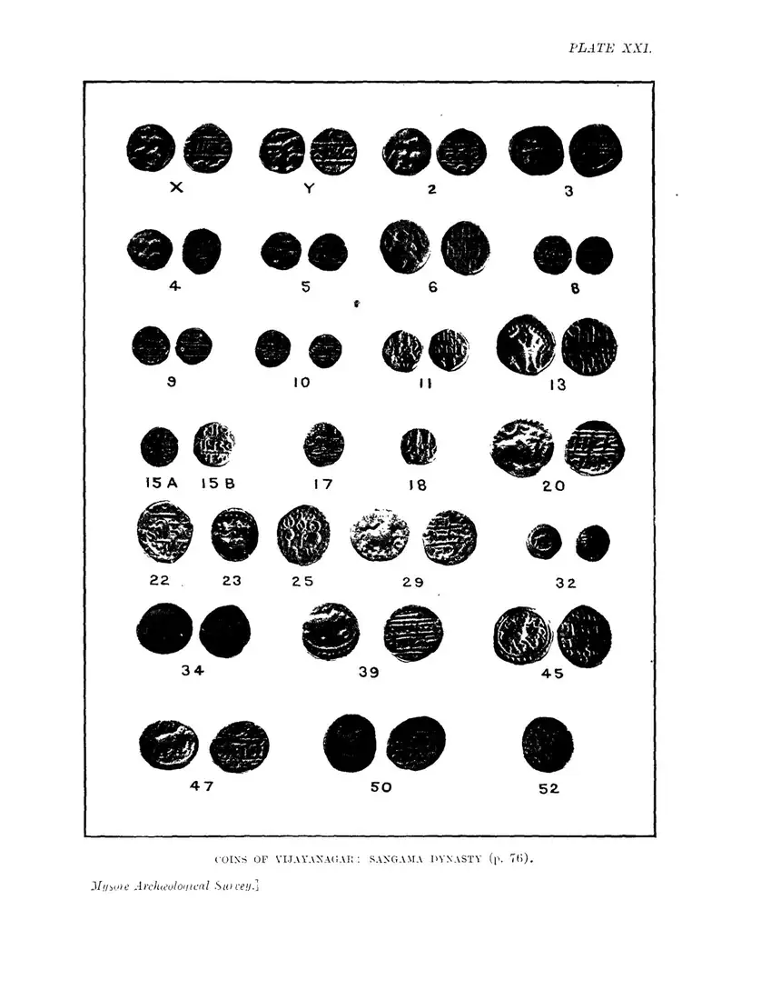
- COINS OF VIJAYANAGAR: SANGAMA DYNASTY (p. 76)
Cited in the text: p. 77 ↩
Hanumān and Garuđa were the devices of the Yādavas as seen from their title 'Hanumad-Garuđa' which has descended to the Mahārāja of Mysore through Vijayanagar. The occurrence of these two figures on Harihara's coins supports the tradition that Saṅgama was in some way connected with the Yādavas of Dēvagiri.
The great mediaeval Hindu Empire of Karnāṭaka which had its capital at Vijayanagar was the result of an effort made by the Hindus of Southern Dakhan to defend their homes from further inroads by the Muslims. Harihara I who became the ruler in 1336 was faced with a situation unprecedented in the history of South India. With the help of his brothers he had freed the southern part of the Yādava country and the northern part of the Hoysaļa country from the Muslims and founded a kingdom of his own. This he called the 'Karnāṭaka' kingdom owing to the spoken language of the people being Kannađa. The foundation of Vijayanagar, also called Vidyānagara, is traditionally but incorrectly ascribed to Guru Vidyāraṇya who is said to have caused gold coins to pour down from heaven. Perhaps this means that the Srīngēri Mutt helped Harihara with part of the finances necessary for building up the new State. Whatever may have been the source of the supply of gold to Vijayanagar, there appear to have been issued a very large number of gold and copper coins.
Harihara and his friends had perhaps to choose an inspiring device for the new coins, and their choice was most appropriately the figure of Hanumān, the great monkey god. The site of Vijayanagar 1 and the Ānegondi bank of the Tuṅgabhadrā opposite to it have been identified in Hindu tradition with the city of Kishkinđhā, the hill fortress of the Vānaras whose prime minister was Hanumān. Harihara and his comrades were surely aware of the sanctity and heroic traditions of the ground on which Vijayanagar stood. There is scarcely an important hill on the site which is not crowned by an image of Hanumān and, in fact, there is a temple of his near Paraśurāma's temple on the peak of the Mātaṅga hill which is quite close by the temple of Virūpāksha.
Hanumān appears on the coins of Vijayanagar in three different styles.—( 1 ) His tail is sometimes arched over his head and curled up outwards in front of his face which looks forward. ( 2 ) The tail is lifted up but is shorter and the hero has turned his head backward. ( 3 ) The face looks forward and the tail forms an inverted arch crossing the knees with the end rising up in front.
Some difficulty is caused by the great similarity of this figure to Garuđa described by Hultzsch 2 , following the identification by Elliot of a similar figure on the gold coin of the Kalachurya Rāya Murāri Sōvi 3 . The figures on Harihara's coins are either Hanumān or Garuđa. No wings of the kite-god are to be seen
1 Longhurst: Humpi Euns , Map. while the tail and snout of Hanumān are clearly visible on many specimens. Very often the god has a large knot of hair or kirīṭa behind his head after the mediaeval fashion. Bidie is right in identifying the figure as Hanumān 1 and if any doubt yet remains, the name given to the coin by the Shroffs namely Hanumantarāi Varāha helps to set it at rest.
The figure of Hanumān appears on the coins of the later Kadambas, on the banner of the Yādavas, on the Rāma Tankas, on some local Vijayanagar copper types and on the Pagodas of Mahammad Ali Walajah, the Nawab of Arcot. There is no doubt that the Hanumān device is very similar in pose to the Garuđa on the gold issues of Murāri Sūva Bhata, as is borne out by the similarity of the weight standards. But the medium of this inheritance is uncertain. There is at present a break in the continuity of the standing Hanumān and Garuđa types.
The connection of the symbol of the first two kings of Vijayanagar with Hanumān who appears on the coins of the later Kadamba dynasties calls attention to one of the theories regarding the origin of the “Sangama” dynasty. Bukka II is referred to as ‘the Hindu Sultan Kadam’ by Nikitin, a Russian who visited India in 1474 2 , and Sewell refers in its connection to the view that the dynasty had a Kadamba origin.
The ‘Pagoda’ or Varaha was the standard gold coin of the Dakhan. By the time the Vijayanagar kingdom was founded the weight of the Varaha had become established at 52 grains.
One or two points about the reverse may be noticed here. Its style with the legend in three lines, the rules between the lines and the use of the Kannađa alphabet bring the earliest Vijayanagar coin remarkably near those of Murāri Sūva Bhata (Kalachurya). Kannađa characters appear to have been used in the Kannađa country, while Nandi-Nāgari was employed both in and outside that area. The use of the title Vira as distinct from Pratāpa suggests that Vira Harihara refers possibly to a king different from Pratāpa Harihara. The former king whose types are also different was perhaps Harihara I, while the latter was Harihara II.
Fortunately, both gold and copper specimens have been known, and indicate that Vijayanagar was a sovereign State and that there was a varied currency used in the kingdom about the year 1350.
The rudeness of the figure on the obverse indicates the poor condition of numismatic art in the earliest days of Vijayanagar as contrasted with the latter days. The Nāgari legend variety with the bordering dots and circle would appear to be later in date than the Kannađa legend variety which is distinctly ruder.
1 Bidie No. 9. Ind. Ant. XX, p. 302.
2 India in the Fifteenth Century , Hakluyt edition, p. 29; and Sewell: Forgotten Empire , p. 22.
Bukka I
Hanumān
No heading in the body: this section starts at its printed page (79).
Type A :— Hanuman.
Variety (a)—Kannađa legend.
5. Ai. Hanumantarāi Varaha.
Obverse :—Hanumān—Hultzch identifies the figure as Garuđa. The figure is not clear. The pose is as on No. 2.
Reverse :—Three-line Kannađa legend as on No. 1 1
Śrī vī ra Bu ka rā ya
(Specimen in the Madras Museum.)
Variety (b)—Nāgari legend.
6. Ae.
Obverse :—Hanumān as on No. 1. The tail is clearly seen 2 to form an arch over the head and curl up in front.
Reverse :—Three-line Nāgari legend with rules between the lines.
Vi rā Bu ka pa tī ra yā
Hultzch reads the legend as ‘Śrī Vira Bhupati rāya.’ But it is difficult to deny the existence of the letter ‘ka’ in the second line.
7.
Obverse :—Similar to No. 6.
Reverse :—Similar to No. 6, but the legend reads :
Śrī Bu ka pa rā ya
Bukka I was the hero, who more than anybody else, was responsible for the establishment of the kingdom of Vijayanagar. He was famous even in contemporary times as a military genius. The works of Vidyāraṇya and Hindu tradition refer to him with gratitude as the saviour of Hinduism in the south. Till his elder brother’s death in 1353, Bukka was content to be only the heir; and when he occupied the
1 There are several specimens in the British Museum.
2 Ind. Ant. XXV, P. 318, Pl. No. 6. throne he had some unknown reason for calling himself not an emperor but only a governor. His coins are very similar to those of Harihara I, though they show a little more care in die cutting. The variety with the Kannaḍa legend is undoubtedly his issue.
As the kingdom expanded over the Telugu and Tamil districts and as the learned men of the Dakhan gathered at the capital and gave an impetus to the revival of Sanskrit learning, the first two kings appear to have brought into greater use the Nāgari script which only could be the common script of the learned all over South India. The Nāgari legend on the variety b¹ , has been read by Hultzch “Śrī Vira Bhūpati Rāya,” the ‘ti’ being sometimes wrongly long; he attributes it to a prince who was the son of Bukka II². It is doubtful if this Bhūpati Rāya ever sat on the throne. The Hanumān figure suggests that the coin more probably belongs to the middle of the 14th century than to the early 15th century. The specimen in the Cambridge collection has enough of the legend to give the reading ‘Sri Ba ka pa ra-’ which stands for ‘Śrī Bakapa Rāya.’ Bukka was also called Bukkaṇṇa or Bukkappa. It is also possible that he was known as “Bukkapati Rāya” or “Bhūpati Rāya.”
The Vijayanagar kings sometimes allowed the local rulers whom they conquered and the viceroys to issue coins of their own. During the last days of Harihara I or the early ones of Bukka I the viceroys on the west coast were authorised to issue coins called ‘Mangaĵūru Gadyāṇa’ and ‘Bārakūru Gadyāṇa³’ which were probably gold coins issued by the ‘Gaḍis’ or outlying provinces. No local gold coins of this kind are known though there are numerous types of copper coins which were most probably the issues of the provincial viceroys.
Harihara II
Umāmahēśvara with Trident and Drum
Umāmahēśvara with Battle-axe; Lakshmī-Nārāyaṇa; Sarasvatī-Brahma; Lakshmī-Narasimha; Bull
No heading in the body: this section starts at its printed page (80).
Type A :— Uma-mahesvara with Trident and Drum.
8. Ai. ‘4 Half Varāha. Wt. (1) 26’4.
Obverse :—On raised seat supported by a lotus Mahēśvara or Śiva is seated in squatting attitude or padmāsana with his consort Umā or Pārvatī on his left thigh. Both wear kirīṭas or peaked crowns and the usual archaic dress and ornaments. Śiva’s coronet has a halo around it and he has four arms. One left hand holds a trident and the other is round his consort’s waist. One right hand holds a ḍamaruga (drum) while the
1 Bidie No. 9 ; I. A. XX , P. 302, Pl. No. 1. other is in the athayamudrā or the attitude of reassurance. The goddess has joined her hands in devotional attitude. Near Šiva's head are the sun and moon.
Reverse :—Three-line Nāgari legend with rules between the lines.
Śrī pra tā pa Ha ri ha ra
Type B :— Uma-mahesvara with Battle-axe.
9. Similar to No. 8; but the god holds a battle-axe in the right back hand.
Type C :— Lakshmi-Narayana.
10. Similar to No. 8.
Obverse :—Similar to No. 8, but the deities are Lakshmī and Nārāyaṇa instead of Šiva and Pārvatī. The god holds in one right hand the Sudarśana chakra or discuss with three conventionalised flames, and in one left hand his śaṅkha or conch named Pañchajanya.
Reverse :—Similar to No. 8.
Some specimens in the British Museum have minutely milled edges.
Type D :— Sarasvati-Brahma.
11. Similar to No. 8, but the god's hands are thus disposed: abhaya (with rosary ?), ladle, kalaśa or pāśa and pustaka. The last is definite and helps the identification of the god with Brahma. The goddess appears to hold a rod-like thing, perhaps a rudra-Vīṇā.
Type E :— Lakshmi-Narasimha.
12. Similar to Nos. 8 and 10.
Obverse :—Similar to No. 10, but the god's lion face indicates that he is Narasimha the Man-Lion with his consort Lakshmī.
Reverse :—Similar to Nos. 8 and 10.
Specimen in the British Museum collection. Not previously published. The minute centrifugal lines show the defective method of die striking generally observed on the Akōla series.
Type F :— Bull.
Variety (a).
13. Ae. '6.
Obverse :—In circle of dots, fine humped bull moving to left, with bell or gingle hanging from its neck, crescent moon above and dagger in front.
11
Reverse :—In circle of dots two-line Nāgari legend sometimes barbarous with rules between the lines.
Pra tā pa
Ha ri ha ra
Specinen :—(a) British Museum.
(b) Cambridge.
Harihara II was the first ruler to assume imperial titles. The new status of the kingdom which had now become an Empire required a change in the device on the coins. The simple old Hanumān gave place to the great Purāñic gods Brahma, Śiva and Vishṇu. A successful attempt was made to revive Hindu literature and art and the art of coinage received greater attention. The Smārtas as before led the cultural revival and the Emperor followed their lead. To him all the gods of Hinduism were true and making a difference between Śiva and Vishṇu was sinful. All the three great deities appeared on the coins as also others connected with them. The Empire now encompassed nearly the whole of south Dakhan and the religion and culture of the court became more elaborate. The coins clearly bear witness to these changes.
Śiva as Virūpāksha or God with the terrible third eye was the patron deity of the kingdom of Vijayanagar. In his original form in the temple of Hampi, he is only a Linga or Phallus. But in his man-like form he appears on the coins seated on his throne along with his consort who is the first of his devotees. He holds one right hand in the abhayamudra promising protection and salvation to his votaries, the people of Vijayanagar. The other hands hold his famous battle-axe and drum or the trident and drum with which he fought his enemies.
But Harihara II worshipped other deities also. Though his Vishṇu coins are rarer than his Śiva ones, the Lakshmīnārāyaṇa type is also well known. It is known that Harihara II took special interest in the restoration of the beautiful Hoysala temple of Vishṇu Chennakeśava at Belur.
The Lakshmī-Narasimha type is of great interest as it is exceedingly rare. A good lens clearly shows the lion face of the god with the lips marked by three converging lines. If the figure indicates the peace which followed in 1397 on the successful termination of the war waged by general Gunđa on the Turushkas or Moslems, 1 the type would belong to the last years of the reign of Harihara.
The Brahma type is exceedingly rare and hitherto unknown.
Śiva's mount and emblem is the bull Nandi, to whom especial importance was attached in the Kannađa country owing to the spread of the Vīra-Śaiva sect between the 12th and the 15th centuries. The Indian humped bull with long horns walking majestically with uplifted head has been a figure admired in Indian art and literature.
1 Rice : Mysore and Coorg : p. 115.
The crescent when not accompanied by the sun would stand for Śiva, who as Chandraśēkhara wears the crescent in his hair. The bull and crescent appear commonly on the Āndhra and Chōła coins, while the dagger, also present on the Chōła and Chālukya issues, is a symbol of royalty. The bull and dagger type is copied from a similar Chōła type suggesting thereby that it might have been issued after the Chōła country had become an integral part of the Empire. On some coins with the Kannađa legend “Dēvarāya,” the dagger takes the form of an arrow and sometimes of the trident which is an emblem of Śiva. 1 The sun and moon appearing together are the eternal witnesses of the king’s deeds or, more probably, the indicators of the eternal duration of the Empire or the circulation of the coins.
The legend on the reverse is in Nandi or Nanda Nāgari and is sometimes barbarous especially on the copper issues, showing that the die cutters were very often illiterate artisans who sometimes forgot to reverse their letters in the dies. The occurrence of the epithet “Pratāpa” as distinguished from “Vira” would suggest Harihara II who might have adopted that title on his assumption of imperial dignity. Harihara II and his successors assume this title while his predecessors appear to have been content with the more modest ‘Vira.’
The make of the coins of Harihara II offers some points of interest. They are better made and the dies are more elaborately cut than those of his predecessors. Some specimens show a distinctly better condition of art than others and the latter which bear more conventionalised figures are also of inferior metal. These latter were perhaps issued in some provincial mint or by some impecunious viceroy or imitator.
As already stated in the Annual Report for 1930, P. 73, a large number of Vijayanagar coins from the days of Harihara to the days of Achyuta Rāya come from Bassein in the Akōla District of the Central Provinces as noted in the records of the museums. Many of these show that one of the dies or both might have been very shallow giving a rather low relief to the figures. The good metal they contain does not support the view that they were only imitations. It is possible they were the issues of some particular mint situated more to the north, and subordinate to Vijayanagar. About this time there was the Hindu state of Kherla in this locality, about which much is not known. 2 In all probability, this State acknowledged the suzerainty of Vijayanagar and played an important part in the latter’s foreign affairs. This appears to be the most suitable explanation of the Akōla finds.
A remarkable feature of some of the coins of Harihara II and a few of his successors like Dēvarāya II is the evidence of milling. There are two specimens in
1 Mysore Catalogue Draft : Vijayanagar, No. 24.
2 Imperial Gaz. Vol. II, P. 383 mentions the common enmity of Kherla and Vijayanagar to the Bahamanis. See also Camb. Hist. of India, Vol. III, p. 351 f. the British Museum whose edges on the obverse side are milled all round, the ridges being very minute. This is highly important as no modern Europeans had come to India at that date and even in Europe milling was invented in the eighteenth century. It is probable that the Vijayanagar artisans gave up milling because it required much labour to cut the proper die.
The coins of Harihara and his successors throw some light on the archaic dress and ornaments which were worn by deities and by kings on ceremonial occasions. This dress is even now worn by deities in the temples and imitated by the performers of old fashioned Purāṇic plays or Kathas , especially in Kanara and Malabar which have not been much influenced by Moslem conquests. Krīshṇa Rāya's statue with his consorts in the temple at Tirupati 1 wears very nearly the same kind of dress. The head-dress consisted of kirīṭas or peaked caps more often of metal than of cloth, inlaid with precious stones and rising in ridges tier above tier. Very often the kirīṭas of the male deities had a curved metallic projection on each side or an inverted heart-shaped halo behind. The upper part of the body was covered with a light-fitting bodice; sometimes it was bare, and women used broad bandages (or corsets?) over their breasts. A long piece of cloth was tied in beautiful folds round the waist and lower limbs, but was rarely drawn up to cover the upper part of the body as is done by south Indian women to-day. Instead was used a separate uttarīya or upper cloth, which was tied round the waist by the men on sacred occasions. Armlets, bracelets, anklets, necklaces, ear-rings and other ornaments were equally worn by both sexes. The higher classes, the gods, kings and queens wore long hair tied in large knots behind the head or on one side as among the Tamil and Telugu women to-day.
The custom of seating the goddess consort on the lap of the god appears to be an ancient convention surviving from some remote period to the present day. Such a posture would appear to have been as impossible for ordinary mortals on public occasions in the days of Vijayanagar as it is to-day in India. The posture was perhaps adopted by public art to emphasise the oneness in spirit of the consorts as evidenced in such compound names as Sitā-Rāma, Lakshmī-Nārāyaṇa and such conceptions as Ardhanārīśvara.
Virūpaksha I
No issues of this ruler are known.
Part III: Numismatics › THE SANGAMA DYNASTYBukka II
Bull
No heading in the body: this section starts at its printed page (84).
Type A.—Bull.
14. Ae. Similar to No. 13.
Obverse:—Bull similar to No. 13, but with sun and moon above.
1 Longhurst: Hampi Ruins , p. 44.
Reverse :—In circle of dots three-line Nāgari legend with rules between the lines.
(Vi) ja ya Bu ka
Rā ya
Specimen in the Cambridge Museum.
There were two kings to whom it is possible to attribute this coin : Bukka II and Vijaya I. The latter had also the name Vijaya Bukka, by which he is known on some of the inscriptions. But the obverse of the coin with the dagger and no conch and the reverse without any dagger in the centre make the coin resemble the bull type of Harihara II more than the bull types of Dēvarāya I. One difficulty which arises in attributing this coin to Bukka II, is the epithet “Vijaya.” This king was perhaps called Vijaya Bukka also, in which case the application to him of the name ‘Ajarao’ by Nuniz 1 would be explained.
Dēvarāya I
Umāmahēśvara; Umāmahēśvara with Battle-axe; Lakshmīnārāyaṇa; Bull and Nāgari legend
Type A.— Uma-Mahesvara.
15. Ai. ‘45. Varāha. Wt. 52’3.
Obverse :—Śiva and Pārvatī as on No. 8 of Harihara II.
Reverse :—Three-line Nāgari legend with rules between the lines.
Sri pra tā pa Dē va
Rā ya
16. Ai. ‘35 Half Varāha. Wt. 26’1.
Similar to No. 15.
Type B.— Umamahesvara with Battle-axe.
17. Ai. Varāha.
Obverse :—Similar to No. 9.
Reverse :—Similar to No. 15. Śrī Pra tā pa Dē va rā ya.
NOTE.—Bidie 2 thinks that Śiva holds in his right hand the ‘đamaru’ and in the left the Khatvānga or club. The đamaru looks also like a conch or even bow.
1 Sewell : For. Emp. p. 51.
2 Bidie. Pagoda or Varaha coins, p. 44.
Type C.— Lakshminarayana.
18. Ai. '45 Varāha. Wt. 52'3 1
Obverse:—Vishṇu and Lakshmī, similar to No. 10 of Harihara II.
Reverse:—Similar to No. 15. Śrī Pra tā pa Dē va ra.
19. Ai. '4 Half Varāha. Wt. 26.
Very often there is a dot under 'Pa' in 'Pratāpa' and sometimes the diagonal stroke above 'Dē' is absent or 'Dā' or 'Dō' is found. 'Ya' at the end may be 'yā.'
Type D 2 .— Bull and Nagari legend.
20. Ae '65
Obverse:—Similar to 10 of Harihara II; bull to left, but with a conch in front instead of dagger.
Reverse:—In circle of dots, dagger above and two-line Nāgari legend below, sometimes with rules between the lines.
Pra tā pa Dē vā ra ya
The legend is often corrupt.
Dē va ra ya
21. Ae '65 3
Obverse:—Similar to No. 20 but with bull to right.
Reverse:—Similar to 20.
22. Ae '65
Obverse:—Similar to No. 19.
Reverse:—Similar to No. 18 but with legend only:
Śrī Dē va rā ya
23. Ae '65
Obverse:—Similar to No. 21, but with crescent moon and sun above, sometimes with a rule below them.
Reverse:—Similar to No. 21.
1 Ind. Ant. XX, p. 302.
24. Ae '6
Bull and Kannađa legend
No heading in the body: this section starts at its printed page (87).
Obverse :—Bull and dagger similar to No. 13, but with no crescent above.
Reverse :—Nāgari 'Śrī Dēvarāya'. Similar to No. 22, but with sun and moon on top represented by crescent with central dot ; no dagger on reverse.
The conch perhaps indicates victory and connects the Vijayanagar types with the Chōła types.
Type E.—Bull and Kannada legend.
25. Ae '65
Obverse :—In circle of dots, similar humped bull to left with crescent and sun above and no dagger on obverse. Some specimens have the Nāgari letter 'dē' in front of the bull standing perhaps for 'Dēvarāya.'
Reverse :—In circle of dots, in three lines (Kannađa characters) :
(1) Śrī Dē va
(2) A dagger between conch and discus.
(3) rā ya
The distribution of the letters with the symbol in the centre is perhaps in imitation of the Chālukya and Pāṇdya issues. Specimens similar to No. 25 are met with in most collections. Sometimes the moon appears with a dot in the centre alongside of the sun, thereby duplicating the sun mark. Some specimens show fine bulls while others have only a rude symbol. The difference was perhaps due to the varieties issued from the central and the provincial mints.
Type F.
26. Ae.
Obverse :—Similar to No. 25.
Reverse :—Conch to left and sceptre (dagger ?) in centre and discus to right with sun and moon below and the Kannađa letter 'De' above.
Rangachari and Desikachari publish this coin and read the doubtful letter as 'De'. It is also doubtful whether the reverse central symbol represents a sceptre or not, as sceptres are uncommon in the Vijayanagar series.
27. Ae '65
Obverse } Similar to No. 25, but with bull to right.
Reverse
28. Ae '6
Obverse :—Similar bull to left in linear circle, with dots representing its limbs and also sun and moon above ; in front the Nāgari letter 'da' reversed, three dots below line in exerque.
Reverse :—Two-line Kannaḍa legend :
si Dē va
Rā ya with double horizontal lines and single vertical lines separating the letters. The variety is rather rude and perhaps comes from some out of the way provincial mint. The reverse indicates the continuation of the chequered reverse pattern on the local issues, which have been hitherto attributed to early Mysore.
Type G.—Bull and ‘Nilakantha.’
29. Ae ‘45 1
Obverse :—In circle of dots similar bull to right, with Nāgari ‘de’ in front and sun and moon above.
Reverse :—In circle of dots three-line Nāgari legend with intervening rules :
Śrī
Nī la kaṇ ṭha
Nilakaṇṭha or Blue-necked is an epithet applied to Śiva. The Sangama dynasty had at least five different Dēvarāyas, the first two of whom were famous as Emperors. Though the reign of Dēvarāya was shorter and less important, yet it was an eventful period of strife against the Moslems. As either of the kings was known as Pratāpa Dēva Rāya, it is difficult to decide to whom the legend on a particular coin refers. Coins with any distinct reference in the legend or in the symbol to an elephant are perhaps to be assigned to Dēvarāya II, as the latter took great pride in distinguishing himself as a hunter of elephants. Out of the seven types described under Dēvarāya I, it is not possible to state definitely that any of them cannot belong to Dēvarāya II.
It is possible to suggest that Dēvarāya II who was somewhat inclined towards an extreme form of Śaivism as taught by the school of Basavēśvara might not have issued the Lakshmīnārāyaṇa type which shows distinct traces of Smārta influence. But the gold issues of the Umāmahēśvara type which are much more numerous might as well be the issues of Dēvarāya II as of his grandfather, as no Varāha and half Varāha pieces of the elephant type have been known which have any reference to either of the Dēvarāyas. Surely, Dēvarāya II also issued the larger gold pieces during his reign of twenty-two years and they were similar to the types of Dēvarāya I, especially to the Umāmahēśvara type.
The copper issues also offer a similar difficulty. The classification here followed assigns all the bulls to Dēvarāya I. This classification is not anything more than merely suggestive. As the Bull type appears under Harihara II and Kṛishṇadēva
1 Ind. Ant. XX. p. 305.
Rāya also, there is no reason to suppose that it did not appear under Dēvarāya II. Nor do the positions of the conch and dagger or the use of the letter 'de' or even the use of the Nāgari or Kannḍa alphabet offer definite proof of the origin of these coins. It is possible that Type C with the bull and Nāgari legend 'Dēvarāya' belongs to Dēvarāya I as it resembles No. 13 of Bukka II and No. 12 of Harihara II; and types D and E showing either a change of the reverse design, or the use of the initial letter 'De' or referring to the distinctly Śaiva 'Nilakaṇṭha' which may be the name of Śiva or of some important viceroy similar to Lakamana Daṇāyaka, may belong to Dēvarāya II. It is not unreasonable to suppose that Dēvarāya I issued types A, B, and C, while Dēvarāya II issued types A, D, and G, in addition to his other types, though the data available are insufficient to make such a conclusion final.
Bull and ' Nīlakaṇṭha '
Rāmachandra I
There is one specimen at the British Museum which has an elephant with lifted tail moving to left on the obverse and on the reverse a vertical straight line in the centre perhaps a conventionalised mark for the usual sword or dagger with four Nāgari characters which read :
Rā ma ma ra
The first letter is much worn and only the last three are clear. The elephant would make it a coin of Vijayanagar in the fifteenth century and if the name is correctly Rāma it could refer to Ramachandra I. But as it is doubtful if this prince was ever really in power and as it is more likely that the elephant symbol was adopted by Devaraya II, it is possible that the coin belongs to some ruler of later times and not to Rāmachandra I.
Vijayarāya I
Bull and Kannađa legend
No heading in the body: this section starts at its printed page (89).
Type A.— Bull and Kannada legend.
30. Ae '45
Obverse :—Similar to No. 25 of Dēvarāya I.
Reverse :—Similar to No. 25 but the Kannaḍa legend may be read as Śrī Jaya or as Śrī de ya.
The attribution of this type to Vijayarāya depends entirely on the reading of the legend. The coin is quite like similar ones of Devaraya I and it is possible to read the second letter as 'de' instead of as 'ja.' But the last letter is more like, 'Ya' than like 'va'. The die-cutter may have unintentionally cut 'ya' for 'va' or more probably the latter may have had a cursive form resembling 'ya'. But as it is, the last letter is more like 'ya' than 'va', though the reading Vijaya would still be difficult as the letter 'vi' does not appear. The coin is described under Vijayarāya I only to call attention to its legend : but its attribution is subject to much doubt.
12
Part III: Numismatics › THE SANGAMA DYNASTYDēvarāya II (Co-regent and King)
Gold-Elephant; Silver-Elephant
Type A.—Gold—Elephant. 1
31. Ai '3 Quarter Varāha. Wt. 13'2
Obverse :—In linear circle, fine elephant moving to left with sun and moon above.
Reverse :—Two-line Nāgari legend with rule between the lines :
Śrī Dē va rā ya
Type B.—Silver—Elephant.
32. Ag. About '4, Small coin.
Obverse :—In linear circle, rude elephant to right. 2
Reverse :—In plain field, dagger to left and two-line Nāgari legend.
Dē va rā ya
Specimen in Tracy's collection.
Hultzsch quotes a description of Dēvarāya II's coins and their names by Abdul Razak, the Persian ambassador who visited Vijayanagar in 1443. 3
Metal. Name. Value.
Gold Varaha Varaha
„ Partab (-Pratapa). Half Varaha
„ Fanam (-Haṇa) 1/10th Partab or 1/20 Varaha
Silver Tar 1/6th Fanam or 1/60 Varaha
Copper Jital 1/3rd Tar or 1/180th of a Varaha.
The above statement is of very great value as it indicates the respective values of the different metals as also the varied currency used in the Dakhan in the fifteenth century. Under Devaraya I, it has already been stated that the varāha and half varāha of Dēvarāya II were in all probability little different from the corresponding coins of his grandfather. The copper 'Jitals' are also numerous, but it is fortunate that at least one specimen of the smaller gold and silver issues is extant. The existence of the gold quarter varāha shows that Abdul Razak's list is not exhaustive. Vijayanagar was in those days highly prosperous and had flourishing internal and international commerce, whose requirements necessitated the issue of a varied coinage.
Copper-Elephant and ' Dēvarāya '
Copper-Elephant and ' Gajabēṇtekāra '; Copper-Elephant and Rāyagaja-Gaṇđabhēruṇđa
No heading in the body: this section starts at its printed page (91).
The silver coin would appear to be a 'Tar' and its existence is highly interesting in view of the fact that among the indigenous types of the Dakhan, silver coins are exceedingly rare. The need for a light coin of smaller value than the Fanam and sufficiently large to be freely handled would appear to have led to the issue of the 'Tar', the use of silver being perhaps suggested by the example of the Moslem Kingdom of the north.
In the Kaiser Frederick Museum at Berlin there are a few silver coins which are exactly similar to the gold varāha of Dēvarāya with Nāgari legend. It is difficult to decide whether these belong to a different denomination or are only silver imitations of the gold coins.
The appearance of the elephant symbol on Dēvarāya II's coins requires to be explained. As no varāha and half varāha coins have been found in the Vijayanagar series with the elephant mark, it is highly probable that Dēvarāya II retained the divine figures on the older coins of higher values, while he introduced his innovation, the elephant, on the newer coins of lesser values. The elephant device might have been taken from the Gaṅga 'Gajapati' type, but there is a marked difference. The Gaṅga elephant is always a tame State elephant richly caparisoned and moving slowly perhaps as in the Dasara processions at Mysore to-day. But the Vijayanagar elephant, though not so well formed, is much more vigorous and looks on some specimens very like a wild one without even the girth ropes. It is interesting to note that the elephant as a coin type descends from the punch marked and Andhra classes through the Gaṅga and Vijayanagar issues on to the Mysore State where the forests to the west and south are the home of the wild elephants.
Type C.—Copper—Elephant and 'Devaraya.'
VARIETY (a).
33. Ae '65
Obverse:—In double linear circle surrounded by a circle of dots, elephant moving to right, with the Kannaḍa letter 'la' above.
Reverse:—In circle of dots three-line Kannaḍa legend with interlinear rules:
Śrī Dē va rā ya
. . . . (two letters imperfectly visible).
Hultzsch 1 reads the letter on the obverse as 'Ni', and Rao Bahadur Venkayya reads a similar letter as 'la' 2 (For fuller discussion see under Dēvaraya II, Daṇāyak type).
2 Ann. Rept. on Ep. 1904-5, p. 58.
VARIETY (b).
34. Ae.
Obverse :—Elephant to right.
Reverse :—Dagger with discus to right and conch to left. Kannađa legend :
above—Šrī Dē va below—rā ya
35. Ae.
Obverse :—In circle of dots fine elephant moving to left with dagger above and legend in exerque :
? Nāgari : ‘ Yatam’ or ‘ gajam’ (reading doubtful)
Reverse :—Three-line Nāgari legend :
Šrī pra tā pa Dē va rā ya
NOTE :—This specimen is in the Mysore Government collection. The legend on the obverse has not been explained. The only understandable reading is ‘ Gaja ’ or ‘ Gajam’ which might be an abbreviation for ‘ Gajabētekāra.’
36. Ae ‘65
Obverse :—In circle of dots caparisoned elephant moving to right with uplifted tail. Above Kannađa letter ‘ a.’
Reverse :—In circle of dots, three-line Kannađa legend with interlinear rules :
Pra tā pa Dē va rā ya
37. Ae ‘6
Obverse :— Similar to No. 35 but with no border ; elephant wearing anklets moving to right.
Reverse :—Similar to Dēvarāya I’s No. 25.
Kannađa : Šrī Dēvarāya.
NOTE :—If Dēvarāya I also issued any elephant types, No. 36 is most likely to be one of them, owing to the similarity of the reverse with that of No. 25. But as a similar reverse is found on Krīshṇadēvarāya’s coins also with a change of the king’s name, it is more likely that Dēvarāya II continued the old reverse design in some mints.
Type D.—Copper—Elephant and ‘Gajabentekara’
38. Ae ‘45
Obverse :—Tusker elephant moving to right with sun above.
Reverse :—Three-line Nāgari legend with interlinear rules :
Śrī Dē va rā ya ga sa ve ṭe kā ra
‘Gasa’ is due to the way in which ‘Gaja’ is pronounced by some illiterate people especially in the Telugu country.
The reverse of this coin is valuable as it gives the name Dēvarāya with the title he loved, namely ‘Gajabēntekāra’ or Hunter of Elephants. Some of the special titles of Dēvarāya II associate him with elephants and it is most probable that Dēvarāya distinguished himself in some particularly exciting incident connected with elephant hunting. Some coins show a wild elephant in a threatening attitude ; one shows a man fighting the elephant and subduing it, while others again have the animal caparisoned and calm. If the hunting incident could be reconstructed, it would be like this: Some fine tusker elephant was causing much havoc in its wild state. The king, who was an adept in elephant hunting attacked it on foot, spear in hand, and subdued it. Later, it was tamed and became his State elephant. The incident was considered so important by the sportsman king that he took as his proudest title the name ‘Elephant Hunter.’
Type E.—Copper—Elephant and Rayagaja-Ganda-bherunda.
39. Ae.
Obverse :—In linear circle, tame tusker elephant with neck 1 ropes and necklace moving to right holding in its trunk what looks like the king’s State sword. Above Nāgari letter ‘de’ (reversed) with ten dots which are difficult to explain.
Reverse :—In double-lined circle with intermediate circle of dots, four lines with interlinear rules : the first three with Nāgari legend :
Rā ya ga ja ga(ṇ) ḍa b(ē) ru(ṇ) ḍa
In the place of the fourth line is the royal sword. Among the insignia of an Indian king are his elephant, horse, swords, flywhisks and umbrella.
1 Ind. Ant. XX, p. 304.
40. Ae '6
Obverse :—In similar border, fine roped elephant, moving to right with uplifted tail.
No other symbols.
Reverse :—In circle of dots three-line Nāgari legend only :
Rā ya ga ja gan đa bē run đa.
The elephant on this specimen is very finely represented as if escaping from its captivity, as very often happens when the tusker is in his rutting season.
41. Ae '6
Obverse :—Similar to 39, but with sun and moon 1 and Nāgari 'De'
Reverse :—Similar to 39, with sword above.
42. Ae '65
Obverse :—Similar to 40, with the Kannađa letter 'de' above, and sword carried by the elephant's trunk, and ornamental trappings on the back of the elephant.
Reverse :—Similar to 40, but with the sun in place of the sword.
43. Ae '6
Obverse :—In circle of dots, elephant with uplifted trunk moving to left, with sword in front and sun and moon above.
Reverse :—Three-line Nāgari legend similar to No. 39.
44. Ae rude :
Obverse :—Roped elephant moving to left with trunk curled into the mouth as while feeding, and uplifted tail, and elephant goad over its head. No border.
Reverse :—Barbarous three-line Nāgari legend perhaps standing for 'Rāya-gaja ganđa-bhērunđa.'
The title 'Rāya-gaja-ganđa-bhērunđa' is really grand both in sound and in sense and literally means 'the double-headed eagle to the kings who are like elephants.' It was borne by Dēvarāya II and his successors and it is difficult to decide who issued the coins with this legend and without the initial 'De'. There is no doubt that specimens bearing the latter are his ; and the others also are here described under Dēvarāya II as they greatly resemble the variety with the initial 'De'. The appearance of a linear circle with an outer border of dots, and of letters above and below the elephant as also the vigorous attitudes of the elephant itself indicate a greater advance in art than obtained in the days of Dēvarāya I. Dēvarāya II who in his youth prided himself as an elephant hunter, became in later days a great conqueror. This led to his expanding the title so that the conquered kings were compared to elephants and himself to the great mythological bird which fed on them.
King and Elephant
Copper-Umāmahēśvara; Elephant and ' Daṇāyakaru '
No heading in the body: this section starts at its printed page (95).
Type F.— King and Elephant.
45. Ae.
Obverse:—In linear circle surrounded by a circle of dots: King, wearing short helmet, a large knot of long hair to left side and loin cloth, and holding with both hands a forked spear, runs to left facing a tusker elephant which is stopping short while running to right with lifted tail and trunk, evidently trumpeting in pain and desperation. Above, two Nāgari letters:
“De” and reversed “De”
Reverse:—In circle of dots, four lines with interlinear rules. First three lines, Nāgari legend:
Rā ya ga ja ga(n) đa b(ē) ru(n) đa
Fourth line: conch between moon and sun.
A highly interesting and very rare type. The present specimen which is in the British Museum is the only one known till now. Though the figures on the obverse are too small to allow of much detail, yet the elephant hunting scene is highly realistic and vigorous. The composition shows very good artistic sense and the tusker stopping suddenly short in its pursuit, drawing itself back in pain and despair and trumpeting with uplifted head is very finely portrayed. The folds on the elephant's back which may be of its skin or of the girth ropes are also shown.
The tusker itself, with a large high forehead and small hind parts is of the finest type according to Indian ideas and shows in the artist a traditional knowledge of proportions according to the conceptions of Indian Art. Those only who have seen a 'rogue' tusker elephant in its fighting mood can realise the boldness of the person who would attack it in front with such a simple weapon as a forked spear. The head-dress and long hair of the man show that he was a nobleman, most probably the prince himself. Dēvarāya II appears to have earned his proud title at great personal risk and the scene on this type is an attempted representation of what actually took place.
From the point of view of paleography may be noted the peculiar form of 'ja' and 'da', the absence in most cases of the anusvāra and the form assumed by 'ba' and 'va' in the Nanda Nāgari alphabet used in the early Vijayanagar Empire.
Type G.—Copper—Uma-Mahesvara.
46.
Obverse:—Šiva and Pārvatī seated as on gold coins.
Reverse:—Nāgari legend in three lines:
Śri pa ta pa De va ra ya.
The only thing noteworthy in this coin is the appearance, on its obverse, of Šiva and Pārvatī usually found only on gold specimens. There is nothing definite to show that this coin belongs to Dēvarāya II and not to his grandfather.
Type H.—Elephant and ‘Danayakaru’.
47. Ae ‘65
Obverse:—Fine fully caparisoned tusker elephant moving to right with uplifted trunk and tail. Border worn away. Above Kannađa letter ‘La’.
Reverse:—In linear border circle with outer circle of dots, three-line Kannađa legend.
Ma na da nā ya ka ru
48. Ae ‘65
Obverse:—Similar to 46, but with circle of dots around 1 .
Reverse:—Bordering circle of dots only and ‘na’ short instead of ‘na’ long in the second line.
This type is similar to Dēvarāya II’s elephant type. The legend shows that it was issued by a Danāyaka or Daṇḍanāyaka, general of the army and perhaps of a viceroy who had been authorised to issue coins in his own name. Elliot 2 and Hultzsch 3 suggest that these might be issues of the Toṇṇūr Hoysaļas who ruled as local chiefs after the destruction of their empire. This is improbable as the type distinctly belongs to the middle of the fifteenth century when there do not appear to have been any Hoysaļas at Toṇṇūr. Rao Bahadur Venkayya 4 reads the letter on the obverse as ‘la’ instead of ‘ni’ as read by Hultzsch and by interposing an absent letter ‘kha’ reads the complete legend as “La Kha ma na da nā ya ka ru”. He thus attributes it to the famous Danāyik Lakkaṇṇa who was Viceroy
1 Ind. Ant. XX. p. 304.
3 Ind. Ant. op. cit.
4 Ann. Rept. on Epig. 1904-5, p. 53. in independent charge of the Madhura province under Dēvarāya II. Krishnasastri appears to approve of the attribution 1 . This is perhaps the best solution of the problem, though it ought to be confessed that there are some difficulties. It is doubtful if the first letter is 'la'. It could as well be read as Śrī or Ni, and its appearance on the top of the obverse in several other varieties makes it most probably 'Śrī'.
Further, it is hard to understand why the second letter 'Kha' is omitted. The reading of the third letter as 'Ma' is not quite certain. The full name of the Viceroy of Madhura was Lakshmana Daṇāyaka, and he was generally called Lakkaṇṇa. It is not easy to understand why he is called 'La ma na' on the coins. The last letter 'ru' of the legend, a termination absent from the king's names even, shows that the Daṇāyak was held in great esteem and perhaps fear, as he and his brother were the men who reorganised the whole kingdom and helped the king to rule it 2 .
There is another point about this type which throws a new light on the administration of the Empire. It was stated under Bukka I that the viceroys and local rulers appear to have sometimes been allowed to issue coins of their own. But as no names of viceroys have been found on the gold coins, it is to be inferred that the gold pieces which were the inter-provincial standard currency were issued in the king's name while his copper issues were supplemented by the viceroys locally minting coppers often in their own name. Travellers had considerable difficulty in later times as they had to change their money while moving from one province to another. This shows that there was a highly varied local copper currency.
Vijayarāya II
Elephant and ' Vijayarāya '
49. Ae. .6
Obverse:—In circle of dots, tusker elephant moving to left with uplifted trunk and tail. Rather rude. Above, discus and conch.
Reverse:—In circle of dots three lines in Kannaḍa :—
(1) Vi ja
(2) Dagger between sun and moon.
(3) ya ? Rā ya.
The elephant is rude. The coin is subsequent to Dēvarāya II and resembles those of Mallikārjuna. The legend however is not quite clear. The most likely reading is Vijaya (va ?) rāya which would attribute the coin to Vijayarāya II who reigned for a few months only in 1447.
1 A. S. I. 1907-08, p. 249.
2 Nāyaks of Madhura pp. 10-15.
13
Part III: Numismatics › THE SANGAMA DYNASTYMallikārjuna
Elephant and ' Mallikārjuna; ' Elephant and ' Immađi Dēva Rāya '; Virūpaksha II; Rājaśēkhara (Claimant); Virūpāksha III; Prauđhadēva Rāya
Type A.— Elephant and ‘ Mallikarjuna.
50. Ae.
Obverse :—In linear circle surrounded by circle of dots, 1 elephant to left with lifted tail. Kannađa letter above : ‘ Śrī ’.
Reverse :—In linear circle surrounded by circle of dots, three-line Kannađa legend :
Ma li kā ju na rā ya ru
51. Ae.
Similar to No. 49, but elephant on obverse to right.
Type B.— Elephant and ‘ Immadi Deva Raya ’.
52. Ae. .65.
Obverse :—In circle of dots, elephant with lifted tail running to right. No other marks.
Reverse :—In circle of dots three-line Kannađa legend :
Yi ma đi Dē va
Rā ya
These coins were described and figured by Hultzsch in the Indian Antiquary. They are now most probably in the Madras Museum. No specimens exist at the British Museum. There can be little doubt that the coin bearing the name Mallikārjuna belongs to the same king as that bearing the name ‘ Immađi Dēva rāya ’. The use of the different names for the same person was very probably due to Mallikārjuna calling himself a second Dēvarāva later on in his reign. The name Mallikārjuna suggests the connection of the family in his father’s days with the worship of Śiva in the form of a Śabara or hunter. Local tradition connects the place Śrīṣailam to the north of the Tirupati Hill with the worship of Mallikārjuna and it is very likely that Dēvarāya II who was inclined to the worship of Śiva named his son after the deity of Śrīṣailam.
1 Ind. Ant. XXI. p. 321.
VIRŪPĀKSHA II.
RĀJAŠĒKHARA (CLAIMANT).
VIRUPĀKSHA III.
PRAUĐHADĒVA RĀYA.
No coins of any of these four rulers have been known. The coins known till now disclose a long break in the series between 1465 and 1509. This period was one of revolutions, usurpations and strife, though the Empire had powerful rulers after 1486. It is unfortunate that the coins at present available do not throw any light on the struggle for power between the rival claimants for the throne between 1465 and 1486. It is possible that, feeling themselves too weak to circulate coins in their own names, they continued to mint coins in the name of 'Pratāpa Dēva Rāya' just as the various independent provincial rulers of India did in the last days of the Moghul Emperor Shah Alam.
Part IV: Manuscripts
Vidyāraṇyakālajñāna
Description of the Manuscript; Contents
There is a paper manuscript volume belonging to the Mysore Oriental Library entitled Vidyāraṇyakālajñānam, containing about 300 folio pages in Telugu characters. The bulk of this volume pp. 1—235 is taken up with Kālajñānas or prophecies dealing with the history of Vijayanagar, many of which are said to have been revealed by the sage Vidyāraṇya to King Harihara I and compiled under his orders by the ascetic Bhāratīkrishṇa. Other prophecies dealing with the history of Vijayanagar are in the form of a dialogue between mythological personages, Śiva, Skanda, Nandi, Brahma, Kaśyapa, etc. The rest of the volume contains prophecies called Purātana-vachanagaļu, by Vīraśaiva saints named Gōvinakereya Dēvarasaiya, Basava, Channabasava, Śivaiya, etc. These are in Kannađa prose and as they have nothing to do with the history of Vijayanagar, we are not here concerned with them. The other series which may be called Vidyāraṇyakālajñāna series are in Sanskrit verse. It is not known when and from what original this copy was made. The manuscript is generally in a good condition though there are a few lacunae here and there and also some errors in orthography and language.
The Vidyāraṇyakālajñāna series consist of the following different narratives :
Contents.
(1) Vidyāraṇya-kriti (?), giving a history of Vidyāraṇya down to his foundation of the City of Vijayanagar and a brief account of its rulers pp. 1—29, (2) Vidyāraṇyaśaka pp. 29—36 giving a brief account of Harihara and Bukka and the succeeding rulers of Vijayanagar, (3) Vidyāraṇyakālajñāna pp. 36-39, being mainly the story of Vīravasanta, (4) another called “Vidyāraṇyaśaka” pp. 39-59 but really a continuation of the above, (5) Śivaskanda-samvāda pp. 60-156 supposed to be a dialogue between Śiva and Skanda and containing a fuller but imaginary history of Vīravasanta, (6) Vidyāraṇyakóśa pp. 156-165 also giving a brief account of Vīravasanta composed by Vidyāraṇya (7) Vidyāraṇyakóśa-vyākhyâ pp. 165-175, a commentary on the above by Bhāratitīrtha called also Kṛishṇa Bhārati, (8) Śivanandi-samvāda pp. 175-186 supposed to be a dialogue between Śiva and Nandi and containing a brief history of Vīravasanta, (9) Dattātrēyasamhitā pp. 187-205 similar in contents to the above but said to be related by Dattātrēya to Kārtavīrya, (10) Pitāmahasamhitā pp. 206-225 said to be narrated by Brahma to Kaśyapa and similar to Vidyāraṇyaśaka (pp. 29-36) containing the names of all the rulers of Vijayanagar down to Vīravasanta, (11) Ānegondi-śāsana pp. 225-236 giving a brief account of the Vijayanagar kings down to Vīravasanta and said to have been narrated by Vidyāraṇya to Harihara and compiled by Bhārati Krīshṇa and engraved on a copper plate at Ānegondi, We may note here that except the dialogues so called, and the commentary the rest of the narratives are said to have been composed by Vidyāraṇya. Vidyāraṇyaśaka pp. 29-36 is said to have been compiled by Bhāratīkrīshṇatirtha under the orders of Vidyāraṇya and inscribed on a slab at Śringēri behind the shrine of Vidyāraṇya-yōgi.
Although most of these narratives are said to have been composed by Vidyāraṇya, they give a history of the Vijayanagar kings down to the commencement of the reign of Venkaṭapatirāya I (who is believed to be the Vīravasanta of these narratives) 1586-1615.
Date. But the future tense is used for all kings after Harihara I. It is however certain that they were not composed by Vidyāraṇya nor were they contemporary with him. The first of these narratives, Vidyāraṇyakṛiti practically stops after Sadāśiva and merely prophesies the advent of a future hero who would restore the greatness of Vijayanagar. Hence it may be assigned to Circa 1580 A.D. We may also state here that like the Kalki of the Purāṇas, Vīravasanta is an imaginary king of the Vīraśāiva tradition who is believed to rise in future, destroy the wicked kings and restore righteousness on earth. When at the commencement of Venkaṭapatirāya I's reign people found for the first time after the battle of Tālikōṭa (or Rakkas Tegaḍi) in 1565 freedom from foreign agression and internal peace in the Vijayanagar kingdom they naturally identified him with the glorious Vīravasanta whose advent they had hoped for. We find even as early as the beginnings of the Vijayanagar kingdom this epithet Vīravasanta applied to Mādhava-Mantri, Governor of Āraga and Konkaṇa provinces. 1
It is probable that the Vidyāraṇyakālajñāna series were compiled at different periods by different persons from about 1580 to 1600 A. D. These accounts were based apparently on older chronicles current at the time though additions might have been made through the ignorance or imagination of the compilers.
The earliest reference to Vidyāraṇyakālajñāna occurs in the encyclopaedic work in Sanskrit of King Basava I (1697-1714), chief of Keĵadi.
Earlier references. There a history of the rise of Vijayanagar and the names of its kings are given in the fourth chapter said to be based on Vidyāraṇyakṛiti and Pitāmahasamhitâ. 2 Similarly Keĵadinṛipa-vijaya, a Kannaḍa prose work of the same country dated about 1780 A. D. also refers to the prophetical works composed under the orders of Vidyāraṇya when the City
1 Isarapura inscription, E. C. VII Honnali Taluk 84 of 1377. of Vijayanagar was founded. 1 Buchanan in his Journey from Madras 2 also refers to a “Râya Paditi or succession of the Rajas who have governed Tuluva” in the possession of one Râmappa, compiled from Vidyâraṇya Sicca (same as Vidyâraṇya-śaka) and other sources. Another Râyapaditi is also referred to by the same scholar, as found in the possession of Subbaiya, a Brahuan of Holehonnur, similar to the above. 3
Rājakālanirṇaya
No heading in the body: this section starts at its printed page (102).
A notice of this work Vidyâraṇyakâlajñâna is found in Wilson's Mackenzie MSS., p. 322 but it is meagre and abounds in errors. “A prophetic account of the foundation of the City of Vijayanagar in the Sal. year 1258 or A.D. 1335 and of the succession of its princes, attributed to Vidyâraṇya or Mâdhavasvâmi, the minister of Harihara and Bukka, the first princes of Vijayanagar. The work is accompanied by a commentary by Krishṇa Bhârata and by some other specimens of prophetic foresight ascribed to Śiva, Yogi and Padma Puraṇa giving an account of the Kadamba dynasty of Kings and other princes.” Now the Vidyâraṇyakâlajñâna definitely distinguishes Mâdhava the minister from Vidyâraṇya, the ascetic and does not identify them. Krishṇa Bhârata or Bhâratîkrishṇa is credited only with the composition of a commentary on Vidyâraṇyakôśa and not on the rest of the narratives of the series. It is Vijayanagar history and not the history of the Kadamba dynasty that is referred to in the Vidyâraṇyakâlajñâna series.
The MS. work Râjakâlanirnaya noticed in p. 8587 of Vol. XXI of the Descriptive Catalogue of the Sanskrit MSS. in the Government Rajakalanirnaya. Oriental MSS. Library, Madras, seems to be very similar to the narratives Vidyâraṇyakriti and Pitâmahasamhitâ of the Vidyâraṇyakâlajñâna series. But only a few extracts are given in it which do not enable us to appraise the work. The editor in his English note makes Vidyâraṇya son of Vidyâśankara although the text tells us that he was his disciple. 4
The first scholar to notice the above manuscript Râjakâlanirnaya in editing an inscription was Mr. Gopinatha Rao. Unfortunately although he has made use of the material in the manuscript to some extent he has spoken in disparaging terms about its historical value. 5 But we must remember that one of the authorities for Vijayanagar history is Nuniz's narrative which is said to be based on some indigenous work and although the dates given by him to the Vijayanagar kings do not agree with those arrived at from a study of the inscriptions, historians on that
1 P. 16, Keṇadinrīpa Vijayam, Mysore Oriental Library Edition 1921.
2 Vol. II, Madras Edition 1870, p. 270.
4 cp. the opening stanza of the above work :
विद्याशंकर शिष्येण विद्यारण्येण धीमता . . . . etc. account do not despise his narrative. We find considerable resemblance between Nuniz's narrative and Vidyāraṇyakālajñāna. Further, Vidyāraṇyakālajñāna is a work on which later writers of the 18th and 19th centuries depended for information regarding the origin of the Vijayanagar kingdom and which they cite as an authority. Surely such a genuine and standard native traditional account current about three centuries ago has to be treated with respect though the details may not fully agree with those found in the inscriptions. Moreover, we have to remember that there is still confusion both over the chronology of the early Vijayanagar kings and over the events that led to the rise of that empire and the part played by Vidyāraṇya in its establishment. We must therefore try to discover what little light we can get from the Vidyāraṇyākālajñāna series over these puzzling questions.
Nuniz
Vidyāraṇyakṛiti; A History of Vidyāraṇya up to the Foundation of Vijayanagar; Virūpāksha commands; Sāyaṇa and Māyaṇa; Vidyāraṇya; Vidyāraṇya and Mādhava; Vidyātirtha; Bhāratitirtha
No heading in the body: this section starts at its printed page (103).
An attempt has therefore been made in the succeeding pages to give some extracts from the various parts of the manuscript dealing with the establishment of the Vijayanagar kingdom and an account of the reigns of the successors of Harihara down to Viravasanta and to comment on the salient features in the extracts.
VIDYĀRAṇYAKRITI.
A HISTORY OF VIDYARANYA UP TO THE FOUNDATION OF VIJAYANAGAR.
The first narrative in the Vidyāraṇyakālajñāna series found in pp. 1-29 of the volume may be designated Vidyāraṇyakṛriti though no definite name is given to it in the manuscript. It is said to have been composed in the form of a śāsana by Vidyāraṇya himself. The greater part of it is taken up with the events in the life of Vidyāraṇya up to his installation of Harihara I on the throne at Vijayanagar (pp. 5-23). Extracts from this are given below :—
“(Praise of the sage Vyāsa). I bow to Vidyātīrtha, the Mahéśvara whose breath is the Vēdas and who created the whole Universe from the Vēdas. I, Vidyāraṇya by name, am telling briefly what happened to me while I was in the Vindhya mountain. May all people listen attentively. O guru, lord of gods, my master, I am going to Benares to clear my doubts in the commentaries on the four Vēdas. May you be pleased 1 .
One morning, while dwelling in the Vindhya mountain, I met a Brahmarākshasa named Śringin of Priśni-gôtra suffering from thirst and hunger and emaciated.
1 The context here is not clear. But Rājakālanirṇaya has certain verses at the beginning which help to elucidate the text here.
कदाचिद्गुरु सान्निध्यं गतैवं प्रार्थितो गुरुं । कृतानां वेदभाष्याणां संशयस्य निवर्तने । विद्याशंकरयोगीन्द्र देहाज्ञां मम-देशिक । कार्शाप्रति गमिष्यामि प्रसादं कुरु मे प्रभो । वसन्ति मुनयस्तत्र संशोध्य गमनाय मे ॥
I asked him who he was and why he was wandering in the forest alone and why he was so emaciated. He explained that it was due to his having received a gift called Tulâpurusha from Râma in the age of Trétâ and not having performed the requisite penance. I however pleaded my inability to help him with food since I was an ascetic. Śringin replied that he would enable me to meet the sage Vyâsa from whom I could get all the necessary miraculous powers . . . . . I followed the directions of Śringin and met Vyâsa in the disguise of a hunter (kirâta) leading four dogs (which were really the Vêdas) and proceeding to Benares. I told him that I knew who he was through Śringin. Vyâsa took me with Śringin to Badari and taught me how to acquire the siddhis like Aṇimâ (miraculous powers attributed to yôgis in India). 1 He also instructed me in the knowledge of all śrutis, smṛitis, purâṇas, itihâsas, arthaśâstras, kâmaśâstras (erotic science), and the 64 samhitas of Śiva and enabled me to understand the events of the past, to know what is going on at present and to foretell what would happen in the future. To enable Śringin to be fed to his heart's content the sage Vyâsa directed me, after initiating me into the mystic lore of Śrîchakra, to construct a city as had been done by Maya and Viśvakarma for the Dêvi after she killed Bhaṇdâsura and to set up a throne there. 2
After the sage disappeared . . . I went in the company of Śringin to Kishkindhâ and worshipped god Virùpâksha on the bank of the Virupaksha Commands . Tungabhadrâ. The god bade me re-build in accordance with the tantras the city named Vijayâ (Vijayanagar) which was once one of the eight great cities and measured two yôjanas in circumference and in the middle of which lay the hill Matanga and which had disappeared in the course of time. 3 Hearing this, I stopped for a time in a cave of the Matanga hill.
During this time, two persons named Sâyaṇa and Mâyaṇa came to me and begged me to bless them with offspring. But I told them that Sayana and Mayana . they were not destined to get children. At this they became sad and begged me to make use of the large sums of money earned by them for performing Dharma (charities) and enable them to attain on death the regions reserved for those who have sons. Thus entreated I made them my disciples and I composed and got composed by them works named Sâyaṇiya and Mâdhaviya dealing with various śâstras.”
1 Vidyâraṇya is stated in p. 226 of Vidyâraṇvakâlajñâna to have gone to Benares and performed tapas in order that Vyâsa might enable him to obtain the knowledge of the present, past and future.
2 Details about Śrîchakra are given in pp. 4-19 ( ibid ).
पठिष्पृष्ठमु संख्याता नगरी विजयाहया । आयामविस्तरतया योजन द्वय मम्मिता । मतंग इति तन्मध्ये राजते सर्वकामदः । सा पुरी कालसंसर्गादिदानां क्षयमागता । संशोध्य सर्वतन्त्राणि भूयोपि नगरीमिमां । सम्यङ्निर्मायतां मेत्वमन्नदानं प्रदापय ॥ (वि. का. पु. १०).
We may just consider here what the Vidyāraṇyakālajñāna series have to tell Vidyaranya. us about Vidyāraṇya :—
“Vidyāraṇya was a disciple of Vidyāsankara called also Vidyātīrtha. 1 He calls himself a follower of Śankarāchārya. 2 He was the author of numerous works on various sâśtras which are attributed to the brothers Sâyaṇa and Mâdhava, including the Vedabhâshya. He was given to much travelling 3 and went to Benares to meet the sage Vyâsa to get his Vedabhâshya revised. On the way, he met Śringin, a Brahmarâkshasa in the Vindhya Mountain. From Vyâsa, Vidyāraṇya learnt all the mystic lore and on going to Hampe to pay his respects to god Virûpâksha he was bidden to revive the ancient city of Vijayanagar which had disappeared and to set up a kingdom there. This would enable the god Virûpâksha to receive proper worship and offerings and help Śringin to be fed to his heart's content. We find a temple for Śringin called Maleyâla-brahma set up near the Matt in Śringêri and it is said that without propitiating him no entertainment or feast could be organised at Śringêri. 4 Vidyāraṇya accordingly stopped at Hampe where he met later Harihara and Bukka, who had been defeated by the Ballâla king. With his blessings they attained success. The spot for the construction of a capital city was indicated by a hare turning on hounds during a royal hunt south of the Tungabhadrâ. Vidyāraṇya after careful study and calculations built a city there and installed Harihara on the throne there. He also foretold the history of that city and kingdom, its rise, fall, and revival under Vira Vasanta to Harihara and this account was compiled under his orders by the ascetic Bhâratîkrīshṇa. The first three kings at Vijayanagar ruled with his favour. 5 The first thirteen kings were devotees of god Virûpâksha and had deep reverence for Vidyāraṇya and his disciple Kriyâsakti. 6
We may note here that the story of Vidyāraṇya's meeting with Vyâsa is also found in a Sanskrit poem called Guruvansa composed about 1740 A.D. giving a history of the Śringêri Matt. 7 There Vyâsa is said to have assumed the disguise of a Śvapacha (low caste man). The story of Śringin and of
Vidyaranya and
Madhava.
1 Cp. the verse in p. 29, under Vidyāraṇya-saka.
विद्याशंकरशिष्येण विद्यारण्येन यांगिना । आस्यानां नृपवंशस्य राज्ञां कालविनिर्णयः ॥
2 Cp. the half-verse in p. 36 शंकराचार्य मच्छिष्यो विद्यारण्यममाह्वयः ॥
3 Cp. कदाचिपर्यटन भूमिं प्रादक्षिण्येन सर्वतः अवाप्य काशीं p. 225
5 Cp. सुखेन क्षितिपालोयं विद्यारण्य कृपावशान् p. 211.
6 Cp. विद्यारण्य मुर्नाद्रस्य तच्छिष्येण तथैव तु । क्रियाशक्त्याह्वयेनैव कृतानुग्रहयालिनः । विरूपाक्षस्य भक्तास्तेन त्रयोदश नरेश्वराः ॥ p. 31.
Kriyâsakti was a Śaiva teacher of the Kâlâmukha School. Madhava-mantri, Governor of Chandragutti, etc., speaks of him as his guru in 1347, M. A. R. 1929, p. 172. Inscriptions down to Dandepalli plates of 1410 E. I. XIV speak of Kriyâsakti as the guru of Harihara II, Muddalandeśa, Viṭthappa Vo'leyar and Vijayabhûpati, etc. Apparently there must have been two gurus of the same name at this period.
7 P. 15, M. A. R. 1928.
14
Mādhava and Sâyaṇa is also given in the same work. They are called ministers there. 1 But it has to be remembered that Sâyaṇa and Mādhava only acknowledge Vidyâtîrtha and not Vidyâraṇya as their guru. Moreover, Sâyaṇa had several sons as stated in Alankârasudhânidhi. 2 That Mādhava was different from Vidyâraṇya and that Bhâratîkṛishṇa was a disciple or junior of Vidyâraṇya and Vidyâraṇya was the disciple not of Bhâratîkṛishṇa but of Vidyâtîrtha and that he was already an ascetic before the foundation of the Vijayanagar Kingdom are facts of great interest to be gleaned from Vidyâraṇyakâlajñâna. The poem Guruvamśa makes Bhâratîkṛishṇa, a younger brother of Vidyâraṇya before he became a sanyâsi but he is said to have become a sanyâsi earlier. 3 The journey of Vidyâraṇya to Benares and his sojourn there, not before 1336 but very much later is referred to in a Kañita inscription in the Śringêri Matt of 1380. 4 Inscriptions recognising Vidyâraṇya as the head of the Śringêri Matt are dated between 1375 and 1386.
As regards Vidyâtîrtha or Vidyâśankara he is called Vidyâtîrtha in inscriptions 5 and in the works of Sâyaṇa and Mādhava.
Vidyatîrtha. Vidyâśankara was the name of the linga set up over his tomb and hence that of the temple at Śringêri enshrining the linga. However in later literature, he is called Vidyâśankara. Vidyâtîrtha seems to have been different from a Vidyâśankara who died about 1388 6 while Vidyâtîrtha must have died about 1356, long before the accession of Vidyâraṇya at Śringêri about 1375. What relation he had to Vidyâśankara who was the guru of Naraharimantri, governor of Goa in 1391, cannot be determined. 7 Probably he was different.
Bhâratîkṛishṇatîrtha is called Bhâratîtîrtha in inscriptions and contemporary literature 8 . He seems to have set up the Vidyâśankara temple at Śringêri in memory of his guru Vidyâtîrtha before 1380. He is said to have died in 1374. 9 The first inscription of his successor in the Śringêri Matt (Vidyâraṇya) so far discovered is
1 माधवीयमिति सायणीयमित्यादरायतिवरोर्थित आभ्याम् । वेदशास्त्रगङ्क्ती: सकलास्ता स्साधुसंव्यधित तद्वय नाम्ना
Guruvamśakâvya, Śrîrangam, V. 44.
3 Guruvamśa IV, 22.
7 Ep. Ind. XXI p. 17 Chaudala grant. that at Kuđupa, South Canara District, dated 1375. 1 But though Vidyâraṇya succeeded him to the pontificate at Śringêri he seems to have been a junior to Vidyâraṇya as indicated in the Śringêri copper plate grant of 1386 A. D. and the Kañita of 1380. 2
Vidyāraṇya and the Establishment of the Vijayanagar kingdom
Harihara and Bukka
Sultan's gift; Rāmanātha; Nuniz; Ibn Batuta; War against Ballāla; Hare and Hounds; Foundation; Harihara's titles; Rēvaṇa Siddha
No heading in the body: this section starts at its printed page (107).
VIJAYANAGAR KINGDOM.
The following extracts on this subject are from Vidyâraṇyakriti (pp. 20-30).
“In the meanwhile, two princes of Kuru-vamśa possessed of great valour and kingly bearing, who were employed at first as treasury Harihara and Bukka. guards under king Virā Rudra were overcome by the Yavanas (Mussalmans) and feeling helpless went to Śilâpuri where they served king Râmanâtha as treasurers. After a while, they crossed the river Krîshṇâ in boats and waged war with king Ballâla but they sustained defeat. They then came to me (Vidyâraṇya), related their history and prayed to me. I instructed them to fight again and they did so and this time they succeeded in defeating king Ballâla and occupying his kingdom and ruled in the city of Hastikôṇa (Âneyagondi).
“Once while they had gone on a hunting excursion to the south of the Tungabhadrâ river, a hare drove away two hounds which had been set on the animal. The hounds ran away and the hare disappeared. The hunters, surprised at this, related the incident to the king (Harihara) who came to me and told me the news. I then went to that spot and seeing that it was suitable for a capital for kings (or seeing that it was the site of a royal capital 3 ) I built a fine city there in the form of a man 4 with nine entrances, etc., after appeasing Bhairava dwelling in the battle-ground who is pleased with the offerings of thousands of human beings 5 on the 7th lunar day of the light half of Vaishâkha with the constellation Maghâ in the cyclic year Dhâtu, 1258th Śaka year, in an auspicious time (lagna) (pp. 21-22) . . . . . After making calculations according to the śâstras, I foresaw that it would last for 360 years and at the end of that period it would be attacked in the vital parts 6 and perish . . . . .
1 Madras Epigraphical Report 1929, No. 460.
3 तां स्थलीं प्रसमीक्ष्याथ राजधानीं महीक्षितां
4 पुरुषाकृतिशालिनी
5 अनेक नरसाहस्र बलिकुम्पया प्रसेदुषः
The phrase might also mean 'pleased with numerous human sacrifices.'
6 मर्मभेदात् p. 23, ibid.
“I now anointed, for the growth of righteousness, Harihara born or Kuruvamśa and endowed with the qualities of honesty, compassion, etc., by the rite of pūrnābhishēka as king and presented him with a throne, bangles and crown.” 1
It can be seen that according to the above extracts Harihara who founded the Vijayanagar empire belonged to Kuruvamśa and he and his brother (Bukka) were at first employed under Vīra Rudra (the Kākatiya king) as treasury guards and on his being defeated by the Mussulmans they went to Rāmanātha to serve as treasury officers. What caused them to leave him is not stated. 2 We next find them waging wars with the king Ballāla. At this stage, when they were still unsuccessful in battle, they came to Vidyāraṇya who favoured them and in the next war they overcame Ballāla and occupied his territory. Vidyāraṇyašaka adds the following regarding Harihara and Bukka:—
“Once upon a time, two brothers of great courage and fame were seized by the soldiers of Suratrāṇa (Sultan of Delhi ?) and imprisoned. It so happened that at night it rained heavily accompanied with thunder and lightning. The brothers however did not fear and although the Sultan who was nearby was asleep they did not escape but remained near the door. The Sultan awoke after some time and finding out who the prisoners were and perceiving their honesty he ordered their release and granted them a kingdom in the Karṇāta. Armed with his authority, the brothers crossed the river Krishṇavēṇi and fought with Ballāla and incurred defeat. Afterwards, while Haryaṇa (Harihara) was sleeping on the lap of his brother, the yógi Rêvaṇa appeared in a dream to him, gave him a linga of mystic virtues (siddhaliṅga) named Chandramauli and told him that he would soon meet the sage Vidyāraṇya and with his help he would attain prosperity. On awaking from the dream, Haryaṇa (Harihara) related it to his brother.” (P 29-30)
The Guruvamśakâvya also gives us the full story about Harihara and Bukka, following the above two accounts. 3 Śivatatvaratnâkara tells us that Harihara and Bukka came from Ujjayini and after the loss of their employment under Vīra Rudra they went on a pilgrimage and met Vidyāraṇya as directed in a dream. 4
The Vīra Rudra of the above tradition is generally believed to be the Kākatiya king of that name whose kingdom was subverted by the Mussalman troops of Mahomed Bin Tughlak, Sultan of Delhi. Rāmanātha under whom the brothers Harihara
1 सिंहासनं च कटकं किरीटं त्रिगुणोत्थितं p. 23.
2 But in another part of the manuscript (p. 226), it is said that he was killed by the Sultan's soldiers and Harihara and Bukka were taken prisoners.
आहवे तौ नृपं हत्वा महा हस्त्यश्वयोधने: । गृहीत्वा तौ सुरत्राणमटैर्नीतौ निजां पुरीम् ॥
3 Chapter V.
4 Śivatatvaratnâkara, IV, 12-30-35. and Bukka are said to have served is identified with Kumâra Râmanâtha, Rai of Kampila (near Vijayanagar). He too was defeated and killed by the same troops. His capital is said to be Kummaṭa 1 but in the Vidyâraṇyakâlajñâna narratives it is called Śilâpuri. Śilâpuri or Ěkaśilâpuri is generally identified with Orugal or Warangal, in the Hyderabad State.
Regarding the caste of Harihara and Bukka, later tradition makes them Kurubas. 2 So also says a work called Chikkadêvarâyavamśâvali written during the time of the Mysore king Chikkadêvarâya-vađeyar (1672-1704). Keładinrìpavijaya says that they were Kshatriyas of the north who came to the south and intermarried with the Kurubas. 3
As regards the relation of Harihara to the Mussalmans, we find Nuniz telling us that Mahomed Bin Tughlak, king of Delhi, after conquering Ânegundi left his general Malik Nabi as his local governor and retired northwards and that soon the country rose against the usurpers and after a time the Sultan restored the principality to the Hindu and raised as Râya the former chief minister “Deo Rao.” 4 Ibn Batuta, the famous traveller who resided in India between 1333 and 1342 says that the Sultan conquered the Rai of Kampila in his expedition against his rebel nephew Bahauddin Gushtasp and after slaying
Ibn Batuta. its king made his sons Mussalmans and treated them with great honour. 5 It is highly probable that Harihara and Bukka who had served under this king were taken prisoners by the troops of the Sultan of Delhi but were later released and put in charge of the conquered kingdom and that Ibn Batuta has made a mistake with regard to their actual relation to Kampila (who was the father of Râmanâtha).
Regarding the war of Harihara with the king Ballâla at the instance of the Mussalmans, it is known that the troops of Mahomed Bin Tughlak invaded the Hoysala kingdom and Baliâla III, its king, was killed fighting with the Turukas at Beribi on 8th
3 Keładinrìpavijaya, p. 15.
Śivatatvaratnâkara has a curious story that a shepherd (Mêshapâla) offered himself as a sacrifice to the goddess Lakshmi in order to enable Harihara to establish the Vijayanagar kingdom and that in accordance with a promise given by Harihara to him the kings of Vijayanagar called themselves after the mêshapâla . This is said to be the origin of the epithet vađeyar occurring after the names Harihara, Bukka, etc. But odeyar or uđaiyar which means the master or lord is a title applied early to the Chóla kings, e.g. , uđaiyar Râjendracholadêvar, etc.
4 Sewell's Forgotten Empire, p. 19.
September 1342. 1 The last Hoysała king, Ballàla IV, who succeeded made great efforts to retain the northern part of the kingdom and his inscriptions continue till 1348. 2 It is probable that Harihara had to fight with the Hoysałas for his kingdom, though scholars are generally of opinion that he was at first a feudatory of Ballàla. 3 Wars between the Hoysałas and Vijayanagar kings are referred to in some inscriptions. Thus Mallinâtha, general of Bukka, is stated to have conquered the Turuka, Sêvuña, Telunga, Pândya and Hoysaña armies. 4 Similarly, Harihara II is spoken of as the conqueror of the dominions ruled by Karnâta, Kuntala, Konkaña, Hoysala, Ândhra, Pândya and Chôla kings in his wars. 5
Regarding the hare and hound incident at the time of the foundation of Vijayanagar, such stories about the origin of capital cities are very common. Thus Śaśakapura “the city of the hare,” the ancient capital of the Hoysałas, is said to have been founded by Sała, on a spot where a hare is said to have pursued a tiger. 6 The origin of the Vijayanagar city, south of the Tungabhadrâ, with the incident of the hare and hound is also found in Guruvamśakâvya, and the spurious Bestarhalli and Kapalpur plates. 7 Nuniz also gives a similar story about the foundation of the Vijayanagar city by a hermit (Vidyâraṇya) and the city being named after the hermit as “Vydiajuna.” But it is pointed out by scholars that down to the reign of Krishṇarâya, the capital of the Vijayanagar empire is called usually both in inscriptions and literature as Vijayanagar, the city of victory, and not Vidyânagar after Vidyâraṇya. Still however there are a few inscriptions whose genuineness has not been doubted, of the early Vijayanagar times which name the city as Vidyânagar. The earliest inscription which has not been pronounced to be spurious and which connects Vidyâraṇya with the capital city is on a slab at Hireguñṭnûr, Chitaldrug Taluk 8 which refers to Vidyânagar built by Harihararâya in the name of Vidyâraṇya-śrîpâda, by order of Pampâ-Virûpâksha-linga on the banks of the Tungabhadrâ.
The date given in Vidyâraṇyakṛiti for the foundation of the Vijayanagar city is Ś1258 Dhâtu sam. Vaiś. śu 7 Makhâ nakshatra. No week-day is given. If we refer to Swamikannu Pillai's Ephemeris, this date corresponds to April 18, 1336, a Thursday with
3 Heras's Beginnings of Vijayanagar History, pp. 109-118.
5 Hosahalli plates: Journal of the Bombay Historical Society, September 1928, p. 130.
Pushya (and later Āślêsha) constellation. This date would be irregular on account of the nakshatra. The nearest date which would correspond with the nakshatra and tithi is April 30, A.D. 1335, but the year is Ś1257 Yuva. Even on this date, the constellation Makhâ is not found at sunrise but commences after about 3 p.M. We may therefore note the texts referring to this date in the various parts of the Vidyâraṇyakâlajñâna series. The text referring to the date in Vidyâraṇyakṛiti is given in p. 22 as follows :
धात्वव्दे सितसप्तम्यां वैशाखे मासिभे शुभे । सुलमे शुभनक्षत्रे मघाख्येन विशेषतः । दिक्शरद्वय संख्याके शकाव्दे सुसमागते॥
In p. 31 of the same volume under Vidyâraṇyaśaka, we find :
दिक्संख्या बाणयुक्त द्विचंद्रयुक्तशकान्विते । धात्वव्दे सित सप्तम्यां वैशाखे मासि भास्करे । सुलमे शुभनक्षत्रे मघाख्ये च विशेषतः ॥
This date is similar to that in p. 22 but the only difference lies in the word bhâskarê applied to the month Vaiśâkha. This would make the month Vaiśâkha the solar month corresponding to Vaiśâkha, viz. , Vṛishabha and not the lunar month Vaiśâkha. Taking this month, the details of the date given correspond to May 17, 1336, a date with the constellation Makhâ as stated in the stanza. Only the month becomes the lunar Jyêshṭha and not the lunar Vaiśâkha. As this date corresponds both to the Śaka and cyclic years and the tithi and nakshatra are regular as given in the stanza quoted above, it may be taken as the date meant for the foundation of Vijayanagar. Its week-day is Friday. Hence Friday, 17th May 1336, may be taken as the traditional date for the foundation of Vijayanagar.
We may now notice the other variations of the date occurring in the same volume. In p. 208, we have वैशाखे मासि भाग्वे Vaiśâkha with Friday. The other details remain the same. In p. 220, we have all the details the same with the week-day Friday, but the tithi is wrongly given as Pañchami and not Saptami. If we take Pañchami, it would not fit in either with the week-day given or with the nakshatra. In p. 228, we have the details similar to those on p. 31.
The work Guruvamśakâvyam gives the date Ś 1258 Dhâtu sam. Vaiś. śu 7 Sunday with Makhâ-nakshatra (Pitribha). But whether we take the month Vaiśâkha as lunar or solar, the details of dating are wrong either as regards the nakshatra or the week-day. The Bestarha!li inscription referred to before gives the date as Ś 1258 Dhâtu sam. Vaiś. śu 7, no week-day but Pushya nakshatra. Râmappa's Râya Paditi referred to before gives the date for the foundation of Vijayanagar as Ś 1258 Dhâtu Vaiś. śu 7 Wednesday with Makhâ. This date too would be wrong with regard to the week-day. Mr. B. Suryanarayana Rao in his History of Vijayanagar gives the same date as above. The stanza quoted by him (in p. 10) as found in an inscription at Hampe is :
शुक्रे पक्षे सुरगुरुयुते सौम्यवारे सुलमे सप्तम्यां श्रीविजयनगरं निर्ममे निर्ममेन्द्र :
That Harihara was anointed as king with the ceremonial sprinkling of water on his head by Vidyâraṇya and that he was invested with full sovereign regalia including the crown and that he sat on a throne are statements made in the Vidyâraṇyakâlajñâna series. But it is generally believed by scholars that Harihara and Bukka, the early Vijayanagar kings, did not assume imperial titles and merely styled themselves as mahâmaṇdalêsvaras to indicate their subordination to the Hoysalas. But Harihara I is given imperial titles like râjâdhirâja in the stone inscription at Hire Gandasi dated 1343 A. D. 1 Even Harihara's younger brother Mârapa is called râjâdhirâja yuvarât-paramuêsvara in the Kâtavalîli copper plate grants of 1347. Bukka is given imperial titles and is said to be ruling on the throne of the new Vijayanagari in the Muchchaṇdihalîli stone inscription of 1368. 2 The scholars Mâdhava and Sâyaṇa apply imperial titles to King Bukka in their works. The title mahâmaṇdalêsvara assumed by the early Vijayanagar kings had been used by the Hoysala kings also and was not apparently regarded as a sign of subordination by Harihara I and Bukka I.
The connection of Rêvaṇa Siddha with Harihara occurs both under Vidyâraṇyaśaka in p. 30 and under Pitâmahasamhitâ in p. 207.
Revana Siddha. He is spoken of as a Siddha, viz. , one possessed of mysterious powers like Animâ (reducing oneself to a shorter size, etc.) acquired by constant practice of yôga. In the Pitâmahasamhitâ, he is said to have given a linga named Chandramauli to king Bukka while his brother was sleeping on his lap after his defeat by Ballâla. 3 In Vidyâraṇyaśaka he is said to have given the linga in a dream to Harihara. 4 The former seems to be the more probable account. Rêvaṇa-siddha or Rêvaṇârâdhya is considered as one of the great âchâryas on original teachers of the Vîraśaiva religion and is worshipped by the members of that sect while giving the dikshâ or initiation to disciples. His date has not been determined and legends are current making him a contemporary of Vibhîshaṇa, brother of the demon king Râvaṇa of the Trêta age on the one hand and of king
3 तस्यामेव तु वेळायां योगी रेवण संज्ञितः । सिद्धो देवं समादाय चन्द्रमौलिं मुनिर्मलं । लिङ्गं प्रदत्तवान्वुक्तं महीशस्य यशस्विनः प. 207.
4 तस्वामेवतु वेळायां योगी रेवण संज्ञितः । सिद्धलिङ्गं समादाय चंद्रमौलिं मुनिर्मलं । लिङ्गं प्रदत्तवान्स्वप्ने महीशस्य महात्मनः ॥ p 30.
In p. 227 of Vidyâraṇyakâlajñâna, it is said that after Rêvaṇa gave the linga the defeated troops came to Harihara and Bukka. Collecting them all, they saw Vidyâraṇya and with his blessings they defeated Ballâla and ruled his kingdom. Once they discovered the lion-seat buried under the earth. Then comes the Hare and Hound incident.
Bijjaĵla (1156-1167) on the other. He is said in p. 72 of the volume Vidyâraṇya-kâlajñâna under the head Śivaskandasamvâda to have invested the king Vira Vasanta who is said to have lived centuries after Harihara I with a sword of magical powers. The linga presented by him to Bukka is called Chandramaulî. It may be remarked that one of the most sacred objects worshipped daily in the matt at Śringêri is a crystal linga called Chandramaulî. The local tradition at Śringêri is to the effect that it was brought by the great teacher Śankarâchârya from Kailâsa and handed down to his disciple Surêśvarâchârya from whom the present pontif of Śringêri traces his descent 1 . On the other hand, the Viraśaivas claim that the linga was presented by Rêvapâradhya to Śankarâchârya and the poem Guruvamśa supports that claim 2 . In Vidyâraṇyaśaka, the linga Chandramaulî seems to have been given by Rêvapa to Bukka. Further the former is stated to have prepared Harihara I and Bukka I for an interview with Vidyâraṇya which would lead to their success and prosperity.
Part IV: Manuscripts › VidyāraṇyakālajñānaThe History of the Kings of Vijayanagar
Sangama Dynasty
The Reigns; Epigraphical evidence
No heading in the body: this section starts at its printed page (113).
After giving the story of the coronation of Harihara I, the Ms. Vidyâraṇyakriti gives us a brief account of the kings that succeeded him on the throne at Vijayanagar. But beyond stating that Harihara and after him Bukka and after him his descendants will rule the earth and after them certain persons of mixed caste and then certain powerful Kshatriya princes will reign and then the king will be slain in battle and the beautiful city will be destroyed and the throne lost either after 200 or 360 years or 370 or 380 or 390 years and the land will be ruled by Digambaras, Mlêchchhas, Pâshaṇḍas, (Pâśchâtyas) westerners until a Brahman discovers the śâsana (the original record which gives Vidyâraṇya's narrative of the foundation of Vijayanagar, etc.) with its secrets and the lion-seat is brought back to the banks of the Tungabhadrâ, no details of the reigns of kings are given. That the throne set up by Vidyâraṇya would be lost during the reign of Sadâśiva and that in his lineage a king will be born named Viravasanta who would rule the earth 3 righteously and all kings would be subject to him are additional statements found in this account. The narrative closes with a verse stating that all this is true and
3 तदा सिंहासनस्यास्य विच्छेदे जायते भृशं। गते शतद्वयेवर्षे षष्ठ्यायुत शतत्रये। समल्यशीतिनवति युते वाथ शतत्रये ॥ जनादि भार पीडार्थ वास्तुभूतस्य योगिनः। परिवर्तन कालाद्वा चलनं ग्रामवासिनाम् (p. 23-24). यस्य नाम्नि विनश्येत सिंहपीठं मयोधृतम्। तस्य नाम समेभूयाद्रूपलक्षण कोपि वा। सदाशिवे भक्तियुक्तो नाम तस्य सदाशिवः। वंशे तस्य भवे-द्राजा गजकेसरियोगजः। . . . अथ वीरवसंतेति नाम्ना लोकैरभिष्ठुतः (p 28).
15 written in a śāsana by Vidyāraṇya by the grace of Vyāsa and there is also a prayer addressed to Vidyātīrtha (pp. 23-29).
Vidyāraṇyaśaka. —Gives a few more details. About the first thirteen kings who are known to history as the Sangama dynasty of kings, the following information is given :—In that city (Vijayanagari), thirteen kings will rule in order whose names begin with Ha, Bu, Ha, Vi, Bu, Dha, Râ, Vi, Dê, Vi, Mâ, Râ, Vi 1 . Favoured by the sage Vidyāraṇya and his disciple Kriyāśakti, the first thirteen kings who are devotees of Virūpâksha, filled with devotion and righteousness rule the earth gloriously. When the ninth king is dead, there will be great commotion in the kingdom. Then three kings will rule with difficulty. The last of this dynasty will be persecuted by enemies and will run away crossing a river and disappear in a distant country. After 150 years, the dynasty comes to an end. (pp 32-3).
Pitāmahasamhitā. —In this narrative, we not only find the above account as given in Vidyāraṇyaśaka but further details are given about the first thirteen kings :—
“Harihara will rule for ten years and three months in peace and prosperity and then die. Bukka will next rule for ten years and one month in happiness favoured by Vidyāraṇya. After his death, Harihara will rule for nine years and 11 months in righteousness by the grace of Vidyāraṇya 2 . After him, king Vikrama will rule full of devotion to Virūpâksha and gurus, honesty and self-control for 13 years and six months. Bukkarâya of the same family will next rule for ten years and one month, full of kindness, patience, and majesty. After him king Dhanuka, truthful and devoted to the gods and Brahmans will rule for 20 years. Next will rule Râmachandra, healthy and prosperous and at the end of 20 years will attain the region of Vishṇu. After him king Vijaya will rule for 17½ years full of fame. Dêvarâya will rule next for 18½ years victorious over enemies. After him the truthful Vijaya will rule for eight years and one month. Next Mallikârjuna full of kindness and patience will rule for five years and three days. Then the righteous Râmachandra will be king for 20 years 3 and attain the region of Śiva. All the thirteen kings will be devotees of Virūpâksha. The 13th king named Virūpâksha will be addicted to women and love flowers and go naked constantly. 4 After 11½ years, he will mount a white horse and crossing the Tungabhadrâ will escape northwards and disappear and die. After a period of 150 years, the dynasty will come to an end. 5
1 हलुहे विलुधेरावि देविमारावि संज्ञिताः
2 पालयिष्यंति धर्मेण विद्यारण्यकृपावशात् ॥
3 अष्टोत्तरद्वादशाब्दे धार्मिकश्येण कश्यप ॥
4 स्त्रीलेलः कुसुमोपेतः निलं स्त्रीणांदिगंबरः ॥
5 पंचाशदुत्तरशतं वंशपूर्तिर्भविष्यति (p. 211-213).
We shall now discuss here the names and dates of the first thirteen kings.
Ha or Harihara: 10\frac{1}{4} years; Bu or Bukka for ten years and one month; Ha or Harihara for nine years 11 months; Vi or Vikrama for 13\frac{1}{2} years; Bu or Bukka for 10 years and one month; Dha or Dhanuka for 20 years; Râ or Râmachandra for 20 years; Vi or Vijaya for 17\frac{1}{2} years; Dê or Dêva for 18\frac{1}{2} years; Vi or Vijaya for eight years and one month; Ma or Mallikârjuna for five years; Râ or Râmachandra for 20 years; Vi or Virûpâksha for 11\frac{1}{2} years. The total comes to nearly 174 years but is given as 150 years as there is overlapping of one king's reign over another specially due to the princes being associated with their predecessors during the closing years of their reign.
We may here notice that Râmappa's Râyapaditi gives the following list: Harihara 15 years: Bukka 22 years; Harihara 31 years; Virûpâksha 4 years; Bukka 1 year; Dêva and Râma 7 years; Virûpâksha 11 years; Dêva and Virûpâksha 28 years; Mârappa four years; Râmarâya and Virûpâksha 27 years; (Total 150 years). Subbaiya's Râyapaditi gives the same order for kings except for the 10th and 11th who are Mallikarjuna and Râma. 1
Śivatatvaratnâkara follows the same order as Râmappa's and does not give the length of each reign but gives the total as 232 years for the 13 kings. So also Keładinripavijaya gives the total for 13 kings as 23 \frac{1}{2} years. The order followed is the same as that in Râmappa's list except for the 10th and 11th who are Vithala and Mallikârjuna. 2
As however the works Śivatatvaratnâkara and Keładinripavijaya claim to be based on Pitâmahasamhitâ, we can only explain divergences between them on the basis of different readings due to the different MSS. used or as due to error.
Now let us see what the inscriptions have to tell about these kings. Nos. 1—3, viz. , Harihara, Bukka and Harihara correspond with Epigraphical Evidence. Harihara I, his brother Bukka I and the latter's son Harihara II. Only the length of reigns differs. For Harihara I, inscriptions seem to give us 18 years from 1336, for Bukka I, 23 years, for Harihara II, 27 years. No. 4 in the Pitâmahasamhitâ list is Vikrama who is said to rule for 13\frac{1}{2} years. This name seems to be a mistake for Virûpâksha, which we find after Harihara II in Keładinripa-vijayam, etc. This Virûpâksha was apparently a son of Harihara II who is stated to be ruling the earth (independently) in some inscriptions 3 . No. 5 in the list is Bukka (II); we have a Bukka II, son of Harihara II, who is also given royal titles in some inscriptions. 4 No. 6 is given as
1 Buchanan's Journey through Mysore, Canara and Malabar, Vol. II, pp. 284, 416.
3 cp. E. C. VIII Tirthahalli 13 of 1404, 196 of 1405.
4 cp. E. C. VIII Tirthahalli 11 of 1404, 126 of 1406, etc.
Second and Third Dynasties
Fourth Dynasty; Salūva Usurpation; The Tuļuvas; Rāmarāya
No heading in the body: this section starts at its printed page (116).
Dhanuka. Here again the name seems to be a mistake for Dêvarâya I of Keładinrîpavijayam and the inscriptions. This king seems to have ruled for 10 years 1406-1416 according to inscriptions while the Pitâmahasamhitâ assigns 20 years for him (Dhanuka). No. 7 is Râmachandra. He was a son of Harihara II who is spocken of as ruling the earth in an inscription at Nețtagere assigned to 1407 A.D. 1 No. 8 is Vijayarâya who is the same as Vijaya, son of Dêvarâya I. He is found in inscriptions to be ruling from 1416 to 1422. No. 9 is Dêvarâya, same as Dêvarâya II, son of Vijayarâya. For him a reign of 27 years is assigned in inscriptions 1419-1446. No. 10 is Vijaya. Keładinrîpavijaya calls him Vitțhala. Who this is, is not clear. No. 11 is Mallikârjuna, who was the son of Dêvarâya II and who is stated to be ruling from 1446 to 1467 in inscriptions. No. 12 is Râmachandra or Râma of Keładinrîpavijayam. Who he was is not known. No. 12 is Virûpâksha, younger brother of Mallikârjuna for whom the date 1467-1478 is assigned on the basis of inscriptions. 2 He is known to have been addicted to sensual pleasures and to have run away from enemies and died. The last four kings of the dynasty were constantly harassed by the Mussalman kings of Bahamani and the kingdom of Vijayanagar suffered greatly. The dynasty founded by Harihara I came to an end after Virûpâksha about 1478, viz. , nearly 150 years after the foundation of Vijayanagar.
We shall now study what Pitâmahasamhitâ has to say about the later rulers of Vijayanagar.
“Hear, O Kaśyapa! A king named Nrîsimha will rule over Karnâṭaka for three years and not showing devotion to Virûpâksha 3 go to the region of Yama. His son Tammarâya will rule for three years and reviled by the world and by his gurus go to the region of Yama. After him Narasa-Nâyaka will rule righteously for six years and one month and then go to heaven. Next will reign Vira Nrîsimha, who will be a devotee of Virûpâksha and a worshipper of Śiva, ever truthful and valiant and attain the region of Śiva after a rule of 9½ years. He will be succeeded by a king called Kulîrâya (Kṛishnarâya) who will conquer the regions on the east including the Gajapati kings (of Orissa) and will also lead an expedition to the north and drive away the Mussalman troops. 4 He will reign for 21 years and one month and attain the region of Vishnu. After him Ukhyatarâya (Achyutarâya) a follower of the Râmânuja school and a reviler of Virûpâksha and a worshipper of god Venkaṭa (of Tirupati) will rule for 12 years. After him comes
3 विरूपाक्षापचारेण अन्ते यमपुरं ययौ
4 अश्वाधीशान्यलायनं the traitor (?) King Tirumala hated by all. He will lose his kingdom and die after a reign of 10½ months.
“After him a powerful Kshatriya of Yaduvamśa will become king. Helped by his two brothers he will become lord of three kingdoms and reign as the sole ruler over all the lands between the Gôdâvari river and Sêtu. He will rule righteously and with pride; of his brothers one is weak, the other is blind 1 of one eye: The eldest brother will die in battle and his head goes to Benares as he repeats the name of Vishnu and will be set up in the north of the Viśvéśvara temple and the linga there named after him as Râmalinga. The city Vidyânagara will suffer destruction after this. His younger brother will rule for 6½ years in name and there will be much dissension during his reign. After him king Tirumala will rule for 7½ months and being an enemy of Śīva will go to the region of Yama at the end. His son, the deaf Śrîranga will be issueless, ever subject to disease, sinful, unsuccessful in conquering others' territories, and rule over the Mlêchchhas of the east and west, and over the Kirâtas. 2 His younger brother will rule for 4½ years and be a devotee of god Venkaṭanâtha (?) but an enemy of Virûpâksha. He will suffer from venereal and throat diseases and be a traitor to his elder brother. He will be ever moving either in his territories or those of his enemies. He will be a hater of Śīva and go in the end to the region of Yama.” (P. 216.)
Let us now take up these later kings in detail.
The first of these kings is Sâluva Nrisimha called Nrīsimharâya in p. 213. About him it is said in p. 229 (under Ânegondiya-śâsana):
Saluva Usurpation. “A Kshatriya who is not connected with the previous dynasty 3 will come from the eastern country and, installed as king, will rule for three years. His son will rule for three years. His servant, and his two sons will rule next.” As Mallikârjuna, the last king of the previous dynasty was very weak Sâluva Nrīsimha seized the kingdom. The latest inscription for Virûpâksha is dated 1485. 4 But before this time Sâluva Nrīsimha's inscriptions occur showing that he was connected with the government of the kingdom. Even as early as 1467 A.D. in the reign of Virûpâksha we have a grant by Kaṭhâri-Sâluva Narasinga Râya Mahârasa. 5 His usurpation of the throne seems to have been completed by 1486. 6 He is also known to have been devoted to Vaishṇavism. He
1 अक्षर्हीनः
2 पूर्वपश्चिमदेशानां म्लेच्छराजा महीपतिः । किरातम्लेच्छदेशस्य स्वयं देशाधिपो रुपः
3 स्वतन्त्रक्षत्रियः was successful in his war against the Mussulmans. How long he ruled it is not easy to say. His son Immađi Narasimharâya called also Tammarâya succeeded him. During his reign his general Narasa Nâyaka and his son Vira Nrisimha rose to power and practically governed the country. Inscriptions of Immađi Narasimha are found between 1492 and 1506. 1 Narasa Nâyaka, called also Narasana and Narasimha was a Tułuva and son of Ísvara. His name appears in the inscriptions as early as 1497 2 as the minister of the king. About him it is said in p. 32 of Vidyâraṇyakâlajñâna under Vidyâraṇyaśaka: “Ísvara’s son will be a powerful king.” Narasa’s son Vira Narasimha succeeded Narasa as the general or regent. There is considerable confusion in the history of this period as the titular king and his all-powerful minister and his son were all called by the name Narasimha.
The next rulers Krīshṇarâya and Achyutarâya are well known to history.
The Tuluvas.
The former's conquests of Orissa and his success over the Mussulman Sultans are also recorded here. Achyuta, his brother, was a great devotee of Vishṇu. Although he was an able ruler in some respects, the empire grew weakened during his time. Nuniz says that Achyuta was given over to vice and tyranny and that therefore the people and feudatories were much discontented. His successor was apparently the Hoje Tirumala Rai (Huchcha Tirumala Rai), referred to by Ferishta as the child king whose madness made Alīya Râmarâja and his confederates resolve to put him to death and who killed himself to prevent being seized by the enemies. About him it is stated in p. 229 of the Vidyâraṇyakâlajñâna series under Ânegondiya śâsana:
कनिष्ठे जीवति ततो बालस्सिहासनं श्रितः । अवान्तरमृतिं प्राप्तो भविष्यति न संशयः ॥
There is some difference of opinion among scholars whether this Tirumala came to the throne before or after Achyuta.
After Achyuta, the next king referred to in the narrative is clearly Râmarâya who ruled so ably and who was killed by the Mussulmans in the battle of Tâlikôṭa (or battle of Rakkasa-Tegađi as it is now called). But his immediate successor Sadâśiva is also referred to in another part of this chronicle. In p. 28, it is said that the king in whose time the throne set up by Vidyâraṇya would disappear is Sadâśiva. Keładinrīpa-vijayam also assigns two years of reign for Sadâśiva. 3 But Sadâśiva was practically a puppet in the hands of his minister Râmarâya who belonged to the Âraviđu Dynasty and who soon assumed sovereign powers. Râmarâya was killed and his head was cut off by Hussain Nizam Shah and exposed on the point of a long spear. It was afterwards sent to Benares according to the Hindu accounts.
3 P. 17, Keładinrīpavijayam.
The Āraviļus
No heading in the body: this section starts at its printed page (119).
After the death of Râmarâya the chronicle makes his younger brother (apparently Venkaṭâdri since another brother Tirumala is spoken of as the next ruler) king for 6\frac{1}{2} years (p. 216). Venkaṭâdri was the commander-in-chief previously. According to several scholars it is Tirumala that succeeded to power after the death of Râmarâya in 1565. It is possible that as Tirumala was an old man in 1565, his brother Venkaṭâdri was practically the ruler till his death. After this Tirumala might have ruled unaided for a short time and then died. His coronation is referred to in an inscription of 1571. 1 At this time Chandragiri near Tirupati was the capital. Tirumala was a great devotee of Vishnu and his statue together with that of his wife Vengalâmbâ was set up in the Venkaṭêsa temple at Tirupati.
The chronicle Pitâmahasamhitâ makes one of the brothers of Râmarâya a weak king and the other blind. 2 That Tirumala had only one eye that could see is stated in the Châṭu-ślôkas (poems of fun) of the poet Bhaṭtumûrti who compares the king to the famous Śukrâchârya who had only one eye left after the gift of earth by Bali to Vâmana according to tradition. Venkaṭâdri is here called weak perhaps because he ran away from the battle of Tâlikôṭe. This was probably due to prudential considerations. That Venkaṭapati or Venkaṭâdri ruled after Râmarâya's death for three years is stated in Keṛadinṛipa-vijaya (p. 18).
The successor of Tirumala was his son Śrîraṅga. He waged wars with the Sultans of Bijapur, Ahmadnagar and Golkoṇda and tried his best to save the Empire. But he was defeated by Āli Adil Shah and Ibrahim Kutb Shah and lost some of his territories. Śrîraṅga was an ardent Vaishṇava.
After Śrîraṅga's death in 1585 after a reign of about 13½ years as stated in the chronicle, his younger brother who is not named here is said to have succeeded. He is spoken of as a weak ruler and an enemy of his elder brother and a hater of Śiva. 3 Who is this king? Very little is known about this king who reigned between Śrîraṅga and Venkaṭapati. Whether he was called Tirumala, Râma, or Śrîdêva cannot be determined. That Venkaṭapati did not succeed immediately after Śrîraṅga is all that we know definitely. 4 Keṛadinṛipa-vijaya gives the name of Śrîraṅgarâya, son of Râmarâya ruling for five years after Śrîrangarâya, son of Tirumala. 5
After the death of this king the reign of the glorious and righteous ruler (Vira Vasanta) is predicted in the chronicle.
2 कनिष्ठोद्यपराक्रमः । अक्षहीनो मच्यन्त्रपो भ्रष्टराज्यो महीपतिः p. 215.
3 व्ययहीनः कनिष्ठश्च सार्धचत्वारि वर्षकं . . . . ज्येष्ठपुत्र विरोधी च कपटी द्वेषपूर्वकः । शिवद्वोही गुरुप्रीतः अन्ते यमपुरं ययौ ॥ (p. 216).
5 Keṛadinṛipavijayam, p. 18.
Part IV: Manuscripts › VidyāraṇyakālajñānaViravasanta Rāya
Viraśaiva Prophecies
Appearance; Achievements
No heading in the body: this section starts at its printed page (120).
Just as the Puránas such as the Bhâgavata refer to the advent of an incarnation of Vishṇu named Kalki at the end of this age of Kali who Virasaiva Prophecies. would destroy all the wicked kings and set up an era of righteousness on earth, the followers of the Víraśaiva or Lingâyat sect have also composed prophetic writings which speak of a king named Víra Vasanta to restore the Víraśaiva religion to its pristine glory. Thus in the prophetic sayings attributed to Chennabasava, a contemporary of the Víraśaiva reformer Basava who flourished in the middle of the 12th century, and called Chennabasavaṇnana Kâlajñânada-vachana it is stated that after the Mussalman aggressions in the Karnâṭak “Víra Vasanta Râya would come. He would stay in the place of Bijjaṇa which would be decorated. He would sit on a throne and reign. We would go to Kalyâṇa,” etc. 1 Elsewhere it is said “Víra Vasanta would come. He would take the treasure of the south”. 2 It is also said “Víra Vasanta would appear in Śrīmukha, viz. , 4739 years after Kali. He would rule the world and destroy the wicked” Chennabasavapurâṇa, a Kannaḍa poem by Virú-pâksha composed in 1584 (Ś 1507 Târaṇa Śrâva ba 10 Gu.- Aug. 20, 1584) tells us that in Kali year 4683, the cyclic year Svabhânu, on the 14th lunar day of the dark half of Mâgha, on Monday 3 King Víra Vasanta would go secretly to Karnâṭa-deśa. It is also further stated that he would be born in a Kshatriya family of Śivabhaktas and would meet in Basavâpaṭṭaṇa on the banks of Eṇṇe Kâverī, Channabasava who would be born as a Brahman and restore the Víraśaivas to prosperity. Víra Vasanta would be installed at Basavâpaṭṭaṇa and dig up from earth the treasure of Vâli in Vidyânagar and revive the city of Kalyâṇa with its temples. He would stop in the palace of Alīya Bijjaṣa at Kalyâṇa and the 770 amara-gaṇas would all inhabit Kalyân and the king would make Chennabasava his prime minister. 4
Thus even a poem written just about the time that Venkaṭapatirâya sat on the throne of the Vijayanagar kingdom speaks of the advent of Víra Vasanta in the Karnâṭaka kingdom. The accounts given in Vidyâraṇyakâlajñâna about Víra Vasanta show that the writers were just contemporary with Venkaṭapatirâya I. They never call him as Venkaṭapatirâya.
Thus Vidyâraṇyaśaka speaks of a righteous and powerful king called Víra Vasanta ruling for 55 years after the death of Śrīraṇga and setting up a capital in the north on the bank of the Champâvatī and ruling over the whole territories
1 P. 276 of the Volume containing Vidyâraṇyakâlajñânam.
3 This date is irregular. Kali 4684 is Svabhânu Mâgha ba. 14 is Friday, 31st January 1584 A.D.
4 Chennabasavapurâṇa, V Kâṇḍa, 10th Chapter. between the Himālayas and Sētu and prophesies that after his death the land would be conquered by Mlēchchhas (pp. 34-35).
In Vidyāraṇyakālajñāna, Vira Vasanta is described as of fair complexion, bright looking, possessed of a nose like the eagle's beak, long armed, broad-chested, etc. He is said to become the master of Vāli's treasure. In his race a great king would be born.
Appearance. After him 32 Brahman kings of great power would rise. Then the Kshatriyas would come to power and seize the wealth of Brahmans and gods. After that Mlēchchha kings would rule unrighteously. After them a king of solar race would arise (pp. 37-39).
The date of birth of Viravasanta is given in Śivaskandasamvāda as Kali 4664, Ś 1486 Raktākshi sam. Āshāḍha śu 2 Saturday with Punarvasu constellation. (p. 68.) The date is regular in its details and is equivalent to 10th June, 1564 A.D. His father is named Rāma (p. 69). “He will be attacked by minor diseases during infancy, and in his 32nd year will have lost three pitris (father, mother and uncle?) Thereafter he will be happy. In the year Pārthiva (1585) he goes to the west. There will be slight fighting during Khara and Nandana (1591-2) years and after this the Mlēchchha kings become his slaves (p. 71). The god Vishṇu appears to him at midnight and teaches him a mantra (p. 71). Rēvaṇa-Siddha, Chappaṭa-Siddha, and Gōraksha-Siddha all present him with weapons (pp. 72-73.) Ballāla's and Vibhishaṇa's and Chērama's daughters become his wives (p. 74). He will conquer Jambudvīpa, Kuruvarsha, Hiraṇmayavarsha, Kuśadvīpa, etc.”
In another narrative called Vidyāraṇyakōśa we learn that he is called Vira Vasanta in the Karṇāṭa, Sangrāma-sāhi in the west and Payōjakuladēva in the east (p. 157). After ruling for 99 years he will disappear into a cave. After him his grandson will rule gloriously and his descendants will rule over the Karnāṭaka for 180 years (p. 165).
Vidyāraṇyakōśa-vyākhyā by Bhāratitirtha (called Krishṇa Bhārati in p. 165) gives 55 lunar years as the period of his reign (p. 165.)
Śiva-nandi-samvāda gives Ś 1514 Nandana as the year when he becomes king. (p. 179).
Dattātrēya-samhitā explains each letter in the name Viravasanta and under Rā gives this explanation : राकरे रामराजस्य राज्यं पालयते सुतः (p. 187.)
Pitāmahasamhitā gives a few more details regarding Vira Vasanta.
“He will lose his mother during childhood and his father at the age of 17 and he becomes installed as king in his 25th year. (p. 217.)
“Once king Triśanku gave away the whole earth south of the Krishṇā river to Vaśishṭha at the birth of Prince Hariśchandra. But Vasishsṭha would not have more land than the extent of a cow's hide. In the end Vaśishṭha ruled that all
16 that land would belong to the god Virùpâksha and that several centuries later a king would rise named Vira Vasanta who would have as his minister a Vaishnava Brahman of Vâśishṭha gôtra with the marks of Śankha and Chakra and he would be anointed as king at the hands of the Vidyâraṇyas (spiritual descendants of Vidyâraṇya).” (p. 218.)
“Viravasanta, the 24th king in the line of Harihara will become king in Ś 1560. He will be born in Raktâkshi and become anointed as king secretly in Ghanagiri (Penukoṇḍa) by a Brahman. He will create a city called Harihara and rule from there (p.221). He will go to the west, and south and visit Kaśi and Sindhu and Dvârakâ. At the last place his guru will die in the Śaka year 1550. He will set up a linga over him and create an agrahâra named Nrīsimhapura in his name (p. 222). He will then go on a victorious expedition to Sarasvatipuri, Himâchala and return to Harihara after a long absence (p. 224). He will send a letter with a flying arrow to Plakshadvīpa and all the kings of the seven islands become his feudatories (p. 224). All these events prophesied by Brahma, will the sage Vyâsa, in the disguise of Rêvaṇa (a Viraśaiva priest), narrate to a Brahman at Ghanagiri named Venkaṭagirinilaya of Haritagotra (p- 224). The Brahman will reside with the sage Narasimhabhârati and repeat the prophecies secretly to the king and the king will follow his advice and attain success in all his actions. All this has been related by Brahma to Kaśyapa and by him to Vaśishṭha and from him to Vyâsa who taught it to Vidyâraṇya and it was published in the world (p. 225).”
Ânegondiyaśâsana adds the following: “His (Sriranga’s) successor’s younger brother will be born in Chandragiri and be a devotee of Vishṇu. All the kings Aśvâdhiśas (kings of Delhi, Mussalman sultans of Bijapur, etc.) and Gajâdhiśas (kings of Orišsa) become his servants. All the kings pay him tribute. He will win great fame and be a worshipper of gods.” (p. 230).
“After him his son versed in śâstras, poetry and music, a devotee of Vishṇu will rule for 44 years. After him his descendant, versed in all śâstras, will rule. He conquers all the Yavanas (Musalmans) and rule the Karnâṭa in peace. After him 14 kings will rule for a long period.” (p. 232).
“This śâsana consisting of the prophecies related by Vidyâraṇya to Harihara giving the names of kings and their dates and composed as a work (grantha) by Bhâratikṛīshṇa under the order of Vidyâraṇya will be in the hands of a disciple of mine (Vidyâraṇya). He will show it to the king who will reward him with agrahâras’” (pp. 232-3).
The above extracts seem to indicate that most of the prophetical writings were written at the beginning of Venkaṭapati’s reign. It is possible that some portions were added later on. The date of birth for him has been given as 10th June 1564. A. D. and he is stated to live for 99 years. He is described as installed on the throne in his 25th year secretly in Penukonđa and beset by numerous difficulties at first. He is said to have defeated the Mlêchchhas about 1591-2 and to have been never troubled by them later. He is also described as the conqueror of numerous islands. His father is named Râma. He is said to have had as his guru one Narasimhabhârati who died in Dvârakâ. He is described as very handsome in appearance. His minister (one of his ministers) is described as a Śrīvaishnava Brâhman.
Historical facts
No heading in the body: this section starts at its printed page (123).
Now Venkaṭapatirâya I's reign has been ascertained from historical records as very prosperous and free from the invasions of the neighbouring Mahamadan kings. He is said to have been crowned as king in 1587 at Penukonđa by Tâtâchârya, the Vaishṇava teacher. He invaded Golkonda territories in 1587 after his anointment and drove away Mahammed Kuli Kutb Shah. He also defeated Ibrahim Adil Shah of Bijapur in 1592 A. D. After this Venkaṭapati put down revolts and insurrections in 1596 A. D. He is described as very handsome and as a patron of literature. He is said to have died in 1614. After his death there was civil war in Vijayanagar. On account of his conquests, etc., he seems to have been identified with Vira Vasanta even in a few inscriptions. 1
We thus see that this manuscript Vidyâraṇya Kâlajñâna most of which is not later than 1600 A. D. furnishes some important material for the history of Vijayanagara and hence extracts from the manuscript have been published in this Report.
1 Mad. Ep. Rep. 1906, para 49.
We may note here that Mâdhavamantri, minister of Harihara I and Bukka, is called Vira Vasanta Mâdhava Râya in an inscription: E. C. VII Honnali 84, of 1379.
Footnotes
p. 9 1 See pp. 11-12 seq.
p. 12 1 See page 9 supra .
p. 17 7. Do Turrets and Lions. 23. East door.
p. 17 8. Do Scroll frieze. 24. Navaraṅga. —
p. 17 9. Do Railing panels. 25. Pillars. —
p. 17 10. Do Jewelled Pendant frieze. 26. Ceilings. —
p. 17 11. Do Pierced screens. 27. South cell.
p. 17 12. Do Eaves. 28. West cell.
p. 17 13. Do Parapet. 29. North cell.
p. 66 1 M. A. R. 1914, p. 15
p. 66 2 Ibid .
p. 66 3 Ibid p. 37.
p. 67 1 E. C. X, Kolar Cb. 20, etc.
p. 76 1 I. A. XXV, p. 317 (Tracy's Cabinet).
p. 76 2 Ibid p. 318 Pl. I No. 4.
p. 76 3 Ibid Pl. I No. 3a.
p. 77 2 I. A. XXV , p. 317.
p. 77 3 See Plate XXI, x and y. E. C. S. I. Pl. III. Nos. 87 and 88.
p. 80 2 I. A. XXV , p. 318.
p. 80 3 E. I. VIII , p. 130 n 1.
p. 86 2 Ibid p. 304.
p. 86 3 Ibid, p. 305.
p. 90 1 I. A. XX , p. 303 Pl. No. 7.
p. 90 2 I. A. XXV , p. 318 Pl. No. 5.
p. 90 3 Ibid XX, p. 301.
p. 91 1 I. A. XX , p. 304.
p. 94 1 Ibid.
p. 96 2 E. C. S. I. p. 81.
p. 101 2 See Śivatatvaratnākara p. 107, Madras 1927.
p. 102 3 Ibid p. 415.
p. 102 5 See p. 10 of Ep. Ind. Vol. XV Śrīśailam plates of Virūpāksha.
p. 105 4 M. A. R. 1916, p. 16.
p. 106 2 M. A. R. 1908, p. 27.
p. 106 4 M. A. R. 1916, p. 57.
p. 106 5 E. C. VI Sringeri I; M. A. R. 1916, P. 57; E. C. IV, Yedatore 46. etc.
p. 106 6 E. C. X Mulbagal 11.
p. 106 8 E. C. VI Sringeri 1 of 1346; Sringeri Kañita of 1380 M. A. R. 1916, P. 57. Parâśara-smṛiti vyâkhyâ, etc.
p. 106 9 M. A. R. 1916, P. 18.
p. 107 2 M. A. R. 1916, pp. 57-58.
p. 109 1 See M. A. R., 1929, p. 36.
p. 109 2 See Sewell's Forgotten Empire, p. 22.
p. 109 5 Ibid p. 17.
p. 110 1 See E. C. VI Introduction, p. 18. The Mussalmans of Madura under Ghiasuddin Mahomed Damaghani captured and put him to death, according to Ibn Batuta.
p. 110 2 E. C. IX Introduction, p. 23.
p. 110 4 E. C. XI Chitaldrug Taluk, 2 of 1355 A.D.
p. 110 6 E. C. V. Belur Taluk, 171 of 1160.
p. 110 7 E. C. X. Bagepalli Taluk 70; Nellore Inscriptions No. 15.
p. 110 8 E. C. XI Chitaldrug 45 of 1538 A.D.
p. 112 1 E. C. V. Arsikere Taluk 159.
p. 112 2 E. C. VIII, Sorab 375; E. C. VII, Shikarpur 281.
p. 113 1 See the History of Śivâbhinava-Narasimhabhârati in Kannaḍa by Śrikaṇṭhaśastri.
p. 113 2 See Guruvamśakâvya, chapter III, verse 33 and the commentary thereon.
p. 115 2 See Keładinripavijaya, p. 17 footnote.
p. 116 1 E. C. IX, Kankanhalli Taluk 2.
p. 116 2 See Mysore and Coorg from the Inscriptions by Rice p. 112
p. 117 4 E. C. X. Mulbagal 104.
p. 117 5 E. C. X. Kolar Taluk 33.
p. 117 6 E. C. XII. Tumkur Taluk 54 ; M. A. R. 1908, p. 19.
p. 118 1 See Dêvulapalle Plates. Ep. Ind. VII, dated 1504 A.D. which give a full account of the Sâłuva genealogy.
p. 118 2 M. A. R. 1916, Para 102, inscription at Somanâthapur, T.-Narsipur Taluk, Mysore District.
p. 119 1 E. C. XII, Tumkur Taluk 1.
p. 119 4 See Heras's Aravidu Dynasty, p. 300; M. A. R. 1930, p. 132.
p. 120 2 Ibid p. 243.
All plates (21)
Click a plate to go to its place in the text; each plate there has links to the previous and next plate and back to this list.